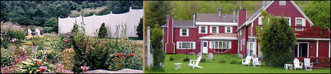
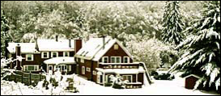

French Family Association
The Official Website of the Surname French
American Charts
of the Surname French
Last updated by Mara French
on 3/28/11. Go to Chart Index.
Send corrections, comments, or additions to Mara French
¡ Chart #1, Thomas French, 1584
Thomas French was born in 1584 in Bures St. Mary near Assington, County Suffolk, England. Thomas m. Susan Riddlesdale 5 Sep 1608 in Assington. Susan was b. 20 Apr 1584 at Boxford, Suffolk Co., England, dau. of John and Dorcas Riddlesdale, d. Aug 1658. Thomas d. 5 Nov 1639 in Ipswich. Both Thomas and Susan emigrated in 1635 to Ipswich, Massachusetts, five years after their son immigrated: Thomas French Jr., born ca. 1608, d. 8 Aug 1680 in Ipswich, Essex, MA, who emigrated from Assington, County Suffolk, England, to Ipswich, MA in 1630. Thomas French Jr., m. Mary Scudamore born approx 1612 in Gloucester, England and d. 6 May 1681 Ipswich, Essex, MA. See DNA Tests for Group 6.
¡ Chart #2, William French, 1605
William French was born ca. 1605 in Halstead, County Essex, England and immigrated to Billerica, MA in 1635. He m1. Elizabeth Godfrey Symmes. A proven marriage record has not yet been found. Elizabeth d. 31 Mar 1668. William m2. 6 May 1669 Mary Lathrop, dau. of Thomas and Sarah Lothrop (name later written Lathrop), widow of John Stearns. William d. 20 Nov 1681. Of his 13 children, only five were living at the time of his death: John, Jacob, Mary, Sarah, Hannah. Will made 5 Jun 1679, proved 20 Dec 1681. See DNA Tests for Group 6.
John French was born in England ca. 1610 and probably came with his wife to America about 1635, settling in Cambridge, MA. He did not immigrate with his brother, William French, FFA Chart #2. We do not know where either John or William were born, nor do we know the names of their parents. In 1637 he was listed as a property owner, and in 1642, was on a list of proprietors of Cambridge, MA. He is mentioned in church records, 1638-39-40. By trade he was a tailor. Both he and his wife died during an epidemic in 1645/6. See DNA Tests for Group 6.
¡ Chart #4, Edward French, 1595
Edward French was born in Rugby, Warwickshire, England in 1595, immigrated ca. 1636 to Ipswich, MA and later made Salisbury, MA, his home. He married Anne Worcester in England. This line migrated to S. Hampton, Kingston, Chester, Candia, NH; Gardiner, Augusta, Hallowell, Fayette, Chesterville, Belfast, Mt. Vernon, ME; Bridgewater, Hartford, Andover, VT. See DNA Tests for Group 3.
John French was born ca. 1612 in England. He was first
recorded in Dorchester, MA, on 27 Jan 1642/3 after his arrival in Boston. He
and his wife Grace (Kingsley?) had 9 children: John, Thomas, Mary, Dependence,
Temperance, William, Elizabeth, Thomas, and Samuel, all born in Braintree. Some
say John was born on 26 May 1612 in England; others say he was born in
1622. Another says he was born in 1619 in Suffolkshire. Others say he was
born in Dorsetshire, England. Some researchers say that John’s wife’s name was
Grace Kingsley; others say her surname is unknown. He immigrated to Braintree,
MA ca 1637. This line later resided in Dorchester, Mendon, MA; Randolph,
Bloomfield, Maidstone, Glover, Georgia, Bethel, Sharon, Stamford, Bennington,
VT; Chateaugay Corners, NY; Wauesha, Portage, WI; and Bridgewater, Brockton,
Stoughton, Milton, MA. DNA Test for Chart #5.
¡ Chart #6, Richard French, 1626
Richard French was born in 1626 in Coggeshall, Essex, England. He immigrated to Cambridge, MA ca. 1647. Also lived in Marshfield, Billerica, Bedford, Topsfield, Woburn, Boston, MA; Hollis, Cornish, NH. See DNA Tests for Group 3. This is the line of Mara French.
¡ Chart #7, Stephen French, 1601
Stephen French was b. 26 Dec 1600/01 in Misterton, Somerset Co., England, the son the Richard French, b. 1575 in England. Richard probably had four children: John b. ca. 1599, Stephen b. 1601, Mary b. 1603, and Judith b. 1615. He was the first French emigrant to America in 1630. He emigrated to Weymouth, MA, and his descendants also lived in Dorchester, Hingham, Abington, Brockton, Bridgewater, Hardwick, Ashburnham, MA; Prospect, ME; Coventry, CT; Hardwick, Barre, Reading, VT; Concord, NH.
¡ Chart #8, Francis French, 1625
Francis French was born in Halstead, Essex, England in 1625, and emigrated to Billerica, MA in 1635 with William French of Chart #2, an unknown relation. Some say William was his uncle. This line later made homestead in Derby, Trumbull, Stratford, Huntington, Danbury, Milford, Monroe, Redding, Ridgefield, New London, Seymour, Woodbridge, CT; Beaumont, TX. Francis French (1); Francis French (2); Israel French (3), David French (4-5), John Jay French to TX (6), David French (7), John French (8), Homer French (9-10). This chart is complete, but it is not entered into the computer. If a male French from this line could take a DNA test, it would greatly solve the ancestry of this line.
¡ Chart
#9, Thomas French, 1615
Thomas French was born ca. 1620 in England and immigrated to Guilford, CT, ca. 1660. His descendants also lived in Killingsworth, Weston, Trumbull, Bristol, Fairfield, Danbury, CT; Charlestown, MA; Westminister, NH; Madrid Springs, Pompey, and Potsdam, NY. Thomas French (1), m. Mary Button, Ebenezer French (2), b. 3 Apr 1658 in Guilford, CT, m. Susannah Blatchley, Thomas French (3), b. 30 Oct 1698, m. Sarah Graves, Enos French (4), b. 20 Dec 1725, m. Mary Wilcox; Enos French (5), b. 12 May 1767, m. Mechitable Payne, Marcus French (6), b. 15 Jun 1807, m. Louisa M. Storrs; Sheldon Willard French (7); b. 7 Feb 1843 in MI, m. Matilda C. Bell; Marion Reiff French (8); Geraldine L. French (9). This chart is complete, but it is not entered into the computer. If a male French from this line could take a DNA test, it would greatly solve the ancestry of this line.
Chart #9 is primarily based on the work done by Harry Dana French before he died in 1960. Of all the 10+ charts he organized from New England, this chart was probably researched the least and therefore probably has the most information to be found. This chart also does not connect thru DNA with any of the main charts, such as 1, 2, 3, 4, 5, 6, 7, 8, or 11. This work is only in draft form and needs more research and data to be added.
I’d like to thank Sally Dingsoyr of Potsdam, NY, for the years of research she provided on this family. After her ancestor, David French, purchased land in Potsdam in 1803, built a house in 1815, then a farm house in 1844, sold the farm house in 1885, only to have Sally Dingsoyr buy it back into the family 100 years later in 1985. Sally turned it back into a restaurant called the “1844 House” (see generation 5).
I’d also like to thank Mike French of Hawaii, who contacted
me about his ancestors who lived where I used to live in San Jose, CA. His
ancestor, Alden French, raised pears in the rich valley of Santa Clara County.
This land was replaced years later by Silicon Valley, the computer headquarters
of America, precisely where I worked at Cadence Design Systems from 1986-2003. Alden
was b. in 1878 and had 5 children. His ancestors sold this land to
Hewlett-Packard in the late 1950’s for $1 million. HP kept it in agriculture
for 30 years to reduce property taxes, and then sold it at the beginning of the
Silicon Valley boom (about 1980) for $330 million (see generation 9).
¡ Chart #10, Henry French, 1760
Henry French, b. ca. 1760. Greene Co., Wash Co., TN; NC. Henry French and his son William of Greeneville, TN. William was b. 4 Jul 1795, m. Sarah Ann Glass in Greeneville, TN; their son John P. French who m. Sabra Jane Collier, and their son James Gentry French who married Margaret Amanda Burgner and moved to Nebraska. 60 pages, includes photos. Write to Ruth French Duffy, 2405 Jefferson, Bellevue, NE 68005. Also see FFA Chart #111. Henry French (1); John Peter French (2), b. 9 Feb 1793, m. in Washington, TN, d. 16 Mar 1877 in Alma, Marion Co., IL; Gilbert Walker French (3), b. 22 Jun 1825; John Randolph French (4), b. 1861 in Marion Co. IL; Edward Milton French (5), b. 30 Sep 1887 in Kell, Marion Co., IL; Eleanor K. French (6), b. Mt. Pleasant, TN; Mary Linda Burnett (7).
¡ Chart #11, Samuel French the Joiner, 1687
Samuel immigrated from Bradford Abbas, County Dorset, England. His ancestors came from Saxmundham, Kelsdale, Knodishall, Lowestoft, in Suffolk, England. In America, his descendants lived in Huntington, Northfield, Thomaston, Oxford, Stratford, CT; Dunstable, MA; Hampton, NY; Manchester, VT. See DNA Tests Group 2.
¡ Chart #12, John French, 1710
John French was of Westmoreland Co., Tazewell Co., Frederick Co., Culpepper Co., Montgomery Co., Giles Co., VA; Mercer Co. and Hampshire Co. WV.
"Interwoven", the Genealogy of Matthew French, Siblings, and Descendants of Virginia, 1710-1996, Chart #12, published June 1996. FFA member Virginia Wermuth has done a tremendous job on this book. John French, b. 1710 in Westmoreland Co, m. Martha Upshur or Lipshur (probably a handwriting misidentity) ca. 1735 in Westmoreland Co., d. 1750 Frederick Co., VA or Hampshire Co, WV. Matthew French, b. 2 Feb 1732 (3 weeks before George Washington was born in the same area) in Northern Neck, later Westmoreland Co, VA, d. 1814 at Wolfe Creek, Giles Co., VA, m. Sarah Payne in 1757/58 in Culpeper County, VA. Virginia attended several reunions of her family, most recently in June 1995 and June 1996 in Bluefield, VA, on to the border of WV. The book is 8" x 11", over 1100 pages (in 2 volumes), includes several photos. The index is 50 pages. Order the book from Virginia Wermuth. Quantity is limited - call Virginia before ordering at 1-804-795-2658. Virginia Wermuth, 5929 Hines Rd., Richmond, VA 23231. Two volume book, currently not in print. For questions, contact FFA member Virginia Wermuth, 5929 Hines Road, Richmond, VA 23231. See DNA Tests Group 9.
¡ Chart #13, Angus French, 1815, connected to Chart #3
Angus French (1), born in Scotland, m. Nancy McBride who was b. in Ireland; Angus French (2), b. 15 Dec 1842 in Crysler, Ontario, Canada, d. 14 Jul 1930 in Tieton, Yakima Co., WA, m. Elsie Alice Jane Hawn who was b. 23 Jul 1854 in Stormont Co., Ontario, Canada, dau. of George Hiram Hawn and Elsa Jane Holester. Angus and Alice resided in Cowiche, WA in 1904.
¡ Chart #14, James French, 1686
James French, b. ca. 1686, m. Elizabeth, lived in Prince William County, VA. His descendants also lived in Prince Edward and Fauquier Counties, VA, and then moved to Montgomery Co., KY. James' son, William, m. Catherine Hall. William had a very prosperous son James (who m. Keziah Callaway). This family started their prosperity in the first generation as tobacco planters, and later became lawyers, judges, and pastors.
Also, James French (1), m. Sarah Scarborough Butler Henry; James Henry French (2), m. Sarah Lorrinilla Webb; Junius Butler French, DD (3), m. Annie Lawrence Dial; Annie Carol French (4), m. Roswell Francis Field; Charles Field (5), m. Barbara A. Wiggins. Family homesteads are Warrenton, VA; San Antonio, TX; Jacksonville, FL; Ft. Worth, TX.
¡ Chart #15, William French, 1768
William French was b. ca. 1768 in MA, m. Bethia Porter in Norfolk, Litchfield Co., CT. His daughter Sibel (or Sybil) Martha French, b. 1796 in MA, d. ca. 1860-70, m. William Palmer Judd ca. 1818. All Sybil Judd’s children were born in Norfolk Co., CT: Mary (1818), Caroline (1820), Catherine (1822), Henry (1824), Walter (1826), Edwin (1828), James (1832), Frederick (1834), Frances Arabella (1837), Margaret Orianna (1838), Frank H. (1844). In 1850 Henry Judd was living in Prospect, New Haven Co., CT. William’s other children were Bethia Eliza French, Lephia French, and Polly Mariah French. This French line ends here because no males were born to William.
¡ Chart #16, Joseph P. French, 1812
Joseph P. French, b. 23 Mar 1812 in Edgefield Co., SC, d. 22 Oct 1879 in Pike Co., AL, m. 1833 to Mary W. Brown in Houston Co., GA. She was b. 27 Mar 1818 in GA and d. 20 Jan 1913 in Wood Co., TX. He was a lay Baptist Minister and so well thought of in Baptist ministry circles that an honoring obituary on hm was issued by the Salem Baptist Association of Alabama in 1880. In the obituary, it is mentioned that Joseph's father deceased when Joseph was a small boy in Edgefield District, SC , "leaving himself and others to the care of the mother, and a childhood of deep poverty, hardship and toil". The obituary goes on to say that Joseph, in early manhood, migrated to Georgia and there married Mary W. Brown, and from there Joseph and Mary then migrated on to Pike Co, AL. But, alas, the obituary does not mention the names of Joseph P.'s parents! Joseph and Mary had 15 children: Elizabeth Jane, James, Lydia, John, Emeline, Marion, William, George, Richard, Mary, Euperdemus, Sarah, Ann, Andrew, and Leonard. See DNA Tests Group 1.
¡ Chart #17, Hosea French, 1783, connected to Chart #1
Hosea French, b. 1783 in Windham Co., CT, d. 28 Nov 1868, son of Sluman French and Dinah of New London, CT. Hosea and his wife Susanna Carney had 7 children: Almira, Delina, Salinda, Emily, Melista, Hosea, and Jonas.
This may not be the correct connection for Hosea in that he m. Rhoda/Rhodaett and had son William, b. 1824 also in Kent, CT, m. Emma Sheldon who was b. 1823/4 in Kent, CT, d. 14 Feb 1854 in New Milford, CT, buried at Lower Merryall Cemetery, dau. of Caleb Sheldon and Anna Barnum. William d. 21 Jan 1899 in New Milford, CT. They had children: Sarah; Rhodaett b. 5 Mar 1834 in New Milford, CT, m. George Washington Sharra; Isabel; George; William; and Mary E. Therefore, further research is needed.
¡ Chart #18, Joseph French, 1767, connected to Chart #3
This chart was Joseph French, Sr., b. 6/2/1767 in MA, m1.
Eunice Mills, m2. Sally Smith, and moved to a farm in Adams Co., IN. They had
children: Joseph French Jr. who m. Elizabeth Beach, Eunice, Hannah, Sally,
Jacob, George, Rolly, Cintha, Philena, Smith, and Angeline. Also lived in
Eaton, Madison Co., NY.
¡ Chart #19, Captain Noah French, 1754
Noah French, 1754. Elizabethtown and Morristown, NJ; Essex Co., NY. 1754-1843, of Elizabethtown and Morristown, NJ. This chart has been taken over by Jan McCabe from Virginia E. Schwabel. Noah was b. 28 Feb 1754 in Elizabethtown, NJ, d. 1843, m1. Mary Rolfe, m2. Johannah Campbell, d. 14 Nov 1843, Hermon, St. Lawrence Co., NY. He had 12 children: Jemima, Henry, Sarah, Eunas, Rolf, Mary, John, Alexander, Noah, Johannah, Elias, and George.
¡ Chart #20, Thomas French, 1611
Thomas ffrench was born in Nether Heyford, Northamptonshire, England. Thomas died in Nether Heyford in 1673. Thomas Jr., his son, m. Jane Atkins. This line were Quakers of New Jersey and are not connected to any of the other French lines from New Jersey in that their DNA tests do not match.
¡ Chart #21, Aaron French Sr., 1739 and sons Aaron Jr. and Ezekiel
Aaron was b. 8 Sep 1739, died 31 Aug 1805, and lived in Monmouth Co., NJ. His son Aaron Jr. was b. 19 Apr 1767 and d. 31 Jan 1850 and lived in Licking Co., OH. Most likely Aaron's parents were John and Allee French of Shrewsbury, NJ, but this has not been proven. His siblings were Deborah, Elizabeth, Mary, Ezekiel, Lydia, Asa, and Susannah, all of Essex Co., NJ. Of these children, Ezekiel had 11 children who moved to WV and then Miami Co., OH. The DNA tests prove that Charts #16, #21, #22, #28, #36, #112, #184, #188, and #189 are related. See DNA Tests Group 1. During the Revolutionary War, Aaron lived in a part of New Jersey that suffered much at the hands of the British. Many church, town, and other records were then lost.
¡ Chart #22, Moses French, 1735
Moses French was b. ca. 1735 in Sussex Co., NJ and died
before 1797 in Sandystone Township, Sussex Co., NJ. He m. Congleton. His son,
Aaron French, was born 1 Mar 1767 in NJ and died 1 Jan 1851 at Sheshequin
Township, Bradford Co., PA. His wife, Mary Meyers, was born 28 Apr 1778 in NJ
and died 6 Dec 1863 at Sheshequin, PA. Their son, Walter French, was born 3 May
1812 in PA and died 16 Jun 1890 at Sheshequin, PA. His wife, Sarah
"Sally" Rogers, was 9 May 1809 in Bradford Co., PA and died there 6
Mar 1864. Their son, Walter Henry French, was born 19 May 1847 and died 27 Dec
1911 at Chemung, Chemung Co., PA. His wife, Harriet Gertrude VanSice, was born
7 Sep 1861 in Rome, PA and died 8 Mar 1914 in Athens, Bradford Co., PA. Their
son, Ralph Earl French, was born 1 Dec 1894 in Athens, Bradford Co., PA and
died 18 Jun 1965 in Syracuse, Onodage Co., NY. His wife, Ethel Florence McBain,
was born 28 Nov 1905 at Lowville, Lewis Co., and died 9 May 1975 at Watertown,
Jefferson Co. See DNA
Tests, Group 1.
¡ Chart
#23, Isaac French, 1765
Isaac French was living near Fort Detroit by about 1790 when his son, Peter was born. Isaac was living in Chatham, Kent Co., Upper Canada by 10 Mar 1797 when he received property from the Crown in Howard Twp., Kent Co., Ontario. He died before 1820 at Kent Co., Ontario.
His son, Peter French, was born about 1790 at Detroit, Michigan and was a farmer in Kent Co., Ontario. He married Rachel Blackburn about 1812 at Ontario. Ethnic origin listed in the 1871 census as German, along with four of his children. Peter died on 22 Sep 1878 at Chatham Twp., Kent Co., Ontario.
Their son, John French, was born about 1819 at Chatham Twp., Kent Co., Ontario and died on 15 Aug 1882 at Chatham Twp., Kent Co., Ontario. He married Mary Dolsen on 3 May 1843 at Chatham, Kent Co., Ontario.
Their son, Jacob "Jake" French, was born on 9 Jul 1848 at Chatham Twp., Kent Co., Ontario and died on 22 Feb 1921 at Montville Twp., Medina Co., OH. He m. Mary Stewart McKerrall on 16 Dec 1875 at Chatham Twp., Kent Co., Ontario.
Their son, Roy Stuart French, was born on 24 May 1892 at Saginaw, Saginaw Co., Michigan and died on 11 Feb 1959 at Cleveland, Cuyahoga Co., OH. He married Maude Florence Fitzwater on 4 Jan 1917 at Orange, Cuyahoga Co., OH. See DNA Tests, Group 4.
¡ Chart #24, Rodger French, 1700
Please volunteer to enter this chart online.
Rodger French, b. ca. 1700, m. Margarite (or Margrietje Louw) on 13 Feb 1732 in New York City. They had children Jane French, b. ca. 1732 who m. Balthazar Kip (b. 4 Dec 1723), and Judith French who m. Henricus (or Henrdick) Kip. New Amsterdam (New York City) was a reformed Dutch community at this time. Philip French m. Anna Farmar. Rodger d. before 31 Jan 1753. This family was mostly from New York: NYC, Albany, and Mt. Vernon. Some of this family were baptized at the New Amsterdam Reformed Dutch Church between 1731 and 1800. The following members were baptized on 13 Feb 1732: Rodger French, Margrietje Low, Thomas, Cornelis Low and wife Margrietje Van Bussum. Another listing shows the same names on 12 Dec 1733: Roger French, Margrietje Louw, Roger, Cornelis Louw, Annatje Louw. On 1 Apr 1733, Philip French, Anna Farmar, Philppus, Thomas Farmer and wife Anna Billop were baptized. On 31 Jan 1753 the listing shows Balthasar Kip, Jannetje French, Balthazar, Johannes Kip, Margareta Louw wid Roger. On 24 Dec 1769 the list shows Henry Kip Jr., Judith French, Margaret, Luke Kierstede, and Sara French. On 22 Jun 1776 the list shows William Robinson, Sarah French, and William. The relationship between Philip and Rodger is unknown. Cornelis Louw and Annatje Louw were probably Margrietje’s parents (or brother) because they witnessed their daughter’s marriage to Roger French; however, ancestry.com lists them as Petrus Louw and Debora Van Vliet of Ulster, NY. Rodger was a Mariner.
Data submitted by Jeanette S. French: Don't know if the children listed for Margaret Low and Roger French are accurate -- they were posted by another researcher.
Margrietje Louw b: BEF. 16 JUL 1704
+ Roger French d. bef. 19 July 1744
3 Thomas French b: 13 FEB 1731/32
3 Sarah French b: 28 MAY 1738
3 Jannetje French
3 Roger French b: 12 DEC 1733
Marriage Date: Sep 22, 1728
----------------------------------------------------------------
Abstracts of Wills Vol III 1730-1744
Name of Intestate. To Whom Granted. Date.
Roger French [mariner] Wife Margaret [Low] July 19, 1744
======================================
Abstracts of Wills, Vol XVI, Corrections Vol I
PAGE 193.
7 lines from bottom Will of Cornelius Louw read Cornelius
Low, his will also mentions daughter Margaret, widow of
Roger French.
=================
PAGE 427.--Continued.
17 lines from top after Roger French add Mariner.
==========================
Roger French found in:
Selected Areas of New York, 1639-1916 Marriage Index
Gender: The gender of Roger French is male.
Spouse: Margarita Louw
Marriage Date: Sep 22, 1728
County: New York Co.
Additional Marriage Information: Pub. 21 Sep. 1728.
Location: This marriage is recorded and/or took place at New Amsterdam Reformed
Church, New York City, NY.
Source Information: New York Genealogical and Biographical Society.
"Marriages from 1639 to 1801 in the Reformed Dutch Church, New Amsterdam,
New York City". 1940. Contains the following information: Pub Info
spanning 1639-1801., page 148.
Kinship Publication Code: 2-5
Very recent research done by Lois Stewart, loissdjm2@aol.com, dated 2009-06-08, states that Roger’s daughter was Jane French who m. Balthazar Kip on 27 Nov 1749 in NYC, and that Jane was b. ca. 1729 in NYC. Another daughter of Roger, Judith French, m. Henricus Kip on 28 Aug 1763 in the New York Reformed Dutch Church, and that she was b. ca. 1741 and d. after 1784. Roger’s parents are not listed in this database; however, the database lists 35 Frenches, many from Duanesburg, Schenectady Co., NY, who may or may not be related: Website: http://wc.rootsweb.ancestry.com/cgi-bin/igm.cgi?op=REG&db=delamontagne&id=I00050
Marriages:
1728 22 Sep;
Roger French; Margarita Louw
1743 08 Aug; John Conelly; Susmore French
1744 25 Sep; David van Horne; Anna French
1760 27 Nov; Michael French; Mary Den Eyk
1763 28 Aug; Henry Kip; Judith French
1771 10 Sep; Henry McCloskey; Margareth Frensch
1772 24 Feb; William Robertson; Sarah French
1784 19 Sep; James Martin; Judah French, Wid of Henry Kip
¡ Chart #25, William French, 1780
William French was b. ca. 1780, lived in Independence Co., AR, and married Nancy Chapman French (born 14 Feb 1785 in Newberry Co., SC) came to Lawrence Co. when it was still part of Missouri in the early 1800's. Later it became Izard Co., AR. William’s birthplace is unknown. William and Nancy were part of a group of early settlers in Arkansas Territory.
Their son, George French (2), b. 25 Dec 1811 in TN, m. Lynia Finley.
George’s son was Townsend Dickinson French (3), b. 14 Dec 1837 in Izard Co., AR, m. Caroline Louise Anderson, moved to Oregon in late 1876 and was murdered in Morrow Co., OR in 1880 leaving 10 children.
One child was Emma Mildred French (4), b. 28 Dec 1875 in Sacramento, CA, m. Renne Julian Howard; Marion Randolph Howard (5), m. Hazel Rebecca Laughlin; Linda R. Howard (6).
Siblings connected to Chart #25 are: Thomas Jefferson French, Daniel Benjamin French, Martin VanBuren French, Uzza Pomeroy French, Benjamin Nunnley French, William Jefferson French, Uz Pomeroy French. Who is Hayden French in Independence Co., AR in 1836 tax list? Who is Samuel French in 1833 tax list of Izard Co., AR? Is Samuel the son of William and Nancy? George French and brother Daniel B. traveled to CA in 1859 and settled in Amador Co., CA during the gold rush era.
Homesteads were Lawrence Co. MO; Locust Grove, Izard Co., Independence Co. AR; Livingston Co., KY; Walker Co. TX; Greenbrier, NY.
¡ Chart #26, William French, 1730
Please volunteer to enter this chart online.
William French, b. 1730 in Glasgow, Scotland. William (1), Alexander (2), Elizabeth (3), m. John Sherer. Alexander French, b. 1758 in PA, m. Elizabeth Morrison, and he d. 10 Dec 1833 at Newton Falls, OH. Colonel Enoch French had daughter Jane Marie French, b. ca. 1797 and resided with her husband Isaac Core whom she m. 23 Mar 1820 in German twp., Fayette Co. PA. The library of Allen Co. OH Historical Society at Lima, OH, has more on this line. Other residences for this line are Philadelphia, PA; North Jackson, Milton, OH.
¡ Chart #27, James French, 1770
Please volunteer to enter this chart online.
James French (1), b. ca. 1770, d. between July 18 and Nov 17, 1820 in South Shenango Twp., Crawford Co., PA; Robert French (2), b. 1791, d. 28 Feb 1879 in Crawford, PA, m. Margaret Clancy and had six children; James Dolan French (3), 1832-1887, lived in Ashtabula Co., OH, m. Julia Mack; Sarah Ann French (4), m. Ashley; Claude Bliss Ashley (5), 1883-1945; Doris M. Ashley (6), m. Bucci. James (1) was a shoemaker. He named sons James, Robert, Charles, and Thomas. Other residences for this line are Shenango, Crawford Co, PA; West Williamsfield, Ashtabula Co., OH.
¡ Chart #28, John Morgan French, 1809
This chart now ties in with John French the Brick Mason, Chart #188. John Morgan French, b. ca. 1809 in South Carolina, m1. ca. 1835 a Miss Burgess or Byrd or Bird who died shortly after 1842 in TN after giving birth to four children, m2. ca. 1844 Elizabeth Campbell in Tennessee. John d. 1859 near Coffeeville, Yalobusha County, MS. Elizabeth had five children. John moved to Tennessee before 1820, and to Yalobusha County, Mississippi, between 1842 and 1845. Elizabeth may be descended from the Campbell family in Cumberland County, North Carolina. Elizabeth was b. 23 May 1819. First 4 children born in TN, possibly Dyer Co, and the last 5 children were born in Mississippi. All 9 children born from1835 thru 1856. After the death of her 1st husband in 1859, Elizabeth m. John H. Brock. See DNA Tests for Group 1.
¡ Chart #29, Samuel Parsons French, 1765, connected to Chart #4
Edward French (1); Joseph French (2), b. ca. 1631, m. Susanna Stacy; Joseph French (3), b. 16 Mar 1654, m. Sarah Eastman; Joseph French (4), m. Abigail Brown; Daniel French (5), b. 21 Aug 1708 in Salisbury, MA, m. Sarah Gould; Gould French (6); John E. French (7), b. 1767, (m. Joanna French [6]; Joseph French [5] [m. Abigail French [4]; Timothy French [3]; John French [2]; Edward French [1] ]; Joseph French [4]; Simon French [3]; Joseph French [2]; Edward French [1] ); Joseph French (8), b. 1800, m1. Statira Parsons, m2. Abigail Ames, res. Cornville, ME; Sanuel Parsons French (9); b. 1765, Cornville, Somerset, ME; Family moved to Prairie City, Grant Co. OR, m. Ann Jeanette Hyde in Oregon in 1872; Emma Margaret French (10), m. Marshall Jenkins Puett; Winnie Margaret Puett (11), m. William Harold Deardorff; Gladys Deardorff (12), m. Wayne E. Drewett; Karen Drewett (13), m. Markert.
¡ Chart #30, Louisa or French, 1725
Louisa French, probably in Antrim twp., Franklin Co., PA, ca. 1725, m. John Schnebele or Snively, or Shavely in 1743 either in Washington Co. MD, or Franklin Co. PA. After 1769 when he moved to Frederick Co., MD near Hancock and the PA line, he changed his name to Snavely from Snively. They had several children: Catherine Snively, b. 18 Oct 1744; Margaret Anna Snively, b. 29 Jul 1755; Michael Snively, b. 25 Jan 1757; Mary Snively, b. 2 Nov 1758; Christina Snively, b. 14 Nov 1761; Jacob Snively, b. in Antrim Twp., Franklin Co., PA, d. 2 Aug 1802, m. Eva Hays; Barbara Snively, b. in Anrim Twp., d. in Ohio, m. William Jackson; Magdalena Snively; Levvinia Snively; John Snively, b. after 1773 in Washington Co., MD, m. Mary Miller; Elizabeth Snively; Hannah Snively. Louisa’s husband, John Snively, was b. 1720 in Manheim, Lancaster, PA, d. 1791 in Washington Co., MD. John’s father, Jacob Snively (21 Dec 1694-1766) was born in Switzerland. He was the first Mennonite settler in Antrim Township in 1735. He settled on a tract of land between present Greencastle and Shady Grove. He had built a log cabin at what is now the site of a stone mansion built by his son Andrew Snively in 1781. This chart has been connected to FFA Chart #195.
¡ Chart #31, Henry French, 1755
Henry resided in Mercer Co., KY. Birth of Henry in Germany is documented in Portrait and Biographical Album, Vermilion Co., KY, 1889, biographical sketch of Ersom French, son of George French, and grandson of Henry French. This portrait also says that after being married to Elizabeth Ersom (a German name), Henry French left his home in Germany and sought a new field of labor under the banner of freedom, in the land of liberty. It could be that Henry lived briefly in Germany before immigrating to America. Next step would be to look for a ship record for a Henry leaving Germany in about 1770. It is assumed that the family immigrated to Virginia, then perhaps moved to Maryland, and lastly to Mercer County, KY, in about 1773 when their second child was born. They lived in the Harrodsburg, KY area. This French family was among the first settlers in that area. Andrew French (1), m. Margery Frizzell 5 Feb 1712 in Lesbury, Northumber, England; Henry French (2), b. 1713 m. Isabell Maxwell 1751 in England; Henry French (3), b. 1755, m. Elizabeth; George W. French (4), m. Elizabeth Sturman; Erastus French (5), b. 22 Jul 1826 in Vigo Co., IN, m. Artimacy Swisher; Samuel Sturman French (6), b. 9 Feb 1852, m. Sarah Isabella Dickson.
Henry French’s siblings:
James b. 1752
Joseph b. 1753
Henry b. 1755
John b. 1757
Sarah b. 1759
Henry b. 1755 m. Elizabeth. His son George b. 1782, m. Elizabeth Sturman 1804 Mercer Co. KY, their son Thomas S. French, b. 10 Jul 1814 Vincennes, IN m. Mary Kirkpatrick 16 Apr 1840 in Stephenson Co. IL, dau. of William Kirkpatrick and Lydia Bartlett. Their children: George W.; William K.; Sterman; Joseph Bartlett; Eliza Jane; John H. (in Calif) Perry. FFA: This family is listed in our FFA Library sources F046 and F114.
¡ Chart #32, Laura A. French, 1858
The FFA member connected with this chart says Benjamin J. French was the father of Laura Adelaide French. Benjamin was b. ca. 1831, m. (first name perhaps Julia) Asbury. Benjamin’s parents are unknown. He had 2 children: Laura Adelaide French and Neil French. Both were left orphans very young and were raised by foster parents (unknown). Benjamin’s daughter, Laura Adelaide French, was b. 21 Apr 1858 in Indiana, d. 7 Nov 1930 in San Antonio, TX, m. Lafayette Finely Hall in 1878. Chart #3 has a woman named Laurilla Adeline French, b. 1 Feb 1857.
1858 – Laura born in Indiana
1870 – Laura was living in Batesville, Independence Co., AR, age 11
1878 – Laura married Lafayette Finely Hall – seems children born
later
1893 – daughter Lela or Leota C. Hall born in OK
1896 – daughter Grace A. Hall born in OK
1897 – son Victor Hall born in OK
1898 – daughter Verda V. Hall born in OK
1900 – Laura and Lafayette living in Enid, Garfield Co., OK
1910 – Laura and Lafayette living in Stone, Major Co., OK
1930 – Laura d. in San Antonio, TX
1931 – Lafayette d. in San Antonio, TX (not 3,
¡ Chart #33, Richard C. French, 1779
Please volunteer to enter this chart online.
Richard C. French, b. ca. 1779 in NY, d. July 1850 in Van Buren, Wayne Co., MI, m. Hannah. Richard is listed in the 1840 census of Van Buren, Wayne Co., MI, living with a male between 20-30, Richard was 60-70, 2 females 15-20, and his wife 50-60. He is not in the 1850 census. Hannah is listed in the 1850 census as age 69, b. ca. 1781 in NY, living in 1850 in Van Buren, Wayne Co., MI, living with Harrie A. Silsby.
Levi N. French, Richard’s son, b. 7 Apr 1820 in Monroe Co., NY, m. 7 Jan 1849 Celinda Phoebe Convis, d. 7 Dec 1887, was a farmer in Monroe Co., MI. In the 1850 census of Van Buren, Wayne Co., MI, Levi is listed as age 31, b. ca. 1819, living with the Convis family and his wife Salinda Convis French, age 26. In the 1860 census, Levi is living in Exeter, Monroe Co., MI with his wife, Phoebe, age 34, and 2 children: Melissa French age 9, and Alonzo French age 5.
In the 1870 census of Exeter, Monroe Co., MI, Levi is 50, living with Celinda (44), Melissa (19), Alonza (15), Alphonsa (10), and Carrie (3). The children were all born in MI, and Levi and his wife were born in NY.
Levi’s brother, Richard, was living near him in the 1860 census of Exeter, Monroe Co., MI, age 44, with his wife Alvira age 43, and their children: Margret (16), Mary (14), Richard (12), George (6), Jesse (2). Likewise, this brother was living near Levi in 1870, age 54, with Sara (53), George (16), and Cornelia (13).
¡ Chart #34, Isaac Hurd French, connected to Chart #2
William French (1); Jacob French (2), m. Mary Champney; William French (3), m. Sarah Danforth; Ebenezer French (4), m. Elizabeth Hill; Jacob French (5), m. Sarah Ditson; Jacob French (6) b. 1765, of Williamsburg, MA and Maquoketa, Jackson Co., IA, m. Elizabeth Conant; Isaac Hurd French (7), m. Sarah Bowers; Lydia P. French (8), m. Willis A. Rice; Carlotta Rice (9), m. Archie Richardson; Howard Acil Richardson (10), Archie William Richardson (11); Paul Richardson (12).
¡ Chart #35, George S. French, 1806, connected to Chart #2
William (1); Jacob (2); William (3); Ebenezer (4); Ebenezer (5); Zadock (6); George Smith French (7), b. 16 Nov 1806, m. Ann S. Taylor, 30 May 1833 in Bangor, ME, d. 15 Jan 1849. Ann S. Taylor was dau. of Abner Taylor of Bangor ME. Abner Taylor was a prominent merchant in Bangor in early 1800s.
¡ Chart #36, Hugh French, 1636
FFA member Margaret Amundson has collected an enormous amount of material on this line from Charles and St. Mary Counties, MD; Old Rappahannock, Westmoreland, Prince William, Stafford, Fauquier, King George, Richmond, Culpeper, Northumberland, and Loudoun counties, VA. Later of Kentucky; Muskingum County, OH; Zaneville, OH; Sedalia, MO. This line is closely connected to George Washington and George Mason. Margaret is a certified genealogist, number 398. The Board for Certification is incorporated in W.D.C. and was founded in 1964. This line also covers the adopted son, John (French) Flanagan. Hugh French emigrated from England, not Ireland as originally thought.
The French Family of Northern Virginia (Chart #36), by Margaret Amundson. This highly-recommended book was scheduled to be published by the end of the year 1998, but Margaret has had many health issues and most likely has to turn over her project to someone else. Margaret has spent the last 20+ years compiling this genealogy. It covers Hugh French who was b. ca. 1636 in London, England, and later lived next to President George Washington (who was only 7 years old) on the Potomac River between Virginia and Maryland. John and James French of Mason Co., KY and Hugh, Daniel, James, Richard, and John French of Adair/Russell Co., KY were descendants of Hugh French. All were in Kentucky by 1810. Hugh French Jr. was Justice of the Peace of Adair Co. in Mar 1806. Hugh French, the immigrant, d. 3 Dec 1701 in Stafford County, VA. Hugh settled in St. Mary’s County in Maryland in 1663, and then in Old Rappahannock County, VA 15 years later, now Richmond County. See See DNA Tests Group 1.
¡ Chart #37, Samuel French, 1790, connected to Chart #20
Samuel French m. Esther Sooy of Little Egg Harbor, NJ.
Thomas French (A); Thomas French (1), m. Jane Atkins; Richard French (2), b. 12
Dec 1665, m. Sarah Scattergood and Mary King; Joathan French (3), b. 27 Nov
1722, m. Esther Matlock; Francis French (4); [may be Francis (5)], m. Elizabeth
Frewl; Samuel French (5), b. 29 Apr 1790 Little Egg Harbor, NJ, m. Esther
Suey/Sooy; John Quincy French (6), b. 3 Nov 1827, of Randolph Co., IN, m.
Clarinda Hindle Flood; George W. French (7), b. 20 Dec 1864, m. Nancy Moon;
Forrest French (8), b. 22 Oct 1900, m. Doris Hill; Donna French (9), m.
Thornburg.
¡ Chart #38, Jacob French, connected to Chart #31
Jacob French (1), m. Rebecca Paul; Elizabeth Paul French (2), b. 1790 in Bullitt Co., KY, m1. James Porter in 1809 in Nelson Co., KY and had 6 children, m2. Robert Farquharson in 1821 and had 1 son. The family continues with her first husband: Nathaniel Porter (3), b. 1812, m. Elizabeth Hagler; Felix F. Porter (4), m. Harriett Loving; Evelyn Porter (5), b. 1880 in Paris, TN, m. Henry A. Ringwald (6); Henry A. Ringwald (7); Kathleen Ringwald (8), m. Robert S. Duggan.
¡ Chart #39, George French, 1820
Please volunteer to enter this chart online.
George French was b. ca. 1820, m. Cornelia M. Beebel and had daughter Cornelia M. French, b. 1 Sep 1856 in Exeter, Monroe Co., MI, d. 8 Apr 1919 in Des Moines, IA, m1. George Earl Watson on 26 Jul 1876 in Waltz, Wayne Co., MI and m2. Rev. Sanford Hayes. George French had no male heirs; therefore, this line ends here. Beebel is a name from Bohemia. This French line from Exeter, Monroe Co., MI, lived in the same place and time (1860-70) as Richard C. French, FFA Chart #33. Both families used the name Cornelia and George, but no connection can be found.
¡ Chart #40, Samuel Sherril French, 1839
Samuel Sherril French (1), b. 18 Feb 1839 in Scott Co, AR. Samuel S. French m. Lucy Ann Brown on 19 Dec 1859, and he d. 12 Nov 1914. Lucy was b. 12 Jan 1839 in Madison Co., MO, d. 1 Sep 1914. In 1870, Samuel lived in Tumbleston, Scott Co., AR, age 29, living with his wife Lucy, age 29, and their children all born in AR: William French (9), Samuel French (7), and Levi French (2).
Samuel S. French’s parents arrived in Arkansas early in the 1820’s from TN. His father was b. ca. 1805, not in AR. Before that the family lived in KY and in NC before that. The only head of households listed as living in AR in the 1840 census right after Samuel S. was born are as follows:
Elizabeth French, Scott Co., aged 30-40, with 4 males (1 under 5, 1 5-10, 1 10-15, 1 15-20)
George French, Izard Co., aged 20-30, wife 20-30, son and daughter both under 5
Joseph French, Jackson, Sevier Co., aged 60-70 with wife aged 50-60
Lorenzo French, Jackson, Sevier Co., aged 30-40, with one son aged 15-20, 2 sons under 5, his wife aged 20-30, and 2 daughters; one between 5-10, and the other 15-20. His wife was very young to have these children.
Nancy French, Athens, Izard Co., aged 50-60, living with 2 females: 10-15 and 20-30, plus 1 male 15-20 and 3 males 20-30. It would seem that Nancy is a widowed grandmother.
Pelisha French, Pulaski Co., a female aged 40-50, living with 2 females: 5-10 and 30-40, and 1 male under 5.
T.C.P. French, Monroe, Sevier Co., aged 30-40, living with 3 males: 1 under 5, 2 6-10, and 2 females: 1 under 5 and one 20-30 his wife.
From this study in 1840, Samuel S. French could have lived with Elizabeth, George, Lorenzo, Pelisha, or T.C.P. French (that’s 5 out of 7). Considering the fact that Samuel S. French lived in Scott Co., only Elizabeth would be possible. Going back to the 1820 census when Samuel S. French’s parents lived in TN, 15 Frenches are listed, and the only name (head of household) that coincides with the list above is Elizabeth French in Stewart Co., TN. In this same census in Stewart Co., TN, are (3 different Samuels) Samuel French, Samuel C. French, Thomas French, Saml French, and Gideon French. By 1830, only Samuel and Thomas French remain in Stewart Co., TN.
Let’s try a new angle. The name Clayborn sounds like a predominant family name. The first Clayborn appears in Arkansas in 1870 – there were 22 in all. Most lived in Pleasant Hill, Newton Co., AR. Others lived in Union, Izard Co., AR. The name Clayborn first appears in also in 1870. Let’s try the name Sherril which is Samuel’s middle name; it could be his mother’s name. There is an Eli Sherril living in Ruddall Twp, Independence Co., AR in 1830.
Until we know the names of Samuel S. French’s siblings, it is difficult to research who his father was.
The 1850 census of Boon, Scott Co., AR, lists Samuel as age 12, b. ca. 1838, living with Clarbon (probably Clayborn) C. French, age 23, a farmer, born in TX; Elizabeth Anthony French (7); and Rebecca French (18), both born in AR.
Samuel Sherril French’s son, Samuel Clayborn French (2), b. 22 Oct 1862 in Scott Co., AR, m. Martha Ann Wise on 28 Dec 1884. She was b. 7 Mar 1865 in Monroe Co., MS, d. 23 Mar 1939, the dau. of James Elbert Wise and Mary Jane Mays. Martha Ann Wise was part American Indian and the family lived on the Chickasaw Nation Indian Territory in Oklahoma. Samuel d. 4 Jul 1931 in Summerfield, Le Flore Co., Oklahoma, a farmer. He never lived any place as an adult except Oklahoma. There is a Clayborn C. French, probably a descendant, age 34, b. c. 1896 in OK living in Santa Barbara, CA in 1930. His father was born in AR and his mother in MS. He was a manager at a ranch estate, and was in WWI.
Samuel Clayborn French’s son, Thomas L. A. French (3), b. 16 Apr 1900 in Purcell, Chickasaw Nation Indian Territory, m. Idah Adell Williams of Fayette Co. AL on 14 Oct 1922 and had dau. Norma Jean French (4), m. Gerald E. Wheeler. Idah Adell Williams was b. 18 Jan 1903 in Fayette Co., AL, d. 10 Jun 1974, the dau. of James Farmer Williams and Ofelia Emeline Wilson. Samuel d. 13 Oct 1973 in Redlands, CA, a merchant. Thomas L. A. French had dau. Norma Jean French, b. 19 Oct 1923 in LeFlore, LeFlore Co., OK. The siblings of Thomas L. A. French (3) were Clayborne C. French and Sudy French.
Ref. FFA member Jean Wheeler. For another French family who lived on the Chickasaw Nation Indian Territory, check Chart #90.
¡ Chart #41, William Morgan French, 1807
The parents of William Morgan French (1) were both born in Maryland (ca. 1770), but their names remain unknown. There is a Simon French in the 1790 census of Baltimore, MD, with 1 white male aged 21-60 which is probably Simon, and 4 white females of all ages. Simon is the only French listed in the 1790 census of Baltimore, Maryland.
William M. French was b. 9 Sep 1807 in Baltimore, MD, m. Ann Richards 1829 in Allegheny Co., PA, William d. 4 Oct 1898 in Stanton, Powell Co., KY. Ann was b. in Wales on 10 Aug 1810, d. 17 Jan 1874 in Stanton, Powell Co., KY. According to the 1850 census of Montgomery Co., KY, William was 43, Ann was 42, and they were living with their children: John (20), Elizabeth (17), Nicholas (15), Mary Jane (13), William (10), Josephine (6), Irene (3), and two boarders: Robert Knox and Fanny Hall. William was a farmer, born in Maryland. Powell Co. was cut from Montgomery Co. in 1853.
William’s brothers may have been Nicholas, Morgan, Christopher, and John. Nicholas French was living in Baltimore, MD, in 1820, as head of household. Another Nicholas French, b. 5 Oct 1834 in PA, was living in Powell Co., KY in 1880, age 44, the brother-in-law of the Hall family, and he died 14 Feb 1913 in Powell Co., KY. He was William’s son.
William’s children were: (first 3 born in Pittsburg, PA;
last 6 born in Powell Co., KY)
John French, b. 25 Apr 1830, d. 2 Oct 1900
Elizabeth French, b. 21 Feb 1832
Nicholas French, b. 5 Oct 1834, m. 7 Oct 1889, d. 13 Feb 1913
Mary Jane French, b. 1835
William R. French, b. 1840
Adeline R. French, b. 31 Jan 1843, d. 24 Jan 1844 (1 yr)
Josephine French, b. 20 Nov 1844, d. 11 Oct 1918
Frances Irene French, b. 27 Nov 1847, d. 11 Jul 1867
Eoline French, b. 7 Nov 1852
William M. French’s son John was born in PA, and the rest of the children were born in KY, indicating that William and Ann moved to Hatcher’s Creek, Powell Co., Kentucky about 1832. William is listed in the 1860 census of Stanton, Powell Co., KY, as age 52, b. ca. 1808 in MD, a farmer, living with his wife Ann R. French, 50, and 3 children: Josaphene 15, Francis J. 13, and Eoline 8. William is listed in the 1870 census in Stanton, living with his wife and daughter Evlina, 17. Living next door to them is the Hall family of 5. In this same census is a William French, age 30, born in PA in 1840, a farmer, living almost next door to William born 1807. He lives with his wife Elizabeth, 24, and their children: Adaline 11, Pleasant 9, Lewis 7, Louisa 7 (twins), and Lucy 4. In the 1880 census, William is 72 and living in Powell Co., KY with his wife Ann and the Knox family of 5. This is one of the most helpful census records, because it tells where his parents were born. Both parents were born in MD – I would imagine his father was b. ca. 1780. Also in this 1880 census, William Jr. (40) and his wife Mary E. (36) live with their large family: Adaline 20, Pleasant 19, Louisa 17, Louesa 17, Lucy A. 14, Annie J. 7, Preston 6, James 4, and Maimie 2. This latter William of 40 years of age was born in Kentucky, his father born in MD, and his mother in Wales, which indicates that he is the son of William born 1807. Son James is listed as not being a direct relative, but the others are their children.
Their son was John French (2), b. 26 Apr 1830 in Pittsburgh, Allegheny Co., PA according to the 1850 census, m. Sarah McLaughlin of KY on 25 Sep 1851 in Fayette Co., KY. Sarah McLaughlin, was b. in 1832 in Montgomery Co., KY and died 1907 at Stanton, KY. John d. in 1900 in Stanton, KY, before his father died. The 1860 census shows John as Jno French, age 30, and his wife Sarah, age 28, living in Stanton, Powell Co., KY, with their children: William G. French (8), David N. French (6), Elizabeth A. French (4), and George W. French (1). John is still a farmer. In the 1870 census, John is still living in Stanton, Powell Co., KY with his family: William G. French (17), David N. French (16), Elizabeth A. French (13), George W. French (11), Eliza R. French (8), Cristopher French (7), Sarah F. French (5), Eugene French (3), John M. French (1). John is still a farmer. The 1880 census shows the family still living in Powell Co., KY where John is 50, Sarah A. 48, Annie 23, Christopher 17, Sarah F. 15, Eugene 13, John M. 11, Charles E. 9. Living next door to them are William 27, Jane M. 22, and Clarence 4. James French, age 16, lives next door on the other side with the Conley family. In the 1900 census, John and Sarah are living alone in Stanton, Powell Co., KY, ages 70 and 68. John is no longer in the 1910 census.
John French’s children were (all born in Powell Co., KY):
William G. French, b. 19 Jul 1852/53, m. 10 Oct 1874
David N. French, b. 1854, m. 14 Mar 1883, d. 30 May 1885
Elizabeth Ann French, b. 1857, m. 17 Mar 1881 to Francis Yocum (b. 6 Apr 1857,
d. 31 Feb 1924, a farmer, son of John Yocum and Jane Hudson of KY), d. 18 Jul
1905 in Stanton, KY.
George W. French, b. 29 Jan 1859, m. 14 Dec 1884, d. 28 Dec 1939
Eliza R. (Elsie) French, b. 9 Jan 1861/62, m. 25 Feb 1880 to B. J. Weings, d.
21 Aug 1935
Christopher M. French, b. 8 Jan 1863, m. 1 Feb 1894
Sarah (Sally) F. French, b. 14 Jul 1865, m. 25 Nov 1897 to Warren Martin, d. 27
Dec 1920
A. S. Eugene French, b. 16 May 1867, m. 7 Mar 1889, d. 15 Mar 1959
John Morgan French, b. 2 Apr 1869, m. 24 May 1896, d. 22 Aug 1901
Charles Edward French, b. 14 Jul 1871, m. 28 Dec 1898, d. 22 Oct 1925
John’s son, George W. French, was born in 1859 at Stanton, Powell Co., KY, resided in Bloomington, McLean Co., IL and died in 1939 in LeRoy IL. He m1. Ella Hall and m2. Mary Killion. See DNA Tests for Group 1. This chart formerly was Chart #189. This chart may also connect with Chart #166 or Chart #14. See French Family Bible Records. Working on this chart is Terry L. Thompson: terrylee@newnorth.net.
Ref: French Library F074. Also, Kentucky Bible Records, Vol. 192, #972.903, Kentucky Historical Society. Also, FFA member Nina Yocum and her nephew Terry L. Thompson
Kentucky birth and death records of Powell Co. KY for the French family are:
Helen Chaney, nee Helen French on 25 Dec 1889, d. 20 Apr
1953.
Eolinia Coulie, nee Eolinia French on 7 Nov 1852, d. 20 Jan 1913.
Nick French, b. 5 Oct 1835, d. 14 Feb 1913.
Elijah French, b. 18 Aug 1847, d. 26 Jan 1928.
Nannie French, b. 5 Mar 1855, d. 5 Mar 1917.
Olivia French, b. 29 Oct 1868, d. 17 Mar 1927.
Lou Mattie French, b. 26 Nov (year unk), d. 20 Apr 1953.
Hall (French), b. 20 Nov 1844, d. 11 Oct 1918.
Amanda Knox, nee Amanda French on 22 Feb 1858, d. 27 Dec 1942.
Sallie French Martin, nee Sallie French French on 14 Jul 1865, d. 27 Dec 1925.
Sudia Ringo, nee Sudia French on 18 Oct 1848, d. 7 Mar 1916.
Henretta Tipton, nee Henretta French on 1 Mar 1860, d. 5 Apr 1936.
¡ Chart #42, Thomas French, 1774
Please volunteer to enter this chart online.
Thomas French (1) was born in Penhurst, County Sussex, England in 1774, most likely m. Mary who d. at age 73 in 1847 in Penhurst. His son was John French (2), was born in Penhurst in 1801. His son was James Jason French (3), was born in Penhurst, Sussex, England in 1843, immigrated to the US with his company in the 1860s and moved to Kalispell, MT. The 1870 U.S. census for Gold Creek, Deer Lodge, Montana Territory shows James French (3), age 31, born in England ca. 1839, working on the farm, living with 4 other individuals. John French (2) is listed in the 1841 census of England as 35, b. ca. 1806, in Penhurst, Sussex, England, living with Mary French age 20, Mary French age 65, Daniel French age 2, and Delia French age 3 mo. Thomas French (1) is not listed in this census; perhaps he had died – he would have been 67 years old.
Also in the 1841 England Census in Penhurst, Sussex, England are Daniel b. ca. 1839; Delia b. ca. 1841; Harris b. ca. 1840; John b. ca. 1806; Mary b. ca. 1816; Mary b. ca. 1838; Mary b. ca. 1821; Mary b. ca. 1776 (who could have been Thomas French’s wife); Robert b. ca. 1811; and Robert b. ca. 1836.
¡ Chart #43, Samuel French, 1770
Please volunteer to enter this chart online.
Samuel F. French, b. ca. 1770, m1. Martha (Rogers) French, m2. Jane Rogers (Travis-French) b. ca. 1775, d. Summerhill, NY 20 Mar 1832, removed from VT where oldest dau. Abbe was born in 1800. They had children Jonathan, Abigail (Abbe), Heman, Loran, Ruth, Samuel, Francis and Lydia (twins), Rebecca, Mary, Jane, Sarah, Anne, Alida, and Olive. Abigail French, b. 4 Jun 1802 is listed in the 1850 NY census states she lived with a Malvina, age 13. Malvina is not listed in the 1880 census of Summerhill, NY. Nancy French is listed as ‘‘Head of Household’’ in the 1840 Census of Summerhill, NY. Martha French, b. 1828 and listed as a student at the Homer Academy in 1850. In the 1865 Census of Cortland there is an F.M and Maria French. Homesteads for this family include Dresserville area of Summerhill, Cayuga Co., Locke, Como, Jefferson, Sempronius, Batavia, Scipio, Dresserville, NY; Brashears City, LA; Ashland Co., Rochester, Nova, Sullivan, OH; Vienna, VA.
¡ Chart #44, William French, 1850, connected to Chart #57
William John French, b. 1829 was the son of William and Penny, in Bareneed, Newfoundland, Canada. William French (1); William John French (2), m. Elizabeth Snow; Robert Charles French (3), m. Bessie H. Brown; Edward French (4), m. Josephine Caswell. Elizabeth Snow was b. 4 Nov 1838, d. 11 Nov 1924 in Coley’s Point, Newfoundland. Their son, Robert Charles French d. 10 Oct 1950 in Watertown, MA. They also lived in Rye, NH. Their descendant was Hannah French, b. 19 Jun 1720, m. George Caswell 23 Dec 1742 in NH. Children: Joseph, George, John, Abner, and Love.
¡ Chart #45, William D. French, 1810
Please volunteer to enter this chart online.
William D. French, b. ca. 1810 in AL, m. Narcissa Chatman Helfin or Heoflen on 22 Jun 1835, Mount Hope, Lawrence Co. AL, d. ca. 1849. Their dau. Sarah Ann French, b. 16 Oct 1845, Lawrence Co, AL d. 6 Apr 1893 Archer Co, TX, m. Richard P. Free, 7 Jan 1865. Other children: Edwin born 1837, AL, Elizabeth born 1839 AL, James born 1842 AL, Benjamin born 1843 AL, Marilda born 1848 AL. The children of William and Narcissa French were raised by Elizabeth C. (Davis) Heflin (their grandmother) in Lawrence Co. AL and are in the 1850 census.
¡ Chart #46, William French, 1715
William French b. ca. 1709-1715, d. ca. 1761, m. Prudence Gavitt and had 8 children: John, Ann, Prudence, William, Mary, James, Hannah, and Thankful. Homesteads include Londonderry, NH; Westerly, Washington Co., RI; Montgomery, Hampden Co., MA. See Chart #156, #197, #198, and #199. DNA Tests Group 5. This chart does not connect to FFA Charts #1 or #2 as previously thought because the DNA tests do not match and no lineage to those charts was found. Only the locations are similar.
¡ Chart #47, William French Sr., ca. 1770
The family lived in Halifax County, VA; Rowan County, NC; and in 1753 they lived in Orange County, NC; in 1785 in Wentworth City, Rockingham County, NC (which formerly was Orange County). Rockingham Co. formed in 1785 from Guilford County. This could connect to FFA Chart #188.
Anna Waters and two of her children married a French of Rockingham Co, NC and VA. Anna Waters was b. 1794 in MD, d. 1881 in Rockingham Co, NC, m. Daniel Wall ca. 1814, children: Joseph Henry, b. ca. 1815 in Henry Co, VA; George W; Lloyd; Peter; Anna (married a French); John C.; Rachel C. (married a French); James R.; Abraham J.; and Rebecca.
From the FFA Reference Library V021, the 1790 census of NC shows these French family members:
|
Daniel French |
head of household in Newbern District, Beauport Co., NC. |
|
James French |
head of household in Wilmington District, Onslow Co., NC. |
|
John French |
head of household in Halifax District, Halifax Co., NC. |
|
Mason French |
head of household in Salisbury District, Rockingham Co., NC. |
|
Moses French |
head of household in Morgan District, Rutherford Co., NC. |
|
Robert French |
head of household in Edenton District, Edenton Town, NC. |
|
Samuel French |
head of household in Hillsborough District, Caswell Co., NC. |
|
Sarah French |
head of household in Morgan District, Rutherford Co., NC. |
|
William French Jr. |
head of household in Salisbury District, Rockingham Co., NC. |
|
William French Sr. |
head of household in Salisbury District, Rockingham Co., NC. |
¡ Chart #48, John French, 1775, connected to Chart #5
John French, b. ca. 1775, m. Jane Hutchison 1797 in Philadelphia, lived in York Co., and possibly Westmoreland Co. PA. The family also lived in Millersburg, OH. John (1), James (2), Sarah French (3), m. William Garns; Laura Ellen Garns (4), m. Charles F. Mercer; Frank L. Mercer (5), Margaret Mercer (6), m. Lawrence L. Little. James French (2) was b. Westmoreland Co., PA in 1798, settled in Holmes Co. (then part of Wayne) OH in 1814, m. Susan Castor and was active in public life. Parents were John and Jane (Hutchison) French. John was b. ca. 1775 in York Co. (or Philadelphia) PA, d. ca. 1815 in Westmoreland Co. PA, and Jane remarried Thomas Hanna. The family settled in Holmes Co., OH, in 1811 where John was a public figure.
Eurebia French, 1827, Bloomfield, VT, Chart #5, formerly Chart #48. John (1-2-3-4), Haynes Daniel (5), John Milton (6) (m. Thirza Day [6], Thirza French [5], John [4-3-2-1]), Euceba Ann (7), Melvina Barrows (8), Lyman Warren (9-10-11).
¡ Chart #49, James French, 1827, connected to Chart #2
James French, b. 25 Feb 1827, d. 1 Apr 1888. His son was John Wesley French, b. 7 Jan 1859, d. 8 Aug 1935.
¡ Chart #50, William French, 1865
Please volunteer to enter this chart online.
William French, b. 1865, m. in St. Stephens Westminster, London, England. Also lived in Stratford, Chelmsford, Brentwood, Leytonstone, all in County Essex, England. The “Company of Brooks, Davies & Foster, 37 Pembroke Ave., Hove, Sussex, England” is tracing the French ‘‘roots’’ and so far have only been able to go as far as the marriage of William French to Eliza Gardener, 18 Nov 1888, St. Stephens Westminster, London.
¡ Chart #51, John French, 1750, connected to Chart #129
John French (1), b. ca. 1750, d. 1787 Hagerstown, MD, m. Maria Barbara, George French (2), b. 19 Sep 1775 in York Co., PA, m1. Hannah Sprague in PA, m2. Sarah McBride and resided in York Co., PA; George French (3), lived with his wife in Huntingdon Co. PA ca. 1800 and in Ohio Co. IN where he died on 24 May 1857; Edward French (4), m. Flora A. Duggins; James Harvey French (5), m. Carrie Mae Placek; Gladness Flora French (6), m. Raymond L. Novak; Ray Novak (7). Homesteads include York Co., Huntington Co., PA; Ohio Co., Bear Branch, IN; Wagner, SD.
¡ Chart #52, Aaron French, 1819
Please volunteer to enter this chart online.
Montpelier, VT; Bradford, Milford, Concord, NH; Meredith, NH; Groton, Orange, MA; West Avon, CT.
¡ Chart #53, Abner French, 1791, connected to Chart #1
Abner French (1), b. 1791 in CT, d. 16 May 1860 in Plainfield, Windham Co., CT, m1. Amy Ann and had dau. Susan, m2. Betsey Bennett on 1 Feb 1821 and had daughters Beth, Ruby, and Mary, m3. Susan Brown on 15 Dec 1850 who continues this line; Jonathan Cole French (2), b. 1821 in Plainfield, CT, m. 1843 to Ann Nason; Charles E. French. The Plainfield, CT VR say that Abner was a farmer and his wife Susan Brown was a cotton weaver born in Ireland and 3 years younger than Abner. The only Frenches who lived in Plainfield, CT who could be related to Abner during the mid to late 1700’s are Nathaniel, Isaac, John, or Hezekiah.
¡ Chart #54, Connected to and renamed Chart #1
¡ Chart #55, John Henry French, 1850
Please volunteer to enter this chart online.
Two French connections: Chart #9, Thomas French. Thomas French (1); Samuel French (2); Ebenezer French (3) m. Eleanor Smith; Jehiel French (4); David Sr. French (5), m. Sarah Odell; David Jr. French (6); Charles Henmen French (7); David Carter French (8); Helen Amory French (9), m. Harold Martin French of Chart #55; Harold David (10), m. Joan Faith Davis; Daniel (11). Also, Chart #55, John Henry French (1), b. 1850 in Oxfordshire, England. John Sr., m. Polly Perkins. She m2. John Thorpe; John Henry French (2), m. 1872 Phoebe Reynolds of Katonah, NY; unk (3); Harold Martin French (4), b. 1 Aug 1904 m. Helen Amory French of Chart #9; Harold David French (5), m. Joan Faith Davis; Daniel French (6). David French Jr. (6) m. Abigail Hawley as first wife. Homesteads include Oxfordshire, England; Katonah, Mill Plain, Croton Falls, Brewster, Brooklyn, NY.
¡ Chart #56, Elizabeth French, 1800
Elizabeth French was b. ca. 1800 in Clay Co., IL, m. Robert Constable ca. 1817. Their son, Edward Constable (1817-1895) married Priscilla Arthur in 1836. He went to Fort Hall for California and returned to OR by 1847 and was residing in Washington Co., OR where his 10 children were born. Elizabeth and Robert Constable’s other son was Andrew Jackson Constable, b. 22 Feb 1827, Clay Co. IL. He m. in 1858 Francis Lenox in West Union, OR. Andrew d. 21 Jul 1906 in Skamokawa, Wahkaikum, WA. Andrew (A. J.) and Francis are listed in the 1880 census living in Skamokawa Valley, Wahkaikum, WA. They had at least 8 children. Most of the family is buried at the West Union Cemetery in Washington Co., OR. In that cemetery is a J. R. and Harrett G. French.
¡ Chart #57, Edward French, 1737
Most likely the Edward French of this line, who was born in 1737, a codfish trader of Newfoundland and the West Indies, was likely born somewhere in New England and moved to the Bay Roberts area about the time of the American quest for liberty from the dominance of the Church of England and the English Monarchy ---- about in the year 1776 this Edward French was a mature mariner of 39 years of age. The Brits forbade New England trade with English colonies in the West Indies and elsewhere after the Declaration of Independence in 1776. He married Elizabeth and had children Mary, Edward, William, Gordon, Samuel, John, Abraham, Joan, and Nathaniel. This family was from various villages in Newfoundland, Canada: Harbour Grace, Bay Roberts, French’s Cove, Coley’s Point, Port de Grave, The Dock, and Bareneed.
¡ Chart #58, Henry M. French, 1794
Please volunteer to enter this chart online.
Henry M. French (1), b. 1794 in Dutchess Co., NY, m. Genette Blowers; Alonzo French (2), b. 1825 in Sanford, NY, m. Pheobe Coon; William Henry French (3), b. 1856 of Sanford, Broome Co. NY m. Emma Turk; William Henry French (4), b. 1903 at Sidney, Broome Co. NY m. Ethel Winters; William Henry French (5), b. Binghamton, Broome Co. NY, m. Josephine Ann Scott; William Henry French (6), b. 1947. Henry M. French, Dutchess Co., NY, m. Genette Blowers. They had four sons: Alonzo, Dexter, Edward, and Newell. William H, Joseph H. Helen E. were adopted by Henry Roe 1823-1857. Brother Charles M. lived with John C. Titus. Alonzo and Phebe were m. in 1855 and worked for a Stephen Weeks. Homesteads include Dutchess Co., Delaware Co., Sanford, Binghamton, Sidney, Broome Co., Otsego, Blenhim, Windsor, Schoharie Co., Colesville, White Plains, Bethel, NY; Seattle, WA; Vero Beach, FL; Ft. Collins, CO. Most likely this will tie into Chart #6.2.
¡ Chart #59, Hiram French, 1785-1795
Hiram French (1) was b. ca. 1785-1795; Moses French (2) b. 23 Apr 1811 in Newark, Licking Co., OH, m. . 9 Jun 1840 in IN to Mary Ann Willey, Moses d. 12 Jan 1882 in IN, and was a master mechanic and millwright.; John Barzillia French (3), b. 18 Nov 1857 in Lawrence Co., IN, d. 5 Apr 1934 Harvey Co., KS; John Willey French (4), b. 24 Oct 1889 in Harvey Co., KS; Elizabeth French (5), m. Pearson. Hiram French, b. ca. 1780 supposedly in NJ and moved to OH in 1811, m. Margaret Hardin 16 Apr 1821 in Washington Co., KY, d. ca 1786. Moses, son of Hiram, was b. 23 Apr 1811 in Newark, Licking Co., OH, m1. Sarah Davis, m2. Mary Ann Willey 9 June 1840 in Jackson Co., IN, and lived in Indiana from at least 1840 until his death in 1882. Moses had a son named William Manson. Moses daughter Amanda Jane m. Wilson. Other descendants of Hiram include the following grandchildren: Wesley Melvin French, Almon Wiley French, Siles Wilcox, Savilla Barkus, and John Barzillia French. Other residences include Bloomington, IN; Clear Creek twp, Monroe Co., IN; Jackson Co., IN; Marian Co., IL; Medina Co., OH, NJ; Newark, Licking Co., Medina Co., OH; Leesville, Lawrence Co., IN; Winfield, Burton, Halstead, Pittsberg, Topeka, KS; Burchard, Lincoln, NE; Tulsa, OK.
Also in this line is Hiram Franklin French (3), b. 19 Jul 1833 in Brockton or Bridgewater, MA. Hiram’s siblings are: Charles Taft, Adonijah, Susan M., George W., Fannie J. Seth Littlefield, Mary Ann, Daniel L., and William H. French.
¡ Chart #60, Connected to and renamed Chart #1
¡ Chart
#61, Connected to and renamed Chart #9
¡ Chart #62, Simon Peter French, 1820
Please volunteer to enter this chart online.
Simon Peter French, b. ca. 1820 in VA, d. ca. 1885 in Marion Co., IL. He was a country doctor who m. Martha Flanigan. They had one child, Monroe French, b. 19 May 1850 in VA, m. Rachel L. Brookman. Rachel was b. in IL and in the 1860 census she was 9 years old and living in Township 1 S Range 4 E, Jefferson Co., IL with her parents Samuel and Mary and her other 7 siblings. In 1880, Rachel L. Brookman French was 26, b. ca. 1854 in IL, in 1880 living in Farmington, Jefferson Co., IL, living with her parents Samuel (66) and Mary (60) Brookman and her children all born in IL (after her husband Monroe had died): Samuel H. French 8; Mary M. French 6; James W. French 4; Samuel W. French 14. Monroe French d. before the 1880 census, and before his father died. Rachel’s second marriage was to Casel Green and seven children were born to them.
Homesteads include TN; Sandoval, Marion Co., Mt. Vernon, Jefferson Co., IL; Clay Co., IN, Chaffee, Scott Co., Marble Hill, Bollinger Co., MO; Lonoke Co., AR.
¡ Chart #63, James Richard French, 1803, and his brother Thomas French, 1801
James Richard French (1), b. 1803 in Cornwall, England, d. 1850, m. Johanna Lloyd in Liverpool, England; William Lloyd French (2), b. 1837; (3) Thomas French, d. 1884 Prince Edward Island, Canada (4). James and Johanna’s children were all from Prince Edward Island, Canada: Elizabeth, William Lloyd, James, Ricardo, Sarah Ann, Samuel, Albert. His son, James came to Prince Edward Island, Canada about 1826-8 with his bride Jeminia Lloyd whom he eloped with. In 1850 he left on a sea voyage and was never heard from. The ship was lost. His wife died at Detroit, MI. Homesteads are Prince Edward Island, Canada; Concord, MA; Oxford, MI. See DNA Test.
¡ Chart #64, James French, 1750, connected to and renamed Chart #191
James French (1), b. ca. 1750; John French (2), d. by 21 Apr 1834 in Providence Twp., Bedford Co., PA; Lot French (3), b. ca. 1764 in Berks Co., PA, d. in Crawfordsville, Montgomery Co., IN on 9 Apr 1828, m. 1800 in Hamilton Co., OH to Elizabeth Miller; James French (4), m. Abigail McGilliard on 13 Dec 1822 and d. 21 Jun 1835. Their dau Ann was b. 22 Nov 1833, m. James Owen Fisher; Ann French (5). Homesteads are Berks Co., PA; Hamilton Co., OH; Montgomery Co., IN.
¡ Chart #65, Connected to and renamed Chart #1
¡ Chart #66, Samuel French, 1755
Samuel French (1), b. ca. 1755, d. Jan 1816, m. Rebecca of Fannett Twp., Amberson Valley, Franklin Co., PA, who d. after 1830; John French (2), b. 6 May 1791 in Amberson Valley, Franklin Co., PA, m. Sarah Young; John Young French (3), b. 15 Sep 1830 in Metal Township, Franklin Co., PA, m. Rosanna L. Dredge; Jacob Eckman French (4), b. 11 Dec 1855 in Haw Creek, Knox Co., IL, m1. unk, m2. Ida Amelia Loenning; Abraham Lincoln French (5), b. 17 Sep 1886 in Table Rock, Pawnee Co., NE, m. Mary K. Molitor; Helen A. French (6), b. 26 Nov 1915 in Mitchell, Davison Co., SD, m. Thomas J. Palmer; Vickey L. Palmer (7), m. Gilmore. John Young French (3) had siblings Samuel, b. 1817 in Metal, Franklin Co., PA and Sarah French, b. in 1823 in Newton, Cumberland Co., PA. Jacob Eckman French (4) had siblings William Henry French, b. 1854; A. Lincoln French, b. 1862; Mary Elizabeth French, b. 1864; and James William French, b. 1868. These last children were all from IL.
Samuel French’s children were: Mary (Polly) m. John Taylor, William, Sarah, Jane, Elsie, Robert, David, Peggy, and Elizabeth. Homesteads are Fannett, Amberson Valley, Metal, Franklin Co., PA; Newville, Cumberland Co., PA; N. Henderson, Mercer Co., IL; Quincy, Galesburg, Wataga, Knox Co., IL.
¡ Chart #67, Judith French, 1620
Judith French was the sister of Stephen French, FFA Chart #7. She m. John Rogers ca. 1636 in Weymouth, Norfolk Co., MA. Judith was b. ca. 1615/16 at Chelmsford, Essex, England. Judith was b. 1605 in Misterton, Somerset, England. Judith emigrated from England to Weymouth, MA, on 19 Mar 1635, age 20, a servant. Judith is the only one with the surname French on this arrival, and there are no Rogers listed. Judith’s lineage continues with Lydia Rogers (2), b. 17 Mar 1642 in Weymouth, m. Joseph White on 19 Sep 1660; Mary White (3), m. Ebenezer Hill; David Hill (4), m. Sarah Thayer; Mary Hill (5), m. John Aldrich; Penelope Aldrich (6), m. Thomas Bowen; Nathan Bowen (7), m. Rachel Stoddard; Ezra Bowen (8), m. Lois Aldrich; Los Bowen (9), m. Preston Peake. Also, Lydia Rogers (2), m. Joseph White; Thomas White (3), m. Mehitable Thornton; Mehitable White (4), m. Benjamin Darling; Thomas Darling (5), m. Rachel White; Rachel Darling (6), m. Reuben Holbrook 1777 in Menden, MA; Anna Holbrook (7), m. Samuel Fairbanks in 1801 of Tioga Co., NY; Samuel Fairbanks (8), m. Sarah Mantanye 1823; Susan Fairbanks (9), m. William Rudy; Olive Rudy (9); Mary Leonhardt (10); Herman Weiland (11). Mary French was another sister of Stephen French, and she m. Robert Randall.
¡ Chart #68, Zeba French, 1796, connected to Chart #2
Zeba (b. 1796 in MA) and Betsey (Beck) French, m. 5 Apr 1821 in Candia, Rockingham Co., NH, lived in Augusta and Palmyra, ME, and also Woburn, Middlesex Co., MA on their wedding day. Children known: C. W. Sullivan, Harriet, George, Sarah, James, Ellen, Edwin, and Cyrus. Sarah Caroline French, b. 8 Jul 1834 in Augusta, Kennebec, ME, d. 21 Jan 1923 at Ottawa, Franklin, KS, m. 16 Nov 1854 to Daniel Fairfield Blaisdell of Palmyra, Somerset, ME, was the dau. of Daniel and Betsy French. Zeba was a resident of Woburn, Middlesex Co., MA, and had 8 children. This chart is now connected to and renamed Chart #2: William French (1); Jacob French (2); William French (3-4); Jonas French (5); Reuben French (6); Zeba French (7), m. Betsey Beck; Sarah Caroline French (8).
The connection to Chart #2: William French (1); Jacob French (2); William French (3-4); Jonas French (5); Reuben French (6); Zeba French (7), m. Betsey Beck; Sarah Caroline French (8), (formerly Chart #68). Zeba and Betsey had 8 children.
¡ Chart #69, Grace Arvilla French, 1868
Grace Arvilla French, b. Sep 1868 in Hartford, CT, d. Granby, CT, m. Samuel Frazier in 1886, he was b. 3 Apr 1859, d. 25 Feb 1945. In the 1870 census of New Haven Ward 7, New Haven, CT, Grace French, age 2, is living with perhaps her grandparents, Horace D. French age 40 and a carpenter, and his wife Jane age 37 and a housekeeper, plus Emma L. French, age 18 and at home with Grace A. French, age 2. Horace was born in MA in 1830, and Jane, as well as the children were all born in CT. In the 1850 census, Horace D. French would have been 20, born in 1830, but he is not listed. He is also not listed in 1860. In the 1880 census of New Haven, CT, the Horace D. French mentioned above is listed as living with his wife Jane. He is still a carpenter, age 50, but not living with Grace French. Instead he is living with George A. French, age 13, his son, born in Nov 1867 in CT. In this census, Grace A. French would have been 12. George is listed as his son; thereby, Grace could have also been his daughter because of the closeness in age, but where was George A. in the 1870 census? In the 1880 census of Hartford, Hartford Co., CT, Grace A. French was only 11 and listed as something other than a direct relationship, both parents were born in CT, she was a servant in the Baldwine household where Charles O. Baldwine was 38 and Sarah Baldwine was 39. There were no others living in the household. In the 1900 census of Granby, Hartford Co., CT, Grace A. Frazier (30) is living with her husband, Samuel Frazier (41), and their children: Everet S. Frazier (12), Ina A. Frazier (9), Myrtle M. Frazier (8), and Eveline R. Frazier (almost 1). Both her parents were born in Massachusetts. They were married in 1886. In the 1900 census of Hartford, Hartford Co., CT, George A. French is 32, born in Nov 1867, his parents were both born in CT, he m. Catherine in 1899, she is 28. In 1910, George is 42, corn in CT, it now says his father was born in MA and his mother in CT, his wife is Katherine E., and in 1910 they are living in Duluth Ward 5, St. Louis, MN, with his children: George A. French (9), Emma L. French (7), Katherine J. French (6), Phillis E. French (almost 2). In 1920 George A. French is still in MN, age 52, his father’s birth place is MA, his mother’s name is Jane and she was born in CT, and they have the same children as in 1910, except George’s mother is also living with them and her name is Jane French, age 87, b. in 1823.
¡ Chart #70, Edward French, 1803
Please volunteer to enter this chart online.
Edward French, b. 17 Aug 1803 in Manchester, England, d. 1900 Farmington, IL. Edward (1); James Edward (2); Beryl Lorena French (3), m. Rush Blodget, Sr.; Rush Blodget Jr. (4). Edward had at least two sons: James Edward French, b. 2 Apr 1860 in Farmington, IL, d. Loomis, CA 19 Feb 1896, m. Mary Samuel Prosser on 5 Dec 1882. John Henry French was b. 18 Oct 1861, d. ca. 1961 in OR or WA. Their father, Edward, m. Ann Jane Jamison who was believed to have been b. in county Antrim, Ireland 18 Sep 1826, d. in Farmington, IL, on 25 Nov 1900. Edward immigrated in 1854 to Philadelphia.
¡ Chart #71, William French, 1783, connected to Chart #188
This is the William French found in Chart #188 and in FFA Library F406. The claim that William's father emigrated from Germany to NC was information provided by old Aunt Cinda, William's youngest child, and it is contradicted by information found in the biography of her brother, Eli Sampson, who identifies his grandfather as Lafford French. Old Aunt Cinda was only 10 years old when her father died and may have confused "Jer sey" with "Ger many." Nothing that Jeanette French, compiler for Chart #188, has found to date supports a claim that this French line came from Germany. William French was b. 15 Feb 1783 in the Spartanburg area of SC, d. in IL, m1. Bassna or Bashley or Basney, m2. Cassindra or Cassna or Cassandra Cantrell. They were married in Dandbridge, Jefferson Co., TN. They had 11 children: James, Sarah, John, Anna, Carr, Delila, Eli, Elizabeth, Nancy, Lefford, and Cassinda. See DNA Tests Group 1.
¡ Chart #72, Nelson French, 1809
Please volunteer to enter this chart online.
Nelson French, b. 1809 in Bainbridge, Chenango Co., NY, was a cabinet maker, m. Lois Broad (1), Emerson French, b. 16 Sep 1845 in N. Sandford, NY, d. 14 Jul 1885, m. 8 Jan 1867 in Masonville, NY, to Louise Scofield who is buried in Owego, NY (2); May Ella French (3), b. 3 Sep 1871 in N. Sandford, NY, m. Charles Bresee; Emerson Bresee (4); Eleanor May (or May Ella) French (5), b. 2 Sep 1871 in N. Sandford, NY, d. 19 Jan 1927 Owego, NY, m. Charles Harmon Bresee, 29 Apr 1891. Homesteads include N. Sandford, Owego, Masonville, Bainbridge, NY.
The 1850 census of Bainbridge, Chenango Co., NY shows Nelson (41) living with his wife Lois (31) and their children: Lodoiska French (18), John French (19), Helen French (12), Harrison French (10), Emerson French (5).
The 1860 census of Sanford, Broome Co., NY shows Nelson (52) living with his wife Lois (42), and their children: John (27), Harrison (20), Emerson (15), Horatio (7), George (3), Charles (1).
The 1870 census of Sanford, Broome Co., NY shows Nelson (62) living with his wife Lois (52), and their children and grandchildren: John (37), Emerson (25), Horatio (16), Burr (12), Louisa (24), and Addie (1).
In the 1880 census of Sanford, Broome Co., NY, Nelson (72) is living with his wife Lois (61), he was a retired farmer. Both his parents were born in NY.
¡ Chart #73, James French, connected to Chart #36
James French and his daughter Miranda French of Mason Co., KY, Moscow Mills, MO. Hugh French (1); Mason French (2), m. Catherine Bennett Ellis; John French (3), m. Margaret Burgess; John French Jr. (4), m. Catherine Carter; James French (5), m1. Rachel Applegate on 9 Jun 1810, m2. Rebecca Applegate 2 Sep 1823; Miranda French (6), m. Harrison E. Snead; Benjamin T. Snead (7); Mary E. Snead (8), m. Harry K. Schneider; Pearl Schneider (9), m. Robert Clark. James had eight children, 5 were: Susan, Alexander, Hiram, Miranda, and Jane.
¡ Chart #74, William French, 1708, connected to Chart #188
William French (1), b. 15 Jan 1708 of Raritan Landing, NJ, m. Anne (Annetje) Sebring of Piscataway, NJ in 1742; John French (2), b. 20 Oct 1743, d. 16 Sep 1812 in either Middlesex or Somerset Co. NJ, m. Geradina Buys/Boice/Boyce, on 11 May 1769; John French (3), one of 9 children along with brother Joseph, b. 1790, lived in New Brunswick, Piscataway area of NJ, m. Jane Cornell; John I. French (4), b. May 1819, m. Elizabeth Baker Gulick, both buried in Franklin Park, Somerset, NJ; John Boyce or Boice French (5), b. 3 Sep 1846, m. Sarah Louisa Auten; John Boycefield French (6), b. 28 Sep 1873 in Hopewell, NJ, m. Magdaline Schomp. See DNA Tests Group 1.
This chart now goes back from William French (1) above, to:
John French, b. bef. 1684 in Woodbridge twp, Middlesex, NJ, son of
John French, b. bef. 1648 in Woodbridge twp, Middlesex, NJ
¡ Chart #75, Connected to and renamed Chart #3
¡ Chart #76, Benjamin French, 1840
Please volunteer to enter this chart online.
Benjamin French’s father was Rev. Robert French of England. Benjamin French was b. ca. 1840 in St. George Parish, Charlotte Co., or St. John, New Brunswick, Canada and his dau. Videlia French Kinney (1845-1886) according to the Canadian Census 1851 and 1871. Benjamin m1. Eliza Jane Mabee, m2. Margaret Crawford. The 1851 census states that Benjamin was b. in Canada; the 1871 census says he was b. in the USA. Other Canadian charts are William John French, Chart #44, and Edward French, Chart #57, and James French, Chart #63. Homesteads are St. John, Back Bay, Kingston, Kings Co., New Brunswick, Canada; Northampton, MA; FL.
¡ Chart #77, Samuel French, 1793
This line starts in Boston in 1793 and migrates to Chemung Co., NY, where Samuel French died in 1861. He m. Fanny who was born in 1801 in Ireland. Their son, Jeremiah French, was b. in 1838 in Chemung or Cayuga Co., NY. He m. Mary Jayne Price. The 1850 census of Chemung, Chemung Co., NY, shows this family: Samuel French age 56 b. ca. 1794 in MA; his wife Fanny French age 49; William S. French age 29; Elizabeth French age 26; Elizabeth French age 25; Rachel French age 19; George French age 17; Mary French age 14; Jeremiah French age 11. In the 1850 census, William S. French (29) was living next door to his father Samuel (56) with his wife Elizabeth (26). Samuel’s children were all born in NY, whereas Samuel was born in MA. They were all farmers.
In the 1860 census, Samuel (66) and Fanny (Frances) (62) were still living in Chemung, Chemung Co., NY with their children: William C. French (39); Elizabeth A. French (35); Rachael French (29); Mary Jane French (23); Jeremiah French (21), and probably a granddaughter Jenny B. French (3), the daughter of William S. French who m. Sarah Price.
The French and Price families of FFA Chart #11, Samuel French "The Joiner" and Mary Price were thought to be ancestors of Chart #77. Both lines were from Chemung Co., NY. They each had a child named Jeremiah, and they both lived to Boston, MA; however, their DNA tests do not match.
Chart #77 may also tie in with Chart #1, Chart #2, or Chart #179. All are very close. See DNA Tests Group 6.
¡ Chart #78, William French, 1834
Please volunteer to enter this chart online.
William French (1), b. ca. 1800-10 in NY, d. 21 Feb 1867 in Drury, Rock Island Co., IL, and m. Ella Elizabeth Irwin, by 1833, and she was b. PA.
His son, George E. French (2), b. 19 Dec 1834 in Meadville, Crawford Co., PA, m. Margaret E. Ellsworth on 7 Sep 1854.
George’s children were all born in IL: Ella Jane French; Anna/Salina French Shuttes, b. 1856; Franklin French, b. 1868; Winfield French, b. 1859; Florence E. French Martin, b. 1876. In the 1860 census, George French (26) was living in Drury, Rock Island Co., IL with his wife Margaret (24) and their 2 children: Anna (4) and Winfield (2). In the 1870 census, “Gorge” E. French (36) was living with his wife Margaret (34), and their children: Salina (14), Winfield (11), Ella (8), and Franklin (2) in Drury, Rock Island Co., IL. George was a teamster. In 1880, the family was still living in Drury, Rock Island Co., IL with 2 of their children: Franklin (11) and Florence (4). The 1880 census tells where their parents were born. George’s father was born in NY and his mother in PA.
From:
Audrey Vogelpohl, email: avogelpohl@home.com.
Obituary from
unknown Illinois newspaper:
"Death of a
Prominent Resident ... It is with the deepest sorrow we are called to chronicle
the death of one of our oldest and most respected citizens, George French. He
was born in MEADVILLE, PENNSYLVANIA, December 19, 1834 and emigrated to
Illinois with his parents, settling in Drury Township, Rock Island County (IL)
when 14 years of age. He was united in marriage with Miss Maggie Ellsworth, who
survives him, on December 8, 1854. He united with the Baptist church some
twenty years ago. He leaves a wife and four children. Only on of his children
was present at his funeral the others being in Tacoma, Washington and did not
reach home in time to be present. One sister, his sister-in-law, Mrs. Shutes
and her daughter Mrs. Lida Kennedy were on their way to the fair and stopped
off for a visit only to find him ready for burial. His family through this
medium wish to thank their many kind friends and neighbors for their assistance
and kindly sympathy in their great sorrow. Mr. French was a man of unusual
physical strength, honest and upright in his intercourse with others, a good
husband and a kind and indulgent father. He will be greatly missed in his
community. His illness was of but a few days' duration, very severe from the
onset and with scarcely ahope for his recovery. His death occured the 28th of July
1893. His age was 58 yrs 7 mo 9 days. The funeral took place from the UB church
in Illinois City and was very largely attended. The services were conducted by
Rev. Odell assisted by Rev. Troxel of Illinois City. Our community extends
their heartfelt sympathy to this bereaved family."
Note: his
children were:
Ella Jane b 1862 in IL, mrd 1891 to Elliott Chidester
Florence E b 1876 in IL, mrd. Henry Leonard Martin
Winfield b 1859 in IL
Franklin b 1869 in IL
Anna (Salina) b 1856 in IL, mrd. Shuttes.
Was his brother
William Irwin French, b 19 Jan 1829 in PA? William d. 18 Aug 1909 at
Caineville, Harrison County, MO; married 29 Dec 1852(?) to Elizabeth Ann Boyd.
¡ Chart #79, James French, 1830
Please volunteer to enter this chart online.
James French (1), b. ca. 1830, m. Elizabeth; Emma Jane French (2), b. Sep 1856 in Marlborough, MA, m. Oliver H. Hubbard; Olive Frances Hubbard (3), b. Oliver Hubbard, b 27 Jun 1894 in Norfolk, CT, m. Ernest Canfield; Ernestine Loomis Canfield (4), m. George Washington Lilley; Barbara Joan Lilley (5), m1. William Harold Irwin, m2. Allen J. DeRiemacker; Cindy DeRiemacker (6), m. James E. Vogt. Emma Jane French (2) had children: Maude Hubbard, b. Aug 1881; Pansy Hubbard, b. Mar 183; Oliver Frances Hubbard, b. 27 Jun 1894 (m. Ernest Canfield, 29 Jun 1913); Harrold Hubbard, b. Jan 1899. Oliver H. Hubbard was son of Francis E. Hubbard and Lucy M. Kenyon. Homesteads include New Marlboro, Mill River, MA; Salisbury, Torrington, Litchfield, CT.
¡ Chart #80, Thomas French, 1800
Please volunteer to enter this chart online.
Thomas French (1), b. ca. 1800, m. Mill, Milber, or Nilber; Rhoda A. French (2), b. 14 Apr 1822 in NY, d. 30 May 1895, m. Moses King, a farmer from NY. They were m. 24 Oct 1839 in Toledo, Lucas Co., OH. Rhoda was bapt. as an adult on 27 Jan 1850 at the Melmore Presbyterian Church having become a member on 11 Jan 1850. She and Moses had the following children: Mary E. born 1843, Susan A. born 1848, and Allen Wyatt born 28 Sep 1849. Allen is known to have moved to Pecatonica (Winnegao Co.) IL, and m. Ella Swift; Mary Ellen King (3), b. 22 Feb 1843 in Melmore, OH, m. George Nelson King; Howard Herman King (4), m. Jennie Vail; Winifred King (5), m. James Emmet Smith; Neil Smith (6), m. Bernice J. Rosenow; Karen Ellen Smith (7), m. Newby. Note: Chart #80 is not yet compiled. There is a Frederick French on the 1850 Census in Ashtabula, Jefferson, Ohio and 1860 Census at Lucas, Oregon, Ohio which is near Toledo. Rhode French, b. ca. 1822 in NY or OH. She m. 28 Oct 1839 in Lucas Co. OH to Moses King. She was bapt. as an adult on 27 Jan 1850 at the Melmore Presbyterian Church having become a member on 11 Jan 1850. She and Moses had the following children: Mary E. born 1843, Susan A. born 1848, and Allen W. born 1846. Allen is known to have moved to Pecatonica, Winnegao Co., IL; however, it is unknown as to what happened to Moses and Rhode (French) King thereafter.
¡ Chart
#81, Elizabeth French, 1693
Elizabeth French was b. 1693 in New Castle on the Delaware. She was the daughter of Robert French and Mary (Sandelands) French. Robert French was born in Scotland and d. 8 Sep 1713 in Philadelphia, PA. Elizabeth m. John Finney in 1730 and lived in New London, Chester Co., PA. She d. Apr 1740, then John Finney m2. Sarah Richardson ca. 1742, who died not long before her husband, leaving no issue. John d. 1774. They had at least 4 children. Elizabeth wrote poems. John Finney was b. 1690 in Londonderry, Derry, Ireland. Isabella Trent, daughter of Maurice and Mary (Sandelands) Trent, was born in PA, and, losing her father in early childhood, was brought up by her mother and stepfather, Robert French, in New Castle on the Delaware. Through the will of Mr. French, she inherited, with her sister Eleanor Trent, and half-sister Catharine French, three lots of land in Upland, which they parted with on 29 Jul 1724.
¡
Chart #82, Connected to and renamed Chart #14
¡ Chart #83, Appolos French, 1775, connected to Chart #3
Apollos French, b. 1775 in CT, m. Abigale Carpenter of Woodstock, VT. Their son, Henry French, was b. 1813 in Woodstock and moved to Flushing, MI. John French (1); Joseph French (2), m. Experience Foster; Ebenezer French (3), m1. Mehitable, m2. Abigail; Ebenezer French (4), b. 31 Jan 1708 m. Kesiah Phillips; Gideon French (5), b. 9 Oct 1743, m. Judith Evans; Apollos French (6), b. 29 Mar 1775 twin of Paul.
Connection: Chart #3 (formerly Appolos French, Chart #83). John French (1); Joseph French (2), m. Experience Foster; Ebenezer French (3), m1. Mehitable, m2. Abigail; Ebenezer French (4), b. 31 Jan 1708 m. Kesiah Phillips; Gideon French (5), b. 9 Oct 1743, m. Judith Evans; Apollos French (6), b. 29 Mar 1775 twin of Paul. Apollos French, b. 1775 in CT, m. Abigale Carpenter of Woodstock, VT. Their son, Henry French, was b. 1813 in Woodstock and moved to Flushing, MI.
¡ Chart #84, John Henry French, 1815
Please volunteer to enter this chart online.
John Henry French (1); Frances Jeanette French (2). The 1850 census of MS has him born ca. 1815 in NY. Ellen Parker was dau. of Richard Parker and lived in Warren Co., MS 1850, had son, James R. French, b. ca. 1848, MS. John Henry French d. ca. 1863, Meridian, MS, Confederate Army Hospital. Family tradition says John Henry French ran away from home and went to Mississippi.
¡ Chart
#85, Charlotte French, 1817
Charlotte French was b. ca. 1817 and m. ca. 1840 to Thomas Sampson. They had one daughter, Olive Sampson, b. ca. 1846, who m. Morton J. Sykes in Independence, Iowa, on 17 Mar/Apr 1867. Morton Sykes was b. ca. 1845 in Ohio, was a Civil War soldier. Thomas Sampson was b. ca. 1812 in England, and lived in 1860 in Parsonville, Buchanan, Jefferson Co., IA. Charlotte’s parents remain unknown.
¡ Chart #86, Harmon French, 1799
Connected to and renamed Chart #2. Harmon French of Montgomery, Hampden Co., MA. Harmon French (1) of Westhampton, MA, b. ca. 1799, m. Emiline or Emeline Dowd Frisby or Frisbie; Henry Edward French (2), b. 26 Mar 1828 of Windsor, CT, m. Mary Root of Westfield, MA; Edward L. French (3), m. Martha L. Porch; Chauncey B. French (4), of Hartford, CT, m. Frieda B. Escherich of Germany; Eugene William Ernest French (5), m. Helen M. Datsch; Berta O. French (6), m. Wesley N. Buckbee; Kenneth A. Buckbee (7), m. Kristen M. Batchelder. Also, beginning at generation 3, Frank S. French (3), b. 25 Jun 1857 in Hartford, CT, m. Sarah H. Starr; George S. French (4), m. Gertrude Holmes Robertson in NYC; Dorothy Etheldred French (5), m. Andrew D. Carroll. Henry E. French lived in Hartford at 521 Main St. on 31 May 1865 and at 86 Retreat St. in 1876. He d. in Windsor, CT at age 59 on 24 Dec 1887. I assume he was born in 1828. His death certificate indicates he was a widower and that he was from MA. His children included Edward L., b. before 1852, Henry L., b. 15 Aug 1852, d. 16 Apr 1907 in Hartford; Frank S., b. 25 Jun 1857, d. 1927 in Hartford; David W., b. ca. 1859; and Alice L., b. ca. 1860 probably in Hartford. Henry E. m. Mary R. Root of Westfield, MA.
¡ Chart #87, Michael French, 1756
Michael French is from Spartanburg Co., SC, and then moved to Franklin, Perry, and Hickman Counties, TN. His children were Robert, William, Nathaniel, Michael, Sarah, Susannah, John, and Oliver. The family eventually moved to Denton Co., TX. Nathaniel French (1), b. ca. 1794 in SC, m. Nancy Jane from Lake Dallas, Denton Co. TX; Nancy Jane French (2), b. 31 Mar 1831 in Green Co., IL, m. Joseph Pekins Sutton and lived in Lake Dallas, Denton Co., TX. Nathaniel’s children were Oliver M., James P., Nancy Jane, Mary, Michael A., Rosanna, Lefford, maybe others. Spouses of these children were Sarah E. Hall, Susan Holloway, Joseph Pekins Sutton, John Short, Lucinda Fisher, and Stephen Riggs. I found a Nathaniel French in Franklin Co., TN in 1820 (could be him), neighbors were Michael and Thomas French. He was in Green Co. IL in 1830. In 1840 he was in Monroe Co. IL. He went to Denton Co, TX after 1840 where he died before 1850.
¡ Chart #88, Moses French, 1783
Please volunteer to enter this chart online.
Moses French, b. 1783 of Concord, MA, m. Hannah Wheeler 1 Jan 1812, d. 6 Oct 1813 at 30 years of age, dau. Mary Louisa b. 11 Dec 1813 in W. Cambridge, MA. This dau. was b. 2 months after Moses died. His estate was administered in Dedham courts by Samuel French, and later by Samuel French, Jr. Moses was a resident of Roxbury when he died, but he was not born there. Daughter Mary m. Ira Russell, b. 23 Apr 1806 at Shrewsbury, VT.
¡ Chart #89, Ebenezer and Jonah French, connected to Chart #5
John French (1); John (2); John (3); Jonah (4) m. Melatiah; Jonah (5), m. Esther Killam; Ebenezer (6) m. Susannah Cleveland; Ebenezer (7) m. Eliza Richards; Richard (8) m. Sarah Felker; Marjorie (9) m. John Dickinson; Carol Dickinson (10). Jonah French m. Melatiah. He was b. ca. 1724 in Mendon, MA and d. 21 Sep 1764 in Keene, NH, probably a farmer. Melatiah d. 19 Apr 1766 also in Keene. Their son Jonah Jr. was b. 28 Jun 1756 in Keene. Other children were Silas m. Sarah Black, Melatiah, Sibyl, Othniel, Nathaniel, and Abigail.
¡ Chart #90, Montreville French, 1805
Kentucky, moved to Missouri and then to Oklahoma, where they lived on the Chickasaw Nation Indian Territory in 1900. John J. French, b. Oct 1833 in KY, m. Sara A. Fletcher on Jul 1877 in TN. Sara was b. 1842. In 1880 John was in Polk Co., MO, age 46, with his wife Ara E, 38, and their adopted son John Whitney, 8 years old, born in MO. Apparently no children were born to this couple, however, Sara had two children with the last name Fletcher. Both John and his brother, Montreville, lived in the Chickasaw Nation Indian Territory in 1900. Montreville French, b. Dec 1838 in KY, m. Lucinda Roman and had 5 children born in MO. Lucinda was b. Jan 1841 in KY. In 1880 this family lived in St. Claire, Doyle Co., MO. Homesteads: Kentucky; Polk Co., MO; Fannin Co., Ropersville, TX; Oklahoma on the Chickasaw Nation Indian Territory in 1900. Charts #40 and #90 are Indian Tribe Charts of Oklahoma. This chart now connects to the immigrant, Hugh French, of FFA Chart #36.
¡ Chart #91, not assigned.
¡ Chart #92, Robert French, 1780
Please volunteer to enter this chart online.
Robert French (1), b. ca 1780 in Maryland, m. Ellinder; John L. French (2), m. Elizabeth Mahala Buckels on 27 Nov 1851 in Franklin Co., MS; John Duncan French (3), b. Dec 1855 in Mississippi, m. 5 Jun 1884 in Franklin Co, MS to Mary Elizabeth Bond(s); Alvie French (4), m. Ollie MacCalcote of Hamburg, MS; Myrtice A. French (5), m. Everett Clinton Fowler; Alvie Joe Fowler (6), m. Betty Robbins. Homesteads include Franklin Co., Hamburg, MS.
¡ Chart #93, Lansing Alonzo French, 1830
Please volunteer to enter this chart online.
John Alonzo French, Jay Lansing French, and Lansing Alonzo French of Indian Territory (now Oklahoma). Lansing Alonzo French (1) down to John J. French, living in Glenville, NY in 1850, m. Rachel Dorn. The stone for Rachel Dorn French is in Woestina Cemetery at Rotterdam Junction, NY, b. 8 Jun 1803, d. 25 Oct 1853. Family is from Glenville, NY and connected to Dr. Swits of Schenectady, NY. Might have also lived in Springfield, MI. Lansing Alonzo French (1); Lansing French (2); John Alonzo French (3), m. Laura Dwyer; Rev. Horton I. French (4), b. in Springfield, MO in 1898 m. Margery Ritzen; John D. French (5).
¡ Chart #94, Jacob French, 1823
Please volunteer to enter this chart online.
Jacob French, b. 1 Aug 1823, d. 20 Jun 1866; John Wesley French, b. 24 Oct 1851, d. 2 Mar 1934 of Uniontown, Dawson Co., PA; Martin Burtt French, b. 1877 in PA, d. 1943 in Idlewild, CA. John Wesley French m. Alice Eugene Strawn and they had six children. He was b. 24 Oct 1851 and d. 2 Mar 1934. They lived in Dawson, Fayette Co., PA. His father was Jacob French, who m. Helen Schroyer. She was b. 10 Jan 1830 and they had 9 children who lived in southern Pennsylvania.
¡ Chart #95, Thomas French, 1808
Please volunteer to enter this chart online.
Thomas A. French (1), b. 22 May 1808, m. Polly Sherwin Temple or Polly Hiscock, d. 22 Nov 1848; Dallas A. French (2), b. 22 May 1843 in Burlington, Calhoun Co., MI, m. Ida Loomis; Leon Dallas (3), b. 21 Sep 1881 in Fennville MI, m. Tracy Norbury; Roderick (4), m. Marguerite Heinze; Patricia (5). Family was from the Fennville, Allegan Co, MI.
The 1850 census of Burlington, Calhoun Co., MI, shows Polly living alone with her children. Perhaps Thomas d. ca. 1847 when their last child was born. Polly French was 41, children were: Mary A. French (17), Rebeca French (15), James M. French (12), Martin French (8), Dallas A. French (5), Alinda French (3).
The 1860 census of Burlington, Calhoun Co., MI, shows Polly French (51), Martin French (18), Dallas French (15), and Nancy French (13).
The 1870 census of Ganges, Allegan Co., MI, shows Dallas French (27), Ida French (20), living with the Loomis family of 6.
¡ Chart #96, Connected to and renamed Chart #1
¡ Chart #97, James French, b. 1738, now connected to Chart #6
Richard French (1); Joseph French (2), m. Elizabeth Knight; Jonathan French (3); James French (4); Burleigh French (5); Willard French (6); Arthur Willard French (7); Willard Kyte French (8); Elizabeth French (9).
Connection: Chart #6.1. (Formerly James French, b. 1738, Chart #97.) Richard French (1); Joseph French (2), m. Elizabeth Knight; Jonathan French (3); James French (4); Burleigh French (5); Willard French (6); Arthur Willard French (7); Willard Kyte French (8); Elizabeth French (9). Elizabeth Greenough? m. Jonathan French (3), b. 8 May 1690 in Bedford, MA. They lived in Bedford and Shewsbury, MA and later in Hollis, NH where they both died. Hollis, NH was once a part of Dunstable MA/NH. They lived perhaps in the section known as Monson, NH near Hollis NH. Children: Elizabeth m. Ephraim Hildreth; Martha m. Jonathan Ball; Joseph m. Mary Bixbey; Mary m. Phineas Bennett; John m. Mary Whitcomb; Josiah m. Sarah Astin; James m. Sarah Brooks. From FFA member Elizabeth (Betty) Greeley.
¡ Chart #98, George P. French, 1812-19
Please volunteer to enter this chart online.
George P. French (1), b. 1812-19 in SC, moved to Austin Co., TX; Mary Jane French (2), b. 1846 m. 4 Oct 1860 to James M. L. Bonner who was b. 1836/1838 in AL and d. in Waller Co., TX in 1900. George French (1) was a blacksmith, m. Margaret Ann Terry on 28 Nov 1844 in Austin Co., Republic of Texas. She was dau. of Micajah Terry and Mary Bethany Terry. George’s children are Jane, Canzety, Jacob, Nancy, and Ailsey. Texas did not become a state of the United States until 1845. Between 1836 and 1845 it was a Republic.
The 1850 census of Austin, TX, shows George P. French (spelled G P Hench) as 38, born ca. 1812 in SC, living with Margarette French born in AL (19), Mary French born in TX (3), and Kanselly French born in TX (2).
¡ Chart #99, Robert French, 1812
Please volunteer to enter this chart online.
Robert French (1), b. 1812 in NH, m. Susan Anne Martin, b. 12 Jul 1812 in Halifax, VT. They had a dau. Emily Martha French, b. 31 Mar 1835. Emily m. Israel B. Davis in 1852. The ‘‘B’’ probably stood for Batchelder.
¡ Chart #100, Louisa French, 1806
Louisa French, b. ca. 1806/07 in NH, d. after 1870 in New Castle, Rockingham Co., NH, m. James W. Wheeler from Canada or Candia. James d. 1848 in New Castle, NH. He went to New Castle, NH as an ordnance sergeant and was stationed at Fort Constitution and Fort William and Mary (now a state park). His name could also have been John. He died of a stroke on a ship entering Portsmouth Harbor. Louisa lived in Rockingham Co., NH, between 1840-1870 (census). n the 1850 census of New Castle, Rockingham Co., NH, Louisa A. Wheeler (43) was living with her children George W. (6), James W. (14), John (12), Joseph H. (18), Louisa A. (7), and Rebecca J. (4). Joseph H. Wheeler was a shoemaker. Her husband had died two years prior to this census. In the 1860 census of New Castle, Rockingham Co., NH, Louisa A. Wheeler (53) was living with her children James (25), John W. (22), Eliza A. (18), George W. (16), and Rebecca (15). James was a seaman, John was a shoemaker, and Eliza was a shoebinder. In the 1870 census of New Castle, Rockingham Co., NH, Louisa A. Wheeler (63) was living with the Davidson family, keeping house. She died before the 1880 census.
¡ Chart #101, John French, 1831
Please volunteer to enter this chart online.
John French (1), b. 18 Dec 1831 in Lincolnshire, England, d. 2 Feb 1905, m. Jane Ward of Canada. George Edward French (2), b. in Mitchell, Canada on 21 Apr 1860, d. 15 Jul 1922, m. Alice M. Smith. Merle Rowland French (3), b. in Marcus, IA, 31 Jul 1893. Homesteads include Lincolnshire, England; Amherst, Jackson, Cherokee Co., IA; Mitchell, Ontario, Canada.
¡ Chart #102, Connected to and renamed Chart #5
¡ Chart #103, George French, 1780, connected to Chart #31
George French (1) b. ca. 1780; Thomas S. French (2); Eliza Jane French (3), m. George Lawver; Gertrude A. Lawver (4), m. William H. Schauer; Eliza J. Schauer (5), m. Ernest Kammer. George French (1), m. Elizabeth and d. Nov 1837 in Danville, IL, and his son Thomas S. French, b. 10 Jul 1814, Vincennes, Sullivan Co., IN, m. Mary Kirkpatrick 1840, Stephenson Co. IL. Children (all born in Stephenson Co. IL): George W, b. 7 Mar 1841; William K. b. 23 Apr 1842; Sterman, b. 27 Jan 1844; Joseph Bartlett, b. 7 Nov 1846; Eliza Jane; Josephine; Mary C; Elizabeth; John H., b. 3 Sep 1858; Perry, b. 6 Apr 1860. George French’s other children were Humphrey S., b. 1 Jul 1805 in Mercer Co, KY; Henry F., b. 1808 in IN; John b. 1809 in IN; Thomas S., b. 1814 in IN; George b. 1820 in IN; Erastus b. 1826 in IN; Eliza Ann; Mary Jane; and three unknown.
¡ Chart #104, William French, 1775
Please volunteer to enter this chart online.
William French (1), lived in PA, moved to Woods Co., WV ca. 1820, d. in Williamstown, WV; Isaac (2), b. 15 Apr 1792 in PA, moved to Marietta, Washington Co. OH, d. 27 April 1859 in Tunnel, OH; Patience Rosanna French (3), 1824-1915 of Marietta, OH, m. Benjamin Brownfield Kennedy, 4 Aug 1847 in Marietta, OH, d. 1915 in Ogden, Utah.
¡ Chart #105, James French, 1730
Please volunteer to enter this chart online.
George French, b. 1799 in Noel, Buckinghamshire Co, England, possibly Knoll Hill Farm northwest of Aylesbury. He m. Charlotte. George and Charlotte French came to America on the ship Caroline of Hanowell in 1830, lived in Oneida Co., NY and Ingham Co. MI. George d. 28 Jan 1861 probably in Onondaga, MI and buried at the Onondaga Village Cemetery with his wife, Charlotte (maiden name possibly Fuller). Children were: (1) Sarah French b. 1825, m. John Cockburn; (2) William French b. 1826, m. Mary Wheaton; (3) Alfred French b. 1828 m1. Phebe Ann Stuart, m2. Sarah David; (4) Mary Ann French b. 1829 m. George Harkness and apparently went to Calif.; (5) Caroline French b. ca. 1830/31 m. William Smith; (6) George French b. 1834 m. possibly Diana Bashford, maybe 2nd Ida Davis; (7) Charlotte French b. 1835 perhaps unmarried d. 1855; (8) Helen (Ellen) French b. 1837 m. William Stewart; (9) James French b. 1838 m. Elvira Short; (10) Matilda French b. 1842 m. Justus Eugene Wheaton; (11) John B. French b. 1846 m1. Minnie M., m2. unk Stocking, m3. Lizzie Allen or Lizzie Reece.
¡ Chart #106, Thomas Ridley French, 1806
Please volunteer to enter this chart online.
This family originated from Ballinasloe, County Galway, probably from 1838 to 1853, where Thomas Ridley French published The Western Star, a weekly newspaper. The newspaper was published on Main St. in Ballinasloe, County Galway, Ireland. Most of his wife Eliza Dawson French’s twelve children were born in Ballinasloe, and five died in New York of a plague that had broken out on board ship. The family stopped in New York on their way to Canada to start publication of a newspaper. They had the printing press with them. They never made it to Canada, because Thomas died upon arrival in New York City. Eliza was so traumatized by the deaths of her children on shipboard and the death of her husband soon after in New York that she rarely talked of her life in Ireland. Thomas Ridley French (1), b. 1806, migrated to USA in 1853 and d. that year; Florence Letitia (2), m. Johnson; Florence Marie Johnson (3), m. Brown; Vivienne French Brown (4), b. East View, NY 1918, m. Mitchell.
Eliza Dawson French, b. Ireland 1814, d. NYC 1881. Thomas and his family were Protestants in the Republic of Ireland. Eliza, was so traumatized by the deaths of her children on shipboard and the death of her husband soon after in NY that she rarely talked of her life in Ireland.
¡ Chart #107, Thomas French, 1720
Please volunteer to enter this chart online.
Thomas French of London, England and Frenchgrove, Co. Mayo, Ireland. Family then moved to Maryland, principally Georgetown (now WDC). Parts of the family then moved to OH and to NJ, principally East Orange, Newark, and Elizabeth. Thomas m. Catherine Ward 1750 (1), George m. Arienne Scott 1777 (2), Robert m. Helen Gautier (3), Thomas m. Annette Shepard (4), Helen Elizabeth French b. 1853 m. Robert Warren 1883 (5), Warren (6), Edward Warren (7). Homesteads were London, England; Frenchgrove, Co. Mayo, Ireland; Maryland; Georgetown, WDC; OH; East Orange, Newark, Elizabeth, NJ.
¡ Chart #108, Patrick French, 1862
Please volunteer to enter this chart online.
Three sons of Patrick French: David, Reuben, and Grosvenor (Grovey) B. French. These three sons were born in Monmouth Co, NJ around 1789-1792, moved with their father, Patrick, to Rockingham County, Virginia, and then to Fairfield County, Ohio and points west. There is no apparent connection with the Quaker Thomas French of Burlington Co., NJ. Homesteads include Monmouth Co., NJ, VA, Fairfield Hancock Cos., OH.
Patrick French (1) b. ca 1765 in Marlboro, NJ or Rockingham Co., VA, m. Mary Erickson 19 Nov 1788
Grosvenor (Grovey) Benjamin French (2), b. 1791 in NJ according to the 1850 census of Jackson, Hancock Co., OH.
Rev. George Washington French (3), of Fairfield and Hancock Co, OH, 1823-1905
John Arthur French (4), 1854-1925, Hancock Co., OH
Carl Ulysses French (5), 1879-1958 Hancock and Lucas Cos., OH
Kenneth French (6), 1902-1956 of OH and CA
¡ Chart #109, Freeman French, 1791
Please volunteer to enter this chart online.
Freeman French, b. Apr 1791, d. 10 Oct 1852 in Cutler, Washington Co., ME, m. 24 Aug 1815 to Mary ‘‘Polly’’ Davis, also of Cutler, ME.
¡ Chart
#110, Joseph French, 1760
The English colony at Jamestown was established in 1607. Goochland County is only ca. 100 miles upstream on the same James River, and settlement along this stream followed quite rapidly after the establishment of Jamestown. William French, father of Joseph, b. ca. 1735, belonged to the Church of England, d. after 1820 in Henry Co., VA, m. ca. 1759, probably in Hanover Co., VA, to Rachel, and they had 5 children. William sold land in Goochland Co., VA, near where the son of Hugh and Margaret (Jarvis) French lived between 1761-1778 (FFA Chart #36). Thereafter William and Rachel moved to Henry Co. between 1779-1820+. He also owned land in Louisa Co., VA, near the Goochland border.
Descendants of Joseph French of Hanover Co., VA, 1760-1838, compiled by Rodney W. Smith, 8773 Roman Dr., Sterling Heights, Michigan 48312. Tel: (810) 264-8252.
William French (1), b. ca. 1735, m. Rachel; Joseph French (2), b. Aug 1760 in Hanover Co., VA, m. Judah Smith; Martin Luther French (3), b. 6 Jan 1807 in Overton Co., TN, m. Judah Bowman in Fentress Co., TN; Josiah Carroll French (4), b. 14 Nov 1829, m. Sarah Cole Carlisle Pool; Kennedy Luther French (5), b. 7 Feb 1856, m. Eliza Gillentine; Fred French (6), m. Sara Frances Windle; Bessie French (7), m. Alton Gradus Johnson; Kay Johnson (8), m. James Howard Scott.
Homesteads include Henry, Hanover, and Goochland Counties, Virginia; Knox, Blount, Clay, Overton, and Fentress Counties, TN; Granite, Greer Co., OK; and Shelby Co. KY.
¡ Chart #111, Mary French, 1789
Mary Madoline (or Magdaline) French was b. ca. 1789 perhaps in Frederick Co VA or possibly in Washington Co., or Greene Co., TN because she married in TN and all her 8 children were born in TN. She m. Manuel (or Emanual) Lamon ca. 1810. He was b. 1789 in TN, and d. 28 Dec 1869. They moved to Gibson Co., IN, probably after 1831 when her last child was born. Manuel / Emanuel was bondsman for his brother Joseph Lamon’s marriage to Elizabeth French. The 1850 census shows Manuel Lamon (61) living with his wife Mary Lamon (61) and John Lamon (28), James R. Lamon (26), Martin M. Lamon (22), Elbert T. Lamon (19), plus members of the Jonson and Howerton families. They were living in Scott, District 45, Harrison Co., IN. The 1860 census shows Manuel Lamon (71) living only with his wife, Mary Lamon (71) in Scott, Harrison Co., IN. They are both not found in Indiana in the 1870 census; however, not all spellings of Lamon were checked out (Laymon, Layman, Lemmon, Lehman). Tie into FFA Chart #10.
¡ Chart #112, Richard French, 1775
Richard French was born in 1775 and is, first, found in Sussex Co., NJ in 1803. In 1805, Richard French and his wife, Elizabeth Van Vlerden?, christen their children, Marie and Moses. By 1810 Richard, his wife and three children appear on the Census of Cross Creek, Washington Co., PA. Richard died in 1838 in Tuscawaras, OH. See DNA Tests Group 1. Chart #112. Richard French Sr. (1), d. May 1838 in Tuscarawas Co., OH; Richard French Jr. (2), b. ca. 1817 perhaps in Philadelphia Co. PA, d. 11 Apr 1870 in DuQuoin, Perry Co., IL, m1. 23 Sep 1838 in Tuscarawas Co., OH to Mahala Barr, m2. unk.; Samuel French (3), m. Nancy Verlinda Shamel. Richard Jr.’s children by Mahala Barr were Moses, Laban, Samuel, David, Alexander, Elias, and Ira. Children of second wife were Edward and Sarah. Would like to know parentage of Richard French and where family lived in OH or anything about their children. It was said that Richard came from Germany. Richard m. a second time and had children Edward and Sarah. It is believed they lived in Coffeyville, KS around 1870.
¡ Chart #113, Chapman French, 1802
Please volunteer to enter this chart online.
Chapman French (1), b. 1802 in CT, m. Irene Andrew of Leicester, NY, d. ca. 1873; Maria (2), m. Alfred TenEyck, d. 1913 in Moscow, MI; Marcus TenEyck (3); Wayne TenEyck (4); Jacquelin TenEyck (5). Maria French (1830-1913) m. Alfred TenEyck (1828-1885), possibly b. in Schodack, NY and bapt. 26 Mar 1826. Their son, Marcus Adelbert TenEyck, was b. 28 Oct 1854 in Elmira, NY and d. 1942 in Ocala, FL. Their other son, Carlton was also called Edwin/Elwyn. They could have at one time lived in Leicester, NY. Marie’s brother could be Myron. Need any info on Marie French, b. early 1830’s, probably in NY, m. Alfred TenEyck, who was b. in late 1820’s in Schodack, NY. Their son, Marcus Adelbert TenEyck, my grandfather, was b. 28 Oct 1854, Elmira, NY. No knowledge of other children or of Marie’s family. Apparently Chapman and his daughter Maria came to Morenci and Butler, MI. Also need ancestry for Chapman French (1). No one seems to have any information on him even though he’s listed on the 1850 census for Castile, Wyoming Co., NY, p. 156(B), age 48, with wife Irene, age 41 and seven children: Maria French (19), Myron French (17), Mary French (16), Mulford French (14), Antionette French (12), Alfred French (7), Anna Eliza French (3). In 1860, age 59, he is in Leicester, Livingston Co., NY, with 5 children still at home. Homesteads include Schodack Co., Elmira, NY.
¡ Chart #114, Erasmus Darwin French, 1822, connected to Chart #1
Erasmus D. French, b. 20 Jan 1822 in Middlesex, Yates, NY, d. after 1906 in Ensenada (CA or Mexico). Dr. Darwin French organized and led the first prospecting party into Death Valley in 1860. He did not prospect for gold, but for silver. Dr. Erasmus Darwin French was asked to provide his own eye witness account of the final decisive battle for the future state of California in the Mexican American War of 1846 -- The Battle of San Pasqual. He m. Cornelia Seymour Cowles on 12 Jan 1858 in San Jose, CA, and had 5 children: Lulu, Lila, Alfred, John, and Addison.
¡ Chart #115, Hannah French, 1810
Hannah French was b. ca. 1810 in Phelps, Ontario Co., NY. Hannah m. Henry Winfield Brink on 7 Apr 1830 in Arcadia, Ontario Co., NY. Henry was b. 27 Nov 1808 in Machackmeck (or Deerpark), Orange Co., NY, the son of Simon Brink and Phoebe Windfield. He died on 7 Mar 1886 in McHenry Co., IL, formerly of Phelps, NY, aged 77 years and 8 months. Henry is listed in the 1850 census of Algonquin, McHenry Co., IL as 42, born 1808 in New Jersey, with his wife Hannah, b. 1810, and their 6 children: Simon Brink, 19, b. 1831 in NY; Malan Brink, 17, b. 1833 in NY; John Brink, 16, b. 1834 in NY; Mary Brink, 14, b. 1836 in NY; Marshal Brink, 12, b. 1838 in NY; Margaret Brink, 10, b. 1840 in NY.
In 1850 they were living next door to Joshua French (63), Emily French (6), Phebe French (28), and Samuel French (18). The adult members of both the French and Brink families were farmers. Joshua was Hannah’s father.
NEW Connection: Chart #115. Joshua French (1), b. 1787 in NY, m. Emily. Their 10 children were Hannah who m. Henry Brink ca. 1830; Patience who m. Asiah Smith; Arvilla who m. Lafayette Thomas Sr.; Almyra who m. S. M. Thomas; Abbey who m. Joseph Brink; Mercy who m. Clancy Chapman; Cynthia; Martha Ann who m. Ruben R. Sherwood; Phoebe who m. Samuel J. Smith; and Samuel. Joshua French (1) had 10 children.
¡ Chart #116, James Gibson French, 1860
Please volunteer to enter this chart online.
James Gibson French, b. 1860 in Elmira, NY.
¡ Chart #117, James French, 1800
Please volunteer to enter this chart online.
James French (1), b. 29 May 1800 in VA, m. 16 Jan 1831 to Mahala Maxwell, d. 31 Mar 1858. Thomas French (2), b. 14 Oct 1837 in Indiana, m. 25 Sep 1860 to Amelia K. Sebrell, d. 4 Sep 1879 and buried at Forest Hills Cemetery, Frankton, IN, on the Sebrell lot. Eddie (Eddy) French (3), b. 28 Feb 1863, m. 9 Mar 1884 to Mary Hackett, d. 15 Nov 1913/14. James is buried in the French Cemetery in Frankton, IN. The two cemeteries adjoin each other (French and Sebrell). Amelia K. Sebrell French was b. 8 Oct 1844 in VA and is buried at the Forest Hills Cemetery, Frankton, IN.
The 1850 census shows James (56), living with his wife Mahala born in NC (46) and their children: Sally French (18), Jane French (15), P. J. French (11), and 2 members of the Strader family in Eastern District, Rockingham Co., NC.
The 1860 census shows Mahala French (54) living with Mary French (21) and William Travis, Martha Travis, Prudence Strader, and Nicholas Atkinson in Northern Division, Rockingham Co., NC. James had died in 1858.
¡ Chart #118, Connected to and renamed Chart #1
¡ Chart #119, Connected to and renamed Chart #4
Edward French (1); Samuel (2); Joseph (3); Samuel (4), m. Mary Collins; Nathaniel (5), m. Anna Russell; Benjamin (6), m1. Mercy Barker, m2. Mary Hill; Nathaniel (7), m. Sarah Pottinger; Arthur French (8), b. ca. 1804; Franklin (9) b. 1826 in Franklin, ME, and died there on 25 Mar 1894, m. Sarah B. Whittiker who also d. in Franklin on 7 Jun 1872.
Chart #119 was Nathaniel Wilbur French (1), b. ca. 1788, m. Sarah Pettinger; Arthur French (2), b. ca. 1804; Franklin (3) of Franklin, b. 1826 at Franklin, ME and d. there on 25 Mar 1894. He m. Sarah B. Whittiker who also d. in Franklin on 7 Jun 1872. They had a dau. Sarah Jeannette French, b. 7 Aug 1868 in Franklin, m. Clarence Edward Dyer, d. 16 Mar 1955.. They had a dau. Sarah Jeannette French, b. 7 Aug 1868 in Franklin, m. Clarence Edward Dyer, d. 16 Mar 1955.
¡ Chart #120, Elizabeth French, 1732
Please volunteer to enter this chart online.
Elizabeth French, b. 1732 in Newbury, Luenburg Co., MA, d. 1773 in Luenburg, Worcester Co., MA. She m1. Perley Pike, son of Thomas Pike, in 1767. Thomas was b. 15 Aug 1772 in Lunenburg, Worcester Co., MA. She later m2. Calvin Graves. Son was Thomas French Graves, b. 1772, but this research doesn’t seem consistent. This chart probably ties in with FFA Chart #2.
¡ Chart #121, Mary French, 1780, connected to Chart #188
Mary French, b. 20 Sep 1780 in the Spartanburg area of SC, m. Carr Bailey. Chart #188 compiler, Jeanette S. French, connected this line to her Chart #188 through Mary French’s father, Lefford/Lafford French, b. 1753 in NJ. Lefford’s father was Joseph French, born bet. 1714 and 1721 in Raritan Landing, Middlesex Co., NJ, who married Hannah Horn. Joseph’s father was John French, who m. Mary Bonhame, both born before 1684 in Woodbridge twp., Middlesex Co., NJ. John French’s father was John French, the brickmason, who was b. before 1648, and who was probably the immigrant of this line. Complete line is John (1), John (2), Joseph (3), Lefford (4), Mary French (5), m. Carr Bailey; Sarah Bailey (6), m. Cate; Elizabeth Cate (7), m. Douglass; Malinda Douglass (8), m. Cate; Mae Cate (9). See DNA Tests Group 1.
¡ Chart #122, Judith French, 1811
Judith French was b. 20 Mar 1811 in Tewksbury, Middlesex Co., MA. She m. Moses Whitcomb Tucker 19 Sep 1842 in Rochester, Stafford Co., NH. Some of their children were born in Weston, Windsor Co., VT after 1845. Death certificate lists both as natives of VT, m. in Rochester, NH 1842. The 1850 census gives Judith Tucker’s age as 34, born ca. 1816 in NH, living with Moses W. Tucker, age 32 in Weston, Windsor, VT, with 2 of their children: Elisa J. Tucker (5), and George W. Tucker (3). The 1860 census gives Judith Tucker’s age as 45, born ca. 1815 in NH, living with Moses W. tucker, age 43 in Andover, Windsor Co., VT, with 2 of their children: Elisa J. Tucker (15), and George W. Tucker (14). She was the dau. of Loammi French and Nancy. Loammi appears in both the 1820 and 1840 census records living in Tewksbury, Middlesex Co., MA.
¡ Chart #123, James Wesley French, 1828, connected to Chart #129
James Wesley French (1), b. 1828, m1. Elizabeth Johnson, m2. Elizabeth Kidd. James Templeton French (2), b. 13 Feb 1861 in Blount Co., TN, Grace (3), m1. Harrison Looney; Herman Looney (4); Brenda (5). Grace French Looney Nicholson was one of ten children of James Samuel French and Amanda Sweatt French. His parents were all of the mountain area of TN around Maryville and Wildwood and Sevierville, Blount Co., TN.
This chart now connects to Chart #129: John French (1), m. Maria Barbara; Peter French (2), m. Rosanna Rule; Jacob French Sr. (3) who m. Sarah Kountz; James Wesley French (4), b. 19 Aug 1828.
¡ Chart #124, James French, 1820
Please volunteer to enter this chart online.
James French, b. ca. 1820 in KY, wife had surname Grooms. He had a brother, Tom.
James’ grandson was James P. French, b. Feb 1871 in TN, living in 1900 in Wickliffe, Ballard Co., KY. He was 29 and single.
James’ grandson was Paxton French, b. 1872 in TN, m. Emma Wash. Emma was b. ca. 1881 in KY, the daughter of Simeon B. and Mattie Wash. Emma is listed in the 1920 census of Wickliffe, Ballard Co., KY with her children, all born in KY: Marcus French, b. ca. 1903; Mabel French, b. ca. 1906; Edgar b. ca. 1908, and Jessie French, b. ca. 1913. Apparently her husband Paxton French was no longer living in 1920. Son Edgar was also a barber. Paxton had a brother Jack and a sister, Jenny. Children of Paxton and Emma French are Marcus French, b. 1902; Mabel b. ca. 1905; James Edgar, b. ca. 1907; Jessie, b. 1912, all in Wickliffe, Ballard Co., KY. This line moved to Hollow Rock, Carroll Co., TN, where in the 1920 census, 13 French members exist in that town.
Paxton French is listed in the 1910 census, b. ca. 1872 in TN, age 38, living with his wife Emma, age 28, in Magisterial District 3, Ballard Co., KY, and with their children Marcus (7), Mable (4), and Edgar (2), all born in KY. Paxton was a barber.
¡ Chart #125, William French, 1765
Please volunteer to enter this chart online.
William French (1), b. 1765, m. Jane Ross; Joseph James French (2), b. 1805 in KY, m. Lucy Scott; John Milton French (3), b. 1853, m. Sarah Lucinda Jones; Joseph William French (4), b. 1874, m. Cassie Lilian Johnson; Lonnie French (5), b. 1908, m. Esther Granberry; Mary J. French (6), b. 1940. It is said that William French had a “Scots Burr.” Homesteads include Caldwell Co., KY; Billings, MO.
¡ Chart #126, Russell French, 1791
Please volunteer to enter this chart online.
Russell French (1), b. 1791 in Mississippi, m. Eunice Hayes, spelled Uness in the 1850 census of Scipio, Meigs Co., OH. Maurice French (2), b. ca. 1825, m1. Mallissa Douglas, m2. Mrs. Hysell. John Russell French (3), b. 1 Mar 1856, resided in Bismarck, MI, m. Rebecca Jane Pettit.
Russell and Eunice French had children: Maurice French, b. ca. 1825; Morter French, b. 1820; Maryann French, b. 1828; Margret French, b. 1833. In the 1850 census of Scipio, Meigs Co., OH, Russell was 59 and Eunice as 51. Russell French is no longer in the 1860 census. In the 1820 and 1840 census records, Russell was living in Scipio, Meigs Co., OH.
¡ Chart #127, William French, 1835
Please volunteer to enter this chart online.
William French, b. ca. 1835 in GA and d. 1894 in Sonoma, Sonoma Co., CA, m. Lydia Clarinda St. John. She was b. 1844 in Hancock Co., IL, d. 1921 in Sonoma, CA. See DNA Test. In the 1880 census, William was living in Mojave, San Bernardino, CA, age 45, b. ca. 1835 in GA, living alone, was a farmer, and both his parents were born in SC.
¡ Chart #128, James French, 1740, connected to Chart #105
Please volunteer to enter this chart online.
James French (1), b. 1740, Whaddon Parish, Thornborough, Buckinghamshire, England, d. 1810; William (2), Stephen (3) all from Whaddon Parish, German French (4), Wm. Marson French (5), Marson High French (6). Contact Daz Marks at mr_goth@talk21.com.
¡ Chart #129, Peter Franz French, 1762
Lancaster, MD; Washington Co., MD; Botetourt Co., VA; and Knox Co., TN, revised Jan 1995. Peter lived near Lancaster, PA, met and married Rosanna Rule, a German emigrant. 5 pages,
Peter French (1), b. ca. 1773 in Washington Co., MD, m. Rosanna Rule, b. ca. 1773 in Hessen, Germany; Frederic French (2), b. ca. 1801 in Botetourt Co., VA, m. Polly Hensley; Roseanna French (3), b. ca. 1835 in Vigo Co., IN, d. 29 Apr 1870 and buried at Camfield Cemetery in Moultrie Co., IL, m. Lafayette Glazebrook of Putnam Co., IN; Franklin Glazebrook (4) of Sullivan, IL; Elfia Olive Glazebrook (5), m. William Schmidt; Harold Estel Smith (6), m. Kathryn Firebaugh; Jacqualin J. Smith (7), m. John LeGrange Bullock.
Peter French (1), b. ca. 1762 in Germany, d. 9 Mar 1849, m. Rosanna Rule/Ruhl; Mary French (2), m. Henry Huffaker in Knox Co., TN; Marshall Alexander Huffaker (3), m. Mary Jane Campbell; Harriet Josephine Huffaker (4), m. Dr. Wm. Leondias Cate; Annie Lee Cate (5), m. G. W. Stanbery; G. W. Stanbery II (6), m. Nancy Hamilton.
John French (1), b. ca. 1742, d. 25 Dec 1787 in Hagerstown, Washington Co., MD, m. Maria Barbara; George French (2), b. 19 Sep 1775 in Chanceford, York Co., PA, m2. Sarah McBride, b. 1787 in Huntingdon Co., PA; George French (3), b. 22 Sep 1811 in Dearborn Co., IN, m2. Hannah Sprague in Versailles, IN, b. 1819 in Henniken, NH; William Henry French (4), b. 9 Jul 1855 in Ripley Co., IN, m. Katharine Duggins (Stark), b. 1863 in Allamakee Co., IA; Sylvester French (5), b. 1883 in IA, m. Alice Rozella Fenton, b. 1889 in Union So., SD; Flora Mabel French, b. 1921 in Union Co., SD, m. Stanley Engstrom, b. 1908 in King Co., WA; Karen J. Engstrom (7).
John French (1), of VA; Peter French (2), b. ca. 1760/70, d. 1849 in TN; Mary (Polly) French (3), b. 1808 in VA, m. Henry Huffaker, d. 1904 in TN; Eliza Minerva Huffaker (4), b. 1835 in Knox Co., TN, m. McCannon, d. 1875; Mary Cowan McCammon (5), b. 1868, m. Winkle, d. 1939; William Cowan Winkle (6), b. 1899 in Knox Co., TN, d. 1964 in Caddo Parish, LA; Patsy Ruth Winkle (7), m. Nickel.
Peter (1), George (2), Amos (3), William (4), George (5), Elvira French (6), m. Fox; Earl Wm Fox Jr. (7).
The name Peter French is referred to as John Peter French.
John French (1) m. Maria Barbara, George French (2), b. 19 Sep 1775 in York Co., PA, m. Hannah Sprague in Pennsylvania, m. Sarah McBride; George French (3); Edward French (4), m. Flora A. Duggins; James Harvey French (5), m. Carrie Mae Placek; Gladness Flora French (6), m. Raymond L. Novak; Ray Novak (7). George lived with his wife in Huntingdon Co. PA ca. 1800 and in OH Co. IN where he died on 24 May 1857.
Peter French (1), b. ca. 1762 in Germany, d. 9 Mar 1849, m. Rosanna Rule; Jacob French (2), b. 19 Sep 1799, m. Sarah Kountz; James Wesley French (3), b. 19 Aug 1828, m. Elizabeth Johnson; Thomas Hamilton French (4), b. 4 Nov 1845, m. Sarah Shannon; Mary George French (5), b. 31 Aug 1873, m. William Samuel Jefferson Russell; Mattie Russell (6); Patsy Oehrlein (7)..
¡ Chart #130, Margaret French, 1610
Margaret m1. Edward Lamb, m2. Samuel Allen. Watertown, Boston, MA. This chart may be erroneous according toe Edith Bartley, edith.bartley@worldnet.att.net. Edward Lamb did marry a Margaret, but her surname may not have been French. Ref: "The Great Migration Begins", Vol. 2, Robert Charles Anderson, NEHGS: Boston 1995, pp 1151-52, has a brief biographical sketch of Edward Lamb in which Anderson says that Margaret’s maiden name is unknown.
¡ Chart #131, Philip French, 1640
Philip French, Jr., and John French were brothers who immigrated to NYC from London, England, in the late 1600s. They migrated to New Brunswick, NJ. Philip m. 6 Jul 1694 in the Dutch Church in New York City to Anna Philipse, daughter of Frederick and Margariet (Hardenbroeck) Philipse and was then called "Mr. Philip French, young man from London." This chart does not connect to FFA Chart #11, Samuel French the Joiner.
¡ Chart #132, John French, connected to Chart #12
John French immigrated from Wales, m. Martha, and d. 1750 in Hampshire Co., WV, and his dau. Esther French (1750-1801), m. John Lock (1745-1832) of Jefferson Co., WV. John French (1), Esther French (2), m. John Lock; James Lock (3); Nancy Lock (4), m. Asaph Wilson; Maria L. Wilson (5), m. Martin H. Miller; Carlton W. Miller (6); Nelberta Miller (7), m. Cecil Holt; Frances Holt (8) m. Wallace Austin.
¡ Chart #133, William Edward French, 1840
Please volunteer to enter this chart online.
William French, b. 1796 at Dursley, Gloucestershire, England, and his son William Edward French, b. ca. 1840 perhaps in Dursley, Gloucestershire, England. Clara Ann Priest, b. 25 Jul 1841, at Lomey Town, Rowley Regis, Stafford, England, and William Edward French, birth and place unknown, marriage 25 Apr 1864 at the St. Thomas Church, Dudley, England, either in the USA, in England. They had at least 7 children born in England, who later lived in Quarry Bank, Cradley Heath, Wordsley, Kingswinford, and in Netherton, Worcestershire. William E. French was born 18 Feb 1840 in Dursley, Gloucestershire, England, but his name is not listed at St. Catherine’s House in London. His father is William French, bap. 1796 at Dursley, Gloucestershire, England. No known connection to anyone in USA. Williams children were Lucy, John, William, a dau., Mary Ann, Mercy, and Mary, all born between ca. 1865-1875. The National Archives in London lists a William French of Cheltenham, Gentleman, among many who took the Oaths of Allegiance and Supremacy to His Majesty King George and the Abjuration Oath, pursuant to the statue made in the first year of his said Majestry’s reign, intitled “An Act for the further Security of His Majesty’s Person and Government”, 1715, Q/SO/4/3. This document is held at the Gloucestershire Archives.
¡ Chart #134, Samuel French, 1745
Please volunteer to enter this chart online.
Samuel French (1745-1812) (1), m. Mary; Robert French (1774-1835) (2), m. Mary Wighton; Mary French (1802-45) (3), m. James Stuckbery; William Stuckbery (4), Robert French, 1774-1835, wife Mary Wighton (1770-1859), parents Samuel French and Mary. Resided in Hooks Norton, Oxfordshire, England. Siblings except Mary Stuchbery (1802-1845) unknown. Parts of the family moved to the Village of Kew near Melbourne, Victoria, Australia. Homestead was Hooks Norton, Oxfordshire, England.
¡ Chart #135, John French, 1685
Please volunteer to enter this chart online.
Col. John French, who came to America about 1680 and died Oct 1728, m. Eves _____, according to a copy of William Price’s Prayer Book. John and Eves French had a daughter, Parnella, who m. 19 Jun 1718 Colonel William Battell. Christiana Mills is in New Castle Co., DE. Col. John French is first mentioned in the History of Delaware as a sheriff of New Castle Co. in 1705. He was also in command of the Fort at New Castle. His will states a wife Eves and three children: Sybilla, Avice, and Mary. Mary was b. in Christiana Mills.
¡ Chart #136, George French, 1790
George French, b. ca. 1790 in SC (or perhaps VA), d. before Oct 1857 at Wedowee, Randolph Co., AL. He m. Nancy Corr before 1818. She was b. ca. 1800 in Anderson Co., SC and died before 1870.
Their son George William French Sr., b. 31 Dec 1820 in Greenville Co., SC and d. 17 May 1911 in Randolph Co., AL. He m. Anna Amanda Avary (Awbrey) aka Andy Amanda Higginbotham on 11 Dec 1846 in Chambers Co., AL.
¡ Chart #137, James French, 1650
James French, b. 1650, d. 17 March 1733 (will proven), m. Elizabeth Meekin, dau. of William Meekin and Margaret Beard. James French purchased land in Hopton Park, St. Mary’s Co., MD. James emigrated most likely from England in 1671. Former records indicating he was from Galway, Ireland, are incorrect. He immigrated to St. Mary’s Co., MD in 1671, being transported to Maryland in 1671 by Thomas Notley. He was transported at the age of 21 along with 52 other adventures who planned to settle permanently in Maryland. He had 3 children: Martin, Mary, and Francis. See DNA Tests, Group 7. This chart does not match the DNA of Chart #36, Hugh French who was also of St. Mary’s Co., MD and emigrated from England.
¡ Chart #138, Benjamin French, 1790
Please volunteer to enter this chart online.
Benjamin French, b. ca. 1790, lived and m. in Sumner Co., TN, moved to Barren Co, KY about 1825. Benjamin served under Andrew Jackson in the War of 1812, m. Martha (Patsy) Boyle in Sumner Co. TN in 1819 and removed to Barren Co. KY about 1825. Their dau. Lucinda French m. John W. Shaw 1848 in Barren Co. They were the parents of two known children: Mary C. and John Round Shaw who m. Martha Elizabeth or Isabell Judd (The name is given as both Eliz and Isabell) about 1874 in KY. Benjamin French may be the son of Rev War pensioner Joseph French of Fentress Co. TN who served in the Virginia Militia, Chart #110.
¡ Chart #139, William Edwin French, 1847
Please volunteer to enter this chart online.
William Edwin French (1), b. 1 Aug 1847 in Philadelphia, Philadelphia Co., PA, m. Rosella Gilley on 12 Jun 1871, she d. 2 Sep 1918 and he d. 13 Jan 1923 in Danville, IL; Franklin Edwin French (2), b. 10 Apr 1872 in Washington, Daviess Co., IN, d. 8 Jul 1932 in Mount Carmel, Wabash Co., IL, m. Harriet (Hattie) Thelda Dupree; Sherman Abraham French (3), m. Pennington; John E. French (4), m. Hutchison. Edwin enlisted in Civil War on 21 Jan 1862 at Wilmington, DE as Private, Co. "F" 3rd. Del. Inf. Vol., transferred to Co. "E" 19th VRC, April 1863. Discharged 14 Feb 1865 at Elmira, NY (Pension #207107), m. 12 Jun 1871 Rosella Gilley (m1. McBride, m2. Scrapper) at Washington, Daviess Co., IN. Died 13 Jan 1923 at Natl’l Mil. Home, Danville, IL. Buried at Home Cemetery, Danville, IL. Certificate of death gives father’s name as Edwin, born PA, mother’s name not given. Descendants lived at Mt. Carmel Wabash Co. IL; Gibson Co. IN; Wichita KS; Danville, IL.
In the 1860 census, there is a William French, age 13, b. 1847 in PA, living in Franklin, Armstrong Co., PA with the Gilifron or Gilefron family.
Children of Franklin Edwin French (2):
Roy French
Edith Mae French 19 Jan 1896, Gibson, Indiana, USA
Bessie Gertrude French 23 May 1897 in Cynthiana, Posey, Indiana, USA
Carrie Agnes French 22 Dec 1898 in Kilroy, Posey, Indiana, USA
Sherman Abraham French 23 May 1901, Gibson, Indiana, USA
Alva French 21 Nov 1902 in Francisco, Gibson, Indiana, USA
Grant French 21 Apr 1905 in Riley, Vigo, Indiana, USA
Ernest French 2 Mar 1910 in Owensville, Gibson, Indiana, USA
Check: http://familytreemaker.genealogy.com/users/l/i/e/Tamika-M-Liebhart/PDFODT4.pdf
http://myarnolds.com/individual.php?pid=I59225&ged=Arnold.ged
¡ Chart #140, William French, connected to Chart #125
Please volunteer to enter this chart online.
William French, b. 1765 in Caldwell Co., KY (1) m. Jane Ross; Joseph James French (2), b. 1805 in KY, m. Lucy Scott on 7 Nov 1833 in Caldwell Co., KY; John Milton French (3), m. Sarah Lucinda Jones; Joseph William French (4), b. 2 Feb 1864 in MO, m. Lillian Johnson; Joseph Edward French (4), of Aurora MO m. Viola Ekhoff; Keith Allen French (5).
¡ Chart #141, Mary French, 1632
Mary French, b. ca. 1632 probably in England, m. William Baker who was born in England and d. 8 Feb 1679 in Concord, MA. William Baker immigrated to America in 1660 with his wife, Mary French, and son William, age 4, and settled in Concord, MA. William d. 2 Aug 1679 in Concord, Middlesex Co., MA.
¡ Chart #142, Isabella French, 1777
Isabella French was b. 1777 and resided in Wilmington, DE, d. 1812, m. Francis O’Daniel on 4 Feb 1796 at the Holy Trinity (Old Swedes) Church; Isabella French O’Daniel (2), b. 31 Aug 1820 in Philadelphia, m. William Brandon ca. 1839 perhaps in Dubuque, Iowa; Charles Brandon (3); Blanche Lydia Brandon (4), m. Paul Van Slyke; Kathryn (5), m. Arthur Bily (5). Francis O’Daniel was b. 1768, held the office of justice of the peace in Delaware (with Edward Roche), and d. 1827. The father of Isabella could be Charles, but no proof.
¡ Chart #143, Barbary French, 1795
Barbary French (1), m. John Peck; Mary Peck (2), m. Christopher Johnston; Julia Johnston b. 15 May 1853 in Montizuma, Mercer Co., OH (3); Mary Johnston (4), m. Everett Arthur; Gilbert Franklin Arthur (5); Sharon B. Arthur (6), m. Joe Bledsoe. Barbary French Peck was b. in PA about 1795-1800, removed to Miami Co. OH, m. John Peck in 1815, had six children, and d. 6 Sep 1877 in OH. Barbary French was b. ca. 1795 in Sherman’s Valley (in Hopewell, Beaver Co.), PA, d. 6 Sep 1877 in OH. She was orphaned and later lived in Ohio with Col. John Johnston, an Indian agent, and in the family of her daughter, Mary Peck’s husband. Barbary French m. John J. Peck on 24 Jun 1815 in Miami Co., OH. John was b. ca. 1793, served in the War of 1812, and d. 25 Dec 1851 in Shelby Co., OH. They had 6 children: Elizabeth, Mary, Johnston, Julia, Samuel, and Catherine Peck, all work in Shelby Co., OH. Barbary French’s parents remain unknown.
¡ Chart #144, Joseph T. French, 1820
Please volunteer to enter this chart online.
Josiah T. French, b. ca. 1820 NY, m2. Martha E. Valentine in Franklin Co. MO. His father is possibly Samuel French, b. ca. 1794 in Franklin Co. MO. 1850 possibly in IL. Prior to MO, Josiah’s dau, Sarah Louise French was b. 8 Dec 1851 in Franklin Co., MO, m. 12 Feb 1869, Tarrant Co, TX to Flavius Josephus Maupin, b. 28 Oct 1847, MO. Josiah is listed in the 1860 U.S. census in Miller Co. MO as being 39 therefore b. 1821 in NY. Also listed in this area of MO are Allen French b. in NY, age 45; Herman French b. in NY age 50, and Martha French who lives with Allen French, is 79, from CT. The Samuel French who may be Josiah’s father moved to Gasconade Co. MO, age 66 in 1860 and born in NY. He is listed with a Mathilda French, age 37, born in MO, and two Wyatt children, ages 14 and 10.
¡ Chart #145, Benjamin French, 1800
Please volunteer to enter this chart online.
Benjamin French (1), b. ca. 1800, m. Deborah; Rebecca French (2), m. Daniel Osborn; Eliza Osborn (3), m. William French on 27 Oct 1851 in Fountain, Cold Springs Co., IN – Eliza d. 1862 in Columbia, WI; Rebecca French (4), b. ca. 1854, m. 13 Jan 1870 to Joseph Williams. Rebecca French (4)’s siblings were James, , Emma, David and Thomas and all lived in Wisconsin. Eliza’s parents were Daniel Osborn and Rebecca French. William French was born in VA or WV about 1822. Perhaps Benjamin, who lived in IN in 1794, removed to Hamilton Co., OH.
¡ Chart #146, Samuel French, 1740
Samuel French (1) of VA, NC, KY or AL, b. ca. 1740; Benjamin French (2), b. 28 Nov 1764, m1. Sally Turner on 10 Nov 1784 in Caswell Co., NC and had 11 children, m2. Catherine Shoemaker on 23 Sep 1823 in Lauderdale Co., AL; Jesse French (3); Jeremiah French (4); Samuel French (5) . . . . John Anthony French, b. 23 Dec 1832, d. 14 Oct 1922, came to Fayette (then Tipton Co) TN from Lexington, Lauderdale Co., AL before the Civil War. He served in the Confederate Army, m. Susan I. Newton. Perhaps this line is descended from Benjamin French who was a Revolutionary soldier. He lived in AL and d. near Rodgersville in 1847. He was b. in Culpeper, VA in 1763 and lived in KY before he moved to the AL territory. He m. a widow, Catherine Shoemaker, after the death of his first wife. His children were Jeremiah (Jerry), Jesse, Samuel, Benjamin, Amos, Milly, Jane, Ann, Polly, Sallie, and Frances. We do not know if he had any children by his second wife. John Anthony French’s siblings were Pinkney or Pickney (lived in TX), Henry (lived in Arkansas), and James (lived in AL). Still looking for parents of John Anthony French, James French, Henry French, and Pinkney French. Also, Henry Jacob French (1), b. 1826 in SC, died in Leon Co., TX, served in the Civil War, 7th Cavalry; William Monroe French (2), b. in TN in 1855, m. Ida J. Cothran; Minnie Gertrudis French (3), b. 1898 in TX, m. Lawrence Collins; Ernest Gordon Collins (4), b. 1924 in Leon Co., TX, m. Lois Katherine Ellis. Shirley Jean Collins Craig (5) born 2/9/50 in Walker Co., TX, married Richard Nolan Craig.
This line also continues with Jesse French’s brother, Jacob French (3); Henry Jacob French (4), b. 1826 in SC, died in Leon Co., TX, served in the Civil War, 7th Cavalry; William Monroe French (5), b. in TN in 1855, m. Ida J. Cothran; Minnie Gertrudis French (6), b. 1898 in TX, m. Lawrence Collins; Ernest Gordon Collins (7), b. 1924 in Leon Co., TX, m. Shirley Jean Collins Craig. Jacob French (3) was the father of Henry Jacob, John Anthony, William, James, and Morgan E. French.
¡ Chart #147, Sewell French, 1805
Please volunteer to enter this chart online.
Sewell French (1), b. 1805 in ME, d. 2 Jun 1884 in Columbia, Washington Co., ME, m. Sally Tucker on 27 Nov 1829; Talbot S. French (2), b. Jun 1833, m. Taphenus Puffer; Mary P. French (3), b. Oct 1871, m. Charles K. Worcester; Charles K. W. French (4), b. Feb 1898; Norma I. French (5), m. John Caranci; David Caranci (6). (apparently Charles (4) took his mother’s name).
The 1880 census of Turner, Androscoggin Co., ME, shows Sewell French (76), b. ca. 1804 in ME, living with his wife Rebecca (74), and their grandson Frank S. French (20). Sewell was a farmer born in ME and his father and mother were born in ME. The family also lived in Epping, NH. The 1860 census of Columbia, Washington Co., ME, lists Talbot S. French, age 25. The 1870 census lists Talbot in the same location, b. ca. 1834. The 1900 census lists Talbot in the same location, born Jun 1833, age 66, widowed, both parents born in ME, living with his dau. Mary (28) and grandson Charles K. French (2).
¡ Chart #148, Elam French, 1791
Please volunteer to enter this chart online.
Elam French (1), b. 16 Jun 1791 in East Windsor, Hartford Co., CT, d. 10 Oct 1850 in Brandon, Rutland Co., VT, buried at the Pine Hill Cemetery, m. Rebecca Allyn ca. 1814 in the Congregational Church, Windsor, Hartford Co., CT; Adley French (2), b. 1830 in Wilmington, Windham Co., VT, d. 19 Jun 1873 in Santa Fe, Mexico, no known marriage or children. Rebecca Allyn was b. 18 Dec 1793 in Windsor, Hartford Co., CT and d. 11 Sep 1882 in Addison Co., VT. Rebecca was one of 9 children born to George Allyn and Sabra Griswold Case Allyn.
Adley’s sister Louisa French (2), b. 24 Dec 1827 in Somerset, Windham Co., VT, d. 9 Aug 1912 in Chittenango, Madison Co., NY, m. Clement Samuel Cook. Elam’s parents moved from CT to MA sometime between 1792 and 1798 when Elam’s brother was born, then they returned to Hartford, CT.
In the 1850 census (just before Elam died), Elam is listed as age 59, b. ca. 1791 in CT, living in 1850 in Brandon, Rutland Co., VT with his wife Rebecca (57), and their children Adley (20), Mary and Martha (twins born in 1836 in Brandon) (14), and Ellen (9).
Elam and Rebecca also had children: Elam French, b. 12 Apr 1819 I Brandon, Rutland Co., VT, d. 25 Oct 1895 in Brandon, Rutland Co., VT, m. Louisa Isabel Potwine in 1845 in Brandon, and had children John Adams French, James French, Charles F. French, and Elam French, all born in Brandon.
Another child of Elam and Rebecca was John C. French, b. 1825 in Brandon, d. in Hamilton, Kansas. No known marriage or children.
Elam French (1) was a farmer born in CT; all his children were born in VT as per the 1850 census. On 28 Aug 1827 Elam bought a 1770 farm in Wilmington, VT which is now a Bed and Breakfast at 153 Route 9 West. See http://www.nutmeginn.com/history.html.


On October 3, 1958, Mr. Dave French purchased the property and turned it into a ski lodge to house skiers for the newly opened resort called Mount Snow. Dave named the property The Nutmeg Inn after his home State of Connecticut. In 1984 the Lawrences bought the Inn.
In the 1850 census, John French, brother of Elam is listed as age 52, b. ca. 1798 in MA, living in 1850 in Hartford, Hartford Co., CT with his wife Jane French (50), and their son William French (17, born in CT). John was a teamster.
Elam’s brothers were Daniel and John French (b. ca. 1798 in MA), life-long resident of E. Windsor, Hartford Co., CT. John m. Abigail Adams. The 1790 census of Hartford Co., CT shows a Daniel French living in Berlin town. The 1820 census shows a Daw French and a John French both living in East Windsor, Hartford, CT. The 1830 census shows Daniel French living in East Windsor, Hartford Co., CT; likewise the 1840 census.
¡ Chart #149, G. F. Frank Smallman French, 1890
Please volunteer to enter this chart online.
G. F. Frank Smallman French (1), b. ca. 1890; Frank Bamlet French of San Francisco/Oakland CA (2), b. 1907 in OK, enlisted on 24 Sep 1942 as a Warrant Officer, grade Private. At this time he was single and without dependents; Donald French (3), born after 1942. Another Frank B. French is listed as born in Aug 1950 living on 1326 Q. St., Sacramento, CA.
The 1900 census of Hollister, San Benito Co., CA shows a Frank B. French, b. Apr 1890, age 10, son of Theodore H. French (53 born in MO) and Jerminia French (42 born in England). They were living with their children: Theodore W. French (23), Ella H. French (21), Milton J. French (18), Lucy M. French (15), Frank B. French (10), Violet I. French (7), Gladys L. French (3), all born in CA.
¡ Chart #150, Pardon French, 1802, now connected to Chart #1
This chart now connects to Chart #1 through Pardon's birth on 7 Feb 1802 in Rehoboth, MA and his parents Abel and Molly (Willson) French and their 8 children, as researched by Jim Conant French. Pardon French, b. 1802, m. Christiana Bowman on 10 Nov 1825 in Albany, NY, d. 1850. Their children were Martha, Spencer, Daniel, Henry, Isaac, Jordon, Hannah, and Ann. Homestead was Eaton, Madison Co., NY.
¡ Chart #151, Peter French, 1785
Peter French, b. 1785 in TN (listed as Tenn in census records), m. Nancy Hanks in Knox Co., TN on 3 Jul 1810. The 1810 and 1920 census records are lost for Knox Co., TN. Peter d. in Breckenridge Co., KY on 31 Mar 1856. Nancy was b. ca. 1795 in NC, the dau. of Luke Hanks who was b. in VA, and she d. in Breckenridge Co., KY in 1856. Peter was a blacksmith who was in Madison Co., KY in 1830 and in Breckenridge Co., KY in the 1840 and 1850 censuses. Peter may have been his middle name and not his first name which could have been John. Two sisters may have been in Madison Co., KY with him; this is only a guess. These sisters may have been Elizabeth French, who m. John McDunner on 17 Apr 1799 and Ruthy French who m. Robert Daughtery in 1800, both in Madison Co., KY. Nancy Hank’s grandfather, Luke Hanks, deeded some of his land to a “John French” in Breckenridge Co., KY. Luke Hanks was buried in Union Star, KY, in 1856. Peter’s father may have been William French, b. ca. 1765. Another line: William French (1), b. ca. 1765; Peter French (2), m. Nancy from NC, b. ca. 1785 in PA, d. in Breckenridge Co., KY, 31 Mar 1856, lived in Nelson Co., KY in 1818 and Madison Co., KY 1830; Andrew Jackson French (3), b. 8 Jan 1819 in Breckenridge Co. KY and stayed there until 1851/52, m. Nancy Anne Hardin, d. 1861 in Gentry Co., MO.; Daniel Richard French (4), b. 7 Mar 1849 in Breckenridge Co, KY, m. Delia Mary Thomas in Wolfridge Comm., TX, d. 1 Dec 1916 in Gainesville, Cooke Co., TX; Guy Norton French (5), m. Amanda Narcissus Goff/Ward of Cooke Co., TX; Richard Emmett French (6), m. Mary Virginia West; Stephen Eugene French (7), m. Marilynn Lee Chandler. Andrew had 6 brothers and 3 sisters. Peter was last located in Breckenridge Co. KY on 1850 census. Speculation that he is father of Andrew Jackson and his brothers George Washington and John French were all born in KY. Speculation that Peter and family traveled through OH to KY. Homesteads include PA; NC; Nelson, Breckenridge, and Madison Co., KY; Gentry and Randolph Co., MO; Knox Co., and Gainesville, Cooke Co., TX.
¡ Chart #152, Oliver French, 1795, connected to Chart #1
This chart now connects to Chart #1 through Oliver, born 18 May 1795 in Coventry, Tolland, CT and his parents Aaron and Abigail (Brown) French and their 4 children, as researched by Jim Conant French. See Chart #1. Oliver M. French (1), b. 7 Dec 1820, m. 23 Jul 1853 to Sarah Baldwin (or Sarah E. Hall); Walter b. 1865 (2), m. Eleanor Simmons; Olin M. French (3) b. 16 Nov 1892 m. Ruth Lathrop Weigold; Maurice (4). Homesteads include Manchester, Coventry, Tolland, CT.
¡ Chart #153, Edward French, 1882
Please volunteer to enter this chart online.
Edward French, b. ca. 1882 in Byfield, Newbury, Essex Co., MA. Most likely this line ties into Edward French, Chart #4.
¡ Chart #154, James French, b. ca. 1755
Please volunteer to enter this chart online.
James French (1), b. ca. 1755; Benoni French Sr. (2), b. ca. 1779 in Taunton, MA according to his death records, d. Lenox, MA 26 Nov 1862 age 82. Death records say his father was James, m. Sibel (perhaps Porter); Allen C. French (3), m. Sarah Morey; Charles Levi French (4), m1. Flora Esther Reed, m2. Ida Cummings; Russell Martin French (5), m. Ruth E. Hunt; Vernon Bradley French (6). Benoni French Sr’s children were Benoni Jr. who was b. ca. 1807 in Norfolk, CT, d. in Lee, MA 2 Apr 1887; William; Allen C., Alvin, and perhaps a dau. Sybil. Descendent homesteads: Norfolk, CT; Pittsfield MA; New Lebanon, NY; Washington MA, Norfolk CT, Lenox MA. Probably connected to Chart #3.
¡ Chart #155, James B. French, 1841, connected to Chart #9
James B. French (1), b. 14 Jul 1841 in Cato, Cayuga Co., NY, d. 15 Feb 1921 Lansing, Ingham Co, MI, m. Cynthia Bemment; Adelbert Orange French (2), b. 11 Dec 1869 in Lansing, Ingham Co., MI, m. Lois Ada Taylor on 8 Feb 1893 in Genesee, MI; Milton Edward French (3), b. ca. 1913, m. Mary Ann Yankee of Clio MI; Clarence Eugene French (4), m. Beverly Joan McGrath; Nancee Lou French-Amey (5).
James B. French (1) was the son of Hiram French, b. 7 Oct 1805 in NY, d. 30 Jan 1878 in Cato, Cayuga NY, IN and Susan Stevens. They had children Jane French, Maria French, Mary French b. ca. 1825, Elizabeth French b. ca. 1829, Ichabod N. French b. ca. 1833, William French b. ca. 1836, James B. French b. 14 Jul 1841 in Cato, Cayuga Co., NY; Amos P. French b. ca. 1843, and Nathaniel B. French, b. ca. 1846.
¡ Chart #156, Eli French, 1800, connected to Chart #2
Eli French (1), b. 8 Sep 1800, d. 27 Jul 1868, m. Hannah Rogers Draper or Mahala Jennings; Samuel Gates French (2), m. Elizabeth Morgan Arthur; George Thomas French, (3), b. 1880 in Thompson, CT, m. Mary Delotia Carpenter; Eugene Harmon French (4), b. 1910 in CT, m. Catherine Allen Tatem; Mary French (5), m. Phillip W. Grobis. Eli French (1) m. Mahala Jennings, dau. of Stephen Jennings, both probably born in Delaware Co., NY. Eli apparently died at a young age (ca. 1825) leaving Harmon, b. ca. 1819 NY who settled in Fond du Lac Co, WI. Homesteads are Montgomery, Westfield, Hampshire Co., Hampden Co., MA.
The re-researched line of Eli French is as follows:
William French (1), b. 1605 in England; John French (2), b. 1635 in England; William French (3), b. 8 Aug 1687 in Billerica, m. Mehitable Patten; Nathaniel French (4), b. 2 Feb 1721 in Billerica, Middlesex Co., MA, m. Elizabeth Frost; Nathaniel French (5), b. 13 Jan 1747 in Charlton, Worcester Co., MA, m. Betsey Nurse; Samuel French (6), b. 1775 in Dummerston, VT, d. 20 Jun 1843 in VT, m. Sarah Gates; Eli French (7).
¡ Chart #157, Catherine French, 1790
Please volunteer to enter this chart online.
Catherine French, b. between 1785 and 1795, likely 1790 Census, Caswell Co. NC as dau of Jeremiah French age 16/26. Census, Duachita Parish, LA, as wife of Absolom Wilhite 26/45. Absolom Whilhite m1. Sarah Elizabeth Farmer. One of their sons, Jackson Farmer Wilhite, b. 1810, was a huge baby, weighted 18 lbs at birth and grew up to be 6’ 8" tall and 350 lbs with no fat. He was incredibly strong. It is no wonder that his mother died of complications of his birth. Absolom m2. Catherine French. They moved to White, Bedford Co. TN. They had 4 children, but because their surname wasn’t French, this line ends here. Catherine’s father could have been Jeremiah French.
¡ Chart #158, John Smith French, 1776
Please volunteer to enter this chart online.
John Smith French (1), b. ca. 1776 in NH, lived in Norway, Oxford Co., ME until 1825, then Oxford, ME and in 1843 moved to North Woodstock, ME, d. 8 Apr 1858, m. Polly Libby who d. 16 Apr 1857, and John d. 8 Apr 1858 Oxford, ME; Abigail French (2), b. 5 Jan 1803 in Norway, ME, d. 1894, m. Millett; Cyrus Millett (3); Frank M. Millett (4); Lottie Ola Millett (5), m. Howe; Norman E. Howe (6). Their children were Abigail, Enoch, Clarissa, Joseph, Mary, John S. Jr., Sarah, and Hannah.
Other children of John Smith French (1) were Joseph French, b. ca. 1806, m. Lorana T. Edwards; Enoch French, b. 15 Feb 1807, m. Harriet Rowe; John Smith French Jr., b. 8 oct 1814, m. Frances L. Edwards.
¡ Chart #159, William B. French, 1802
William B. French, b. ca. 1802, NYC, d. in Fillmore Co., MN, m. 25 Aug 1824 Leah Marcellus at Madison Ave Dutch Reformed Church, NYC. Filed for land 26 Sep 1856, Fillmore Co, MN, d. 1862 in MN. William’s brother was John. His aunt was Annie Kajan. Children of William and Leah were Mary Ann, Emerline Amelia, Elizabeth, Benjamin Franklin, William Henry, Adaline, Charles Henry who m. Sarah Maria Spaulding, Frances Amelia, John Henry, Cornelia Sophia, and Anna Maria French. The family moved to Arlington and Lincoln, Washington Co., NE.
¡ Chart #160, Charles French, 1815
Please volunteer to enter this chart online.
Charles French, b. ca. 1815 in MA, later lived in Davenport, Scott Co., IA, m. Ruth Jordan, b. 1819 in NY, d. 1910. The 1860 census shows a Charles French, b. ca. 1815 in MA, age 45, living in Davenport, Scott Co., IA with his wife Charlotte (38), and children: Charles A. French (15), Frank J. French (13), Clarence A. French (10), Hiram A. French (7), Walter E. French (4), Sarah M. French (2). Charles was a teamster.
The 1880 census shows Ruth French, b. ca. 1819, age 61 in NY, wife of Charles French, both his parents were born in NY, living with their children Frank French (32 in MA) and Sarah French (22 in IA) in Davenport, Scott Co., IA. Charles worked on express wagons. Frank had epilepsy. This census distinctly says that Charles was born in MA and so were his parents. Ruth was born in NY and so were her parents.
¡ Chart #161, Cassandra (or Keziah) French, 1796
Cassandra (or nickname Keziah) French was b. 23 or 25 Jun 1796 in VA, d. 9 May 1890 in Toledo, Tama Co., IA, buried in Kozsta, Iowa Co., IA. She m1. William Davis in 1818 in Dearborn, Jackson Co., IN, and had 2 children: John Davis b. Jul 1813 and Joshua b. Dec 1814, who later became Mississippi River boatmen. She then m2. Moses Brannan and had 10 children: Effie, Jerusha, William, Jeannette, James, Emanuel, Thomas (a teacher in Jackson Co in the 1850 census, age 20), Benjamin, Elizabeth, and Mary born between 1819 and 1837. Her second husband, Moses, predeceased her on 3 Nov 1871 in Koszta, IA. In the 1850 census of Jackson Co., he was a laborer at age 55, born in TN in 1795. Cassandra (or Keziah) lived most of her young life in Dearborn, Jackson Co., IN, and then moved to Grassy Fork township, Brownstown, Jackson Co., IN, in 1828. Cassandra may have changed her name to Keziah Davis at the time she married Thomas Moses Brannan in Franklin Co., IN while living in Dearborn. William Davis may have had two sisters named Elizabeth and Charity. When the FFA finds the parents of Cassandra, this chart will no longer be maintained because it ends with a female French line.
¡ Chart #162, Levi French, 1839, connected to Chart #2
Levi French (1), b. 1839 perhaps in OH, d. 1899 in Burns, KS, m. Jane of Michigan. She was referred to as Rebecca Jane Sigsby and in various censuses called Rebecca or Jane.
Harry Paul French (2), b. 1 Dec 1873 in Saginaw, MI, m. Ethel/Ellen Mary Finley; Daisy Thelma French (3), of Cedar Pt, Chase, KS, m1. William A. Wolfingarger, m2. Edmond R. Robison; Myrna B. Liddell (4). Leui resided in Whitewater, Grand Traverse, MI in the 1880 census and in Wayne Co., VanBuren Division in the 1850 census. Levi’s father was born in New York, mother born in Pennsylvania. Levi’s children were Mary E. French, Horace French, Ida French, Harry Paul French, Jesse I. French. Homesteads include OH; Saginaw, Whitewater, Grand Traverse, Wayne Co., MI.
The 1850 census shows Levi French, b. ca. 1838, age 12, living in 1850 in York, Medina Co., OH, living with his parents John French (48) and Asenath French (40), and his siblings Almira French (23), Mary French (20), James French (17), Harrison H. French (15), Levi French (12), Henry French (7), Rosany French (5). All the siblings were born in OH.
In 1860, Levi was 22, b. ca. 1838 in OH, living in Hope, Barry Co., MI, single.
In 1870, Levi was 32, b. ca. 1838 in OH, living in Elba, Gratiot Co., MI, married to Rebecca French (26), and living with their children Franklin French (8), Ella French (4), and Horace French (1).
By 1880, Levi is 41, b. ca. 1839 in OH, living in Whitewater, Grand Traverse Co., MI with his wife Jane (36), and their children: Mary E. French (14), Horase French (11), Ida M. French (9), Harry French (7), Jesse L. French (3). Living next door to them are James French (47) and Cassandra French (37), with no children, which might indicate that James and Levi are brothers. Levi was born in OH, his father was born in NY, his mother in PA, and all his children were born in Michigan. James was born in NY, his father was born in NY, and his mother in PA.
From re-researched data, this line goes back a few generations to FFA Chart #2.
William French (1), b. 1605, d. 1681, m. Elizabeth Symmes; John French (2), b. 1635, d. 1712, m. Mary Littlefield; William French (3), b. 1687, d. 1746, m. Mehitable Patton; William French (4), b. 1713, d. 1745, m. Tabitha Pierce; Joseph French (5), b. 1740, m. Mary Youngman; Joseph French (6), b. 1772, m. Jane Plummer, d. 1852; John French (7), b. 1801 in NH, m. Asenath Childs; Levi French (8).
¡ Chart #163, George Wellington French, 1841
Please volunteer to enter this chart online.
George Wellington French, b. Apr. 1841. Homesteads included Palmyra, Wayne Co., NY; Syracuse, Munnsville, Watertown, Mexico, Lacona, NY.
The 1880 census shows a George French, b. ca. 1842 in NY, living in Palmyra, Wayne Co., NY, with his wife Helen (31) and their children Edwin French (14), Belle French (7), Charles French (3). George’s parents were both born in NH. George was a gas fitter.
In 1900, George W. French was living in Palmyra, Wayne Co., NY, age 59, born ca. 1841 in NY, both parents born in NY (this is contradictory to the 1880 census), married Helen in 1864, living with Helen (51), and their children Helen French (17), Lulu French (14), Georgianna French (11), and Phiny French, b. Jun 1891 (8).
¡ Chart #164, Dorris French, 1792
Please volunteer to enter this chart online.
Posey Co., IN. Dorris French (1), b. 10 Jul 1792 in NJ or KY, m. 17 Mar 1818 in KY to Sarah Thomas. Both d. in Posey Co. IN; Samuel French (2); Robert French (3); Louisa Mildred French (4), m. John Levi Fleming. Dorris’ father m. Pattie/Patsy, last name unk, b. ca. 1763/72 in either NJ or KY, d. ca. 1851/2 in IN. Son Dorris b. 10 Jul 1792 NJ/KY, d. 28 Aug 1855 in Posey Co., IN, m. Sarah Thomas on17 Mar 1818 in IN. Sarah was b. 9 Oct 1801 in TN, d. 7 Sep 1885 in Posey Co. IN. Dorris had brothers Rolf/Ralph, Zodak, Lardner, James, and Aaron. Son Samuel 1824 IN - 1895 MO m. Sarah Wilson. Son Robert Wilson French, 1864 IL - 1935 CA m. Ida Anderson. Interested in connections with French families from NJ and KY ca. 1792-1800. Lardner Clark of Gloucester, NJ, b. 1756, lived in Nashville, TN, m. Patty/Patsy French in Hopkins Co., KY and in 1806 moved to Mt. Vernon, Posey Co., IN.
¡ Chart #165, Homer French, 1882
Please volunteer to enter this chart online.
Homer French, b. ca. 1882 in PA, m. Elizabeth Ammon ca. 1905/6 in PA. Children are Paul, Marion, and Judith of Butler, PA.
¡ Chart #166, Thomas French, 1750
Please volunteer to enter this chart online.
Thomas French, b. ca. 1735 (1), George, b. ca. 1755 (2), Catherine (3). Catherine/Caroline French (26 May 1778 - 16 Sep 1850) who m. Berriman McLaughlin in Aug 1796 in Allegany Co, Maryland or Hampshire Co, VA. Laney French, b. 27 Jan 1777, d. 29 Aug 1839, m. 23 May 1799. And Phoebe French, b. 10 Mar 1814, d. 2 Jan 1894, m. 8 Dec 1829 of Oldtown, MD. Jane Crabtree, b. 1785 m. George French, son of Thomas French. George was a silversmith and made the silver knee buckles for George Washington. Homesteads are Allegany Co., MD; Hampshire Co., VA; Jefferson Co., IN; Scott Co., IL.
¡ Chart #167, Thomas French, 1801
Please volunteer to enter this chart online.
NY; Wheatfield, White Oak, Springwells, Wayne Co., Detroit, Lansing, Webberville, Leroy, Ingham Co., MI. Thomas French (1), b. ca. 1801 in NY, m. Sarah Emmer; Eleanor P. French (2), m. James H. Smith; Alice Smith (3), m. John Burkley. Eleanor P. French was b. 19 May 1841 perhaps in White Oak, Ingham Co., MI and d. 19 Apr 1903 in Wheatfield, MI. Other family homesteads are NY; Springwells, Wayne Co., MI; Detroit and Lansing, MI; Webberville, Leroy Township, Ingham Co, MI. Eleanor had two brothers, Norman T. who m. Chatilda Crommer, and Lafayette who m. Charlotte Garlick.
¡ Chart #168, Ellen French, 1866
Ellen French, b. 22 Feb 1866 in Louisville, Madison Co., KY, m. Patrick Gallagher. The 1880 census of Atchers, Hardin Co., KY, shows an Ellen French, age 17, born ca. 1863 in KY, the daughter of William French of KY who was b. ca. 1815, age 65. Her mother was not living, but her mother was born in KY. Her siblings were Annie (37), Phoeba (26), Mary (23), Sarah (22), and John (21), all children of William French. Kentucky doesn’t have an 1890 census. The 1900 census of Lansford, Carbon Co., PA shows an Ellen Gallagher, age 36, born Jan 1864 in PA, father and mother both born in Ireland, married to Patrick Gallagher (age 40 in this census) and married in 1880, living with their daughter Mary, age 16. Patrick Gallagher was also born in PA and both his parents were born in Ireland. They must have taken the census twice in 1900, because Ellen is also listed as age 33, born Mary 1867 in Ireland, living in 1900 in Scranton Ward 2, Lackawanna, PA, immigrated in 1882, both parents born in Ireland, had 5 children, married to Patrick Gallagher, he is 40 and she is 33, and living with 4 of their children: Mary (16), Anna (14), Ellen (10), and William (4). Believe it or not, there is also another listing in the 1900 census. Ellen is 33, born in May 1867, living in 1900 in Portsmouth Ward 4, Portsmouth City, VA, both parents born in Ireland, had 7 children and only 4 were living, married Patrick Gallagher in 1885, he is 35 and she is 33, living with their daughter Mary (14), Benedict (9), Margaret (5), and Catherine (5/12). And there is another listing in the 1900 census. Ellen is 38, born Mar 1862 in PA, both parents born in Ireland, of their 8 children only 6 are living, married in 1886 to Patrick Gallagher, in 1900 living in Lookout, Albany Co., Wyoming with Bessie (12), Josephine (10), Clara (8), Rosa (5), Patrick (3), and William (1). And one last one in the 1900 census. Ellen is 34, born Mar 1866 in Ireland, living in 1900 in Lowell Ward 4, Middlesex, MA, immigrated in 1882, both parents are from Ireland, m. Patrick Gallagher in 1888, and had 5 children: John (11), Bartholomew (10), Mary (8), Nellie (6), and Kate (1). Actually, there are several more Ellens who married a Patrick Gallagher in the 1900, but I think I’ll try another tactic. I think I’ll look at the 1870 census for an Ellen French in KY. There are 4, but the dates are incorrect. So, I’ll look for a William French in Louisville, Madison Co., KY, in the 1860 census. There is a William French, age 30, living with his wife Bridget, age 30, in Louisville Ward 8, Jefferson Co., KY. William was born in England, and no children are listed. The 1860 census (before Ellen was born), shows a William French, age 29, born ca. 1831 in KY, living in 1860 in District 1, Casey KY, with his wife Margrett (24), and their children James B. (6), Mary E. (4), and John M. (2). More research is needed on this line.
¡ Chart
#169, Connected to and renamed Chart #4.
¡ Chart #170, William French, 1752, connected to Chart #188
William French, b. before 7 May 1752 near New Brunswick, NJ, had dau. Mary (Polly) French. She m. Isaac Clark in Warren Co. KY on 10 Mar 1800 with consent of William French. Isaac and Mary moved before 1820 to Montgomery Co. MO.
Chart #188 compiler, Jeanette S. French, connected this line to her Chart #188 through William French’s father, Joseph French, born bet. 1714 and 1721 in Raritan Landing, Middlesex Co., NJ, who married Hannah Horn. Joseph’s father was John French, who m. Mary Bonhame, both born before 1684 in Woodbridge twp., Middlesex Co., NJ. John French’s father was John French, the brickmason, who was b. before 1648, and who was probably the immigrant of this line. See DNA Tests Group 1.
¡ Chart #171, Joshua French, 1795
Please volunteer to enter this chart online.
Shippen's Port, KY; Perry Co., IN; Franklin, Post, Allamakee Co., IA. Connection: Chart #171, Joshua French who resided in KY in 1819 and was the father of Elizabeth French Ewing. Joshua (1), Elizabeth (2), m. James Ewing; Adaline Ewing (3), m. David Douglass; Mary C. Douglass (4), m. George I. Ralston; Eugenia G. Ralston (5), m. Charles Sass; Earl Sass (6), m. Evelyn Holderby. Joshua French was a resident of Shippen’s Port, Kentucky at the time of his daughter Elizabeth French’s birth, 1 Dec 1819. He may have moved on to Indiana as Elizabeth m. James Vickery Ewing 11 April 1835 in Perry Co. IN. Elizabeth d. 30 Nov 1905 in Franklin Twp. Allamakee Co, IA and is buried at the Smith Cemetery in Post Twp. Allamakee Co. IA.
¡ Chart #172, James A. French, 1800, connected to Chart #6
James A. French, m. 1825 or 1827, appears in the 1850 census of Chenango County, NY, Cynthia French was b. ca. 1805, appears in the 1850 census of Chenango Co, NY, city of Norwich. They had 10 children, 9 of whom lived to adulthood. James was a farmer. Malvena’s siblings are Lloyd who lived in Boswell, IN; Helen who m. Chapin; and Addie who m. White. Both sisters lived in Norwich, NY. Would also like information about John French, b. 27 May 1727/25 in Woburn, MA, m. 1 Aug 1749 to Mary Whitcomb in Bolton, MA. Both died and are buried in Dublin, NH. They are the parents of Ebenezer French, b. 7 May 1771 in Hollis, NH, who m. Polly Fisher. Both died in Norwich, NY, Ebenezer French d. in 1819.
After re-researching this line, it connects to Chart #6:
Richard French (1); Joseph French (2) of Bedford, MA; Jonathan (3), b. 8 May 1690; John (4), b. 17 May 1727 in Bedford, MA, m. Mary Whitcomb; John (5); John (6), m. Esther Baker; Cynthia (7), m. James A. French; Malvena L. French (8), b. 15 Feb 1829 in Norwich, Chenango Co, NY, m. Porter S. Bassett 25 Aug 1850 in Norwich; Adda Bassett (9), m. John F. Schofield; Gayle Schofield (10); Charlotte Schofield (11).
¡ Chart #173, Belle French, 1884
Belle French was b. 1884 in TN, and later lived in AR and MO. She m. John C. Cox in AR, most probably near Craighead Co., Co., AR ca. 1904. John Cox was b. ca. 1883 in TN. They had at least two children: Nanie, b. 1905 in Arkansas, and Johnnie, b. 1907 in MO. Tennessee does not have a census for 1890. In the 1900 census of Knox Co., TN, she is 16, born May 1884 in TN, a niece to the head of household, giving TN as the birthplace of both parents. She is living with head of household, Rufus C. French, age 30, and his wife Florence French, age 23, and their 2 children: Allie M. (age 3), and Robert L. (age 2). Rufus C. French must have been a younger brother of Belle French’s father. By stating in the census that Belle was the niece of Rufus C. French, she could have also been the illegitimate daughter of one of Rufus’ sisters. Rufus C. French is listed in the 1880 census as born 1872 in Jefferson, TN, age 8, the son of James R. French (37, born 1843), and Sarah French (37). The siblings of Rufus are John H. (11, born Nov 1866 – no child is older than John H. per the 1870 census of TN), Thomas R. (9, born Oct 1870), Rufus C. (8), James A. (5), Beecher (3), Cary J. (2), and Catharine A. (2m). Therefore, Belle French’s father was one of Rufus’ siblings: John H., Thomas R., James A., or Beecher French (b. Dec 1876 in TN). Only 2 are the correct age to have Belle as a daughter: John H. French, born in 1869, and Thomas R. French, born in 1871. Belle was born in 1884. However, after researching all the siblings of Rufus, it seems no one fits.
¡ Chart #174, Charles French, 1790
England; York Co. Ontario, Canada; Whitchurch and Toronto and Uxbridge, Ontario, Canada; Lexington, Worth, Sanilac Co., MI. See DNA Tests, Group 2.
Charles French (1), b. 1790 in England and d. 7 Nov 1846 in Bloomington Cemetery, York Co., Ontario, Canada, m. Jane MacKlem.
Joseph W. French (2), b. 16 Apr 1829 near Toronto, Ontario, Canada. Moved to Sanilac Co., MI in 1851 and bought property in Worth Twp, later in Lexington Twp., m1 Emmeline Law, m2. Rachel Lewis. May have been in the Rifle Co., 1st Regiment of the York Militia under command of Capt. Peter Robinson at the capture of Detroit 16th August 1812.
William French (3), m. Laura Dart;
Joseph Harold French (4), m1. Bertha Willie, m2. Adaline Garton;
Mildred Jane French (5), m. F. W. Schupp.
¡ Chart #175, John Cravens French, 1780
John was from Gallehan, Ireland, and Tannersville, Poor Valley, Tazewell Co., VA, but was in Washington Co., and possibly in Russell Co. at one time. They also lived in Smyth Co., VA, and in Saltville, VA. John’s wife was Elizabeth (possibly Goodyhew). This chart does not connect with FFA Chart #12. There were two different John French men and two different Matthew French men with different birthdates. John C. (Cravens) French (1), d. in Tazewell Co., VA, ca. 1825-1830, m. Elizabeth (perhaps Goodyhew) and had children Matthew, Elizabeth, John, Julia, Joseph, Mary. John came to the U.S. ca. 1780-1795 as a stowaway on a ship from his native Galway, Ireland (per family legend). Family lived in Poor Valley, Tazewell Co., VA.
¡ Chart #176, Barzillai French, 1805
Please volunteer to enter this chart online.
Barzillai French (1), m. Nancy Shields on 15 Jul 1832 in Marion Co., IN. She d. 1833 in IN, Barzillai went to TX in 1835 and was in the Army in TX in 1843; Samuel Thompson French (2), b. 11 Apr 1831 or 1833 in Indianapolis, Marion Co., IN, d. 9 Nov 1897 in Madison, Greenwood Co., KS, m. Elizabeth Brendel; Lewis A. French (3), b. 1866 in Winterset, Madison Co., IA, m. Paulina Hainline; Millie Myrtle French (4), b. 1888, m. William Storey.
¡ Chart #177, Luther French, 1830
Please volunteer to enter this chart online.
William French I (1); William French II (2); William French III (3), b. 23 Jul 1781 in Norwich, MA, m. Lois Louise Fuller of Otsego Co., NY, both buried in Kekosha, WI; Luther (4), b. 7 May 1818 in Plainsville, OH, m. Polly Emiline Littlefield; Edward C. (5), of Sutton, NE, b. 9 Jan 1866, m. Dora Smith. Luther French founded the town of Sutton, Nebraska, in 1870. Other residents are Geauga Co., OH, and Sheridan, WY.
¡ Chart #178, Andrew J. French, 1828
Andrew J. French, b. 1828 in Hillsborough Co. New Hampshire, and died Aft. 1880 in Pearlette, Meade Co. KS. He m1. Malvina B. Allen ca. in Pembroke, Merrimack Co., NH. She was born 21 Oct 1827 in Deerfield, Rockingham Co., NH, and d. 07 Feb 1863. Andrew m2. Emma M, b. ca. 1840 in IL per the 1880 census. See DNA test on this line.
¡ Chart #179, Jeremiah French, 1759
FFA Chart begins in NJ, and migrates to the town of Middlebury, Tioga Co., PA. No data further back has been found to date, but this line remained basically in Pennsylvania. From there, the family moved to Northumberland Co., PA and to Owego and Horseshead in Chemung Co., NY. But some members of the family returned to Middlebury, Tioga Co., PA. Other members of the family moved to Port Alleganey, McKean Co., PA and to Roulette, Potter Co., PA. Others moved to Olean, Cattaraugus Co., NY; Steuben Co., NY and Shamokin, Bradford Co., PA. Other townships in NY: Erin, Wellsville, Elmira,Troopsburg, East Aurora, and Buffalo. Other townships in PA: Fishing Creek, Wellsboro, Little Marsh, Delniar, Port Alleganey, Blossburg, and Clara. Surnames include French, Churchill, Donshea, Hopper, Tryon, Martin, Hazen, VanGorder, Gildersleeve, Willis, Willetts, Perrin, Secor/Sicaird, Titus, Colley, Waller, Field, McNair, Boucher, Monk, Shaff, Smith, Williams, Palmer, Brown, Calgrove or Colegrove or Colgrove, Niles, Andrews, West, Willoughby, Morey, Donshea or Dunshie, Howlett, Doane, Hawley, Luce, Deer, Roupe.
¡ Chart #180, Harvey French, 1799, connected to Chart #1
Harvey French (1), b. ca. 1800, m. Lydia Dean Peck 29 Nov 1827 in Seekonk, MA; Annie Eliza French (2), m. James Paschal Bucklin. Harvey was a jeweler, listed in Providence City Directory, 1826, 1828, 1830-1. His wife Lydia was b. 18 Nov 1805 in Seekonk and d. 17 May 1836 age 31. They had three children: Harvey N. French who d. 1 Jun 1828; a son b. 1829; and, Annie Eliza French, b. 18 May 1833, Seekonk, m. 25 Nov 1852 in Providence to James Paschal Bucklin. Annie d. 31 Jan 1916 in Providence. She and her mother and little Harvey N. French are all buried at Lakeside Cemetery, Rumford, RI.
After re-researching this line, it connects into Chart #1. Thomas French (1), b. 11 Oct 1584 in England, d. 5 Nov 1639 in Ipswich, Essex Co., MA, m. Susan Riddlesdale; John French (2), b. 26 May 1622 in Assington, Suffolk Co., England, m. Freedom Kingsley; John French, Jr., (3), b. 28 Feb 1655 in Ipswich, Essex Co., MA, m. Hannah Palmer; Jonathan French (4), b. 17 Nov 1693 in Rehoboth, Bristol Co., MA; Samuel French, Sr., b. 1 Sep 1731 in Rehoboth, Bristol Co., MA (5); Samuel French, Jr. (6); Harvey French (7), b. ca. 1799 in Seekonk, Bristol, MA; Ann Eliza French (8) who ends this line.
¡ Chart #181, Richard French, 1927
Please volunteer to enter this chart online.
Johnstown, Duncormick, Wexford, Ireland, immigrated to America. Descendants of this family are mostly living in California. Richard lives in San Diego, CA.
¡ Chart #182, Ashur French, 1755
Please volunteer to enter this chart online.
Hartland, Hartford Co., CT, also lived in Chenango and Oswego Co., NY. Ashur/Asher French Sr., b. ca. 1755, m. 30 Dec 1784 to Anna Carter in Hartland, Hartford Co., CT. Hartland was incorporated May 1761 and the Congregational Church, located at East Hartland, was organized 1 May 1768. One more generation back: Calvin French (1), b. 22 Jun 1800 in Norwich, Chenago Co., NY, m. Eunice Stanton; Ashur French (2), m. Anna Carter in 1784 in Hartland, CT, and had 4 daughters; Louisa French (3), m. Seth Williams, and had 4 children in Chenago Co., NY.
Calvin French (1), b. 22 Jun 1800 in Norwich, Chenago Co., NY, m. Eunice Stanton; Ashur French (2), m. Anna Carter in 1784 in Hartland, CT, and had 4 daughters; Louisa French (3), m. Seth Williams, and had 4 children in Chenago Co., NY.
¡ Chart #183, Robert French, 1766
Robert French was born 24 Apr 1766 in New Brunswick, Middlesex Co., New Jersey, and died October 24, 1824 in Genoa, Cayuga County, NY, age 58, and buried at the Breesport Baptist Cemetery in Horseheads, Chemung Co., NY. He shows up in Piscataway, NJ on the military census of 1793 which gave his age as 27 at that time. Robert married (1) JANE RAPPLYEA (RAPLEYEA) and had 3 daughters. Jane was b. 1774 in Bernard Township, Somerset Co., NJ. Jane either died or remained in NJ and Robert remarried and moved to NY. Jane Rapplyea's relatives may have been Jerome Rappleyea and Jane Voorhees who married Dec 1, 1809 in Somerset Co., NJ and lived there between 1795-1879. Robert married (2) RACHEL MANNING BOND ca. 1797 in New Jersey, daughter of JOHN MANNING and SARAH VAN PELT and had 5 children. Rachel d. 4 Aug 1862 at 88 ½ years old and is buried at the Breesport Baptist Cemetery in Horseheads, Chemung Co., NY. Rachel was first married to Isaac Bond. Robert had 2 sons, John Manning French and Phillip French. Phillip's son was Robert T. French who invented French's Mustard. Mostly likely this chart connects with Chart #188.
¡ Chart #184, Samuel French Sr., ca. 1725
Julia French Wood. Samuel French, 1725, whose descendants resided in Anson Co., NC; Georgia; Stewart Co. and Henry Co., TN. Email: JuliaFWood@aol.com. Julia French Wood's web site: http://members.aol.com/juliafwood/mypage/index.htm. Anson Co., NC; Rutherford Co., NC; Stewart Co., TN, Carroll Co., TN; Van Buren Co., AR. See DNA Tests. Samuel French Jr. (1), b. ca. 1755; Gideon Richard French (2), b. 15 Nov 1780, d. 2 Nov 1870, m. Rebecca Angeline Anderson in Stewart County, TN; James Parley French (3), b. 25 May 1825, d. 27 Sep 1897; Hanameel Hamilton French (4), b. 1 Mar 1862 in Carroll, TN, d. 2 Dec 1939; James Lee French (5), b. 22 Sep 1904 in Carroll, TN, d. 15 Mar 1979, m. Josephine T. Geissler; Nancy K. French (6), m. Todd. Samuel French Sr, of age to receive land grant 1750 and be on tax rolls 1753 in Anson Co., NC; in Rutherford Co., NC 1782-83; in Wilkes Co., GA 1785-94; finally in Stewart Co. and Henry Co., TN by 1815. Samuel Sr.'s had two other sons: John of Anson Co., NC, and Thomas who died 5 Mar 1848 in Henry Co., TN. See DNA Tests Group 1.
¡ Chart #185, Louis P. French, 1814
Please volunteer to enter this chart online.
Louis P. French was b. 14 Aug 1814 in KY, d. 16 Mar 1876 in Navarro Co., TX, m1. Mary Lawrence, m2. Levisa Blakely of AL. Their son, Carrol Franklin French was b. 23 Sep 1874 in Waco, TX, m. Margrett Ann Sims in 1891 in Stein Beck Bend, TX. The family remained in TX, in Riesel, Houston, Brazoria Co., Bay City, Richmond, and Texas City.
¡ Chart #186, Philip French, 1790
Philip French, 1790, was born perhaps in KY, moved to Vermillion Co., IN, and then to Butler Co., OH. He is buried at the Trowbridge Cemetery in Hillsdale, IN. He married Sarah Randall on 14 Aug 1813 in Butler Co., OH. Possible brothers are George Hedges French, David French, and Samuel French. Chart #186: Eliza French (1), b. ca. 1830 in Orange Co., IN, m. Eli H. Faucett; Mary Ellen Faucett (2), b. 31 Aug 1848, m. Benjamin P. Gerkin; Edward Grant Gerkin (3), b. 13 Feb 1869, m. Caroline Henson; Rebert Emil Gerkin (4), m. Zenith Vaarwerk; Tressa Ann Gerkin (5), m. Steven Strom; Shelley Ann (6). Father of Eliza French may have been George French, from the 1840 census of Orange County, IN. FFA note: Write to Loran Braught, RR 21, Box 519, Terre Haute, IN 47802. (812) 299-9264 who has a Mary Ann French, b. 11 Mar 1827, KY, d. 19 Apr 1907 Warren Co., IA, m. David Simpson Bruner, 14 Nov 1844 probably at Orange Co. IN. Her death records list father Samuel French, b. KY, and Julia Daugherty, b. KY as her mother.
¡ Chart #187, John French, 1812
John French (1) was b. 1812 in OH, d. 24 Dec 1864 in Hendricks, Shelby Co., IN, m1. Lydia Margaret Spurlin (not Spurling) on 10 Jul 1836 in Shelby Co., IN. She was b. 6 Nov 1818 in Warren, OH, and d. 22 Dec 1842 in Shelby, IN. John m2. Jane M. Williams on 24 Nov 1843 in Shelby Co., IN. She was b. 1820 in KY and d. 25 Dec 1881 in Blair, Clay Co., IL. John moved to IN by 1838 (age 26) when their first child was born. Before that, he probably lived in OH with his parents.
The 1850 census of Jackson, Shelby Co., IN shows John (36) born in OH, Jane M. (29) born in KY, and their children all born in IN: Janis L. (12), Mary E. (10), James M. (9), Samuel M. (6), Nancy E. (4), Sarah C. (2), and John W. (1), also living with Joshua Sherlin (22). By 1860, in Hendricks, Shelby Co., IN, John is (48), Jane M. (39), Tunis J. (22), Mary E. (20), James M. (19), Samuel M. (15), Sarah C. (12), John W. (11), William A. (9), Lucy J. (6), America A. (4), and Joseph S. (1/2). By 1880, John was probably no longer living, and Jane M. is listed in Blair, Clay Co., IL (49) living with Samuel (25), William (19), America (14), Joseph (10), Martha H. (6), Jane (2), and Penona (1). Jane died in 1881.
In the 1840 census of Shelby Co., IN is a Daniel and a David French; either one could have been the father of John French, b. 1812, or his father may have remained in OH where John was born. In this 1840 census of Shelby Co., IN, John is listed as aged 20-30 with one male under 5, one female under 5, and his wife aged 20-30.
The 1820 census of OH (the census closest to the date when John was born and the first census of Ohio), shows 50 French men living in IN. His father would have had to be born about 1790, and no French was living in OH that early, so his father probably was born in the east, perhaps VA considering the fact that the DNA Test Group 1 is mostly from VA. In the 1830 census of Ohio, 94 Frenches are listed.
In the 1830 census of Liberty, Shelby, IN, is a Daniel French, the only French living in Shelby Co.; however, 40 head of household Frenches lived in the entire state of IN in 1830.
Their son, Joseph F. French (2), was b. 24 De 1859 in Hendricks, Shelby Co., IN, d. 9 Nov 1912 in La Junta, Otero Co., CO. He m1. Hannah Brown in La Junta, Otero Co., CO. He m2. Louisa Sturgeon. He m3. Anna Smith.
This line also lived in Tipton, IN; Indianapolis, Marion Co., IN; Cicero, Tipton Co., IN; and Ellensburg, Kittitas Co., WA. See DNA Tests Group 1. Ref: Janet French Crisp, cdaero@theofficenet.com.
¡ Chart #188, John French, 1648
The Brick Mason of NJ and his sons Richard and John of Woodbridge twp, East Jersey, and John’s son Joseph French, 1714, of Raritan Landing, NJ, who m. Hannah Horn and their son Lafford / Lefford French of Spartanburg, SC and Pinckney French, 1790, of SC and KY
This chart merges the descendants of his son, Richard
French, original research and compilation by Jim Gunderson, and the descendants
of his son, John French, original research and compilation by Jeanette S. French.
Database also includes data provided by Judith French.
The minutes of a Woodbridge town meeting held on August 20,
1669 state: "Granted to John French to be an inhabitant that is only
to have ten acres of upland for a house lott [sic] and five acres of meadow and
to expect no more and that he is bound here to live and to furnish the
inhabitants bricks before strangers." John French was an
established tradesman by 1669 when he was admitted as an inhabitant of
Woodbridge township; thus, we know he was born before 1648. He also lived
Staten Island, New York. His will was written in Woodbridge township, New
Jersey, and names wife, Susannah, sons, John and Richard, and
daughter Ann who married James Leith. Son John lived and probably
died in Woodbridge township. Son Richard settled near
Springfield, Essex County, New Jersey, where he died.
Some descendants remained in New Jersey for several generations, others moved to the new frontiers. Names include Richard, Robert, David, William, John, Simon, Joseph, Lewis, Hugh, James, Noah and Aaron. Unusual names include Cornelius, Philemon, Phineas and Lefford/Lafford. See DNA Tests Group 1. The family trees, submitted by the DNA participants, are posted there. DNA test results indicate that descendants of John French, brickmason, (including David A. French born Warren twp, Somerset County, New Jersey) and descendants of Lefford/Lafford French, the Revolutionary War Pensioner, who was born in New Jersey in 1753 and lived in South Carolina/North Carolina, share a common ancestor. Circumstantial evidence indicates that the common ancestor is John French, brickmason.
¡ Chart #189, William M. French, 1806, connected to Chart #41
Please volunteer to enter this chart online.
William M. French, b. 1806 near Baltimore, MD, resided in Allegheny Co., PA, d. 1904 in Stanton, Powell Co., KY. His wife, Ann Richards, was b. in 1810 in Wales and died in 1874 at Stanton, Powell Co., KY. Their son, John French, was b. in 1830 in Alleghey Co., PA and d. in 1900 at Stanton, KY. His wife, Sarah McLaughlin, was b. in 1832 in Montgomery Co., KY and died 1907 at Stanton, KY. Their son, George W. French, was born in 1859 at Stanton, KY, resided in Bloomington, IL and died in 1939 in LeRoy IL. He m1. Ella Hall and m2. Mary Killion. See DNA Tests Group 1.
¡ Chart #190, James D. French, 1690
James D. French, b. ca. 1790, m. ca. 1820-23 to Clarinda Hough, of Waterford, Loudoun Co., VA. Clarinda was b. ca. 1802, d. 23 Sep 1835, the dau. of Thomas Hough and Margaret Skinner. James d. 29 Oct 1824 in Waterford after a short but severe illness, when his children were mere infants. Clarinda died only 11 years after James. Their children were William Thomas French, b. ca. 1822, who m. Rachael Hough in Loudoun Co., VA; and James Hanson French, b. 16 Jan 1824 in Waterford, VA, and m. Mary Elizabeth House.
¡ Chart #191, Jeremiah French, 1752
Jeremiah French was b. 12 Jun 1762 in Amwell, Hunterdon Co., NJ, and d. 22 Jul 1834 in Butler, OH. He m. Hannah Williams before 1788 in Peoria, OH or Bedford Co., PA. They had 8 children: Nathaniel, Jeremiah, William, Moses, Sarah, Elizabeth, Mary, and Hannah. Son Jeremiah married Charlotte Sefton and had son Nathaniel Granville French. This chart is being researched by Patti Heimburger. See DNA Test.
¡ Chart #192, Henry French, 1765
Henry French, born 16 May 1765 in Frederick Co., MD or in Hagerstown, Washington Co., MD, married Abigail Anderson and had children Bartemas, Abraham, John, Henry, and Abigail. The family moved to Jackson Co., OH. This line is often confused with Charts #10 and #31. Henry French m1. Abigail Anderson of Frederick Co., VA, on 11 May 1790. Wills of Frederick Co., VA 1795-1816; Will Book 8, 1804-1810 lists Abraham as the father of Abigail Anderson. The will of Abraham Anderson of Frederick Co., VA 16 Nov 1805/6 Jan 1806 names his heirs, including his wife Sarah and their children Frances, Rhodia, Sarah, Abraham Jr., Thesby, Abigail, Richard, and Eliakim. This family moved to Jackson Co., OH where they eventually died, therefore, this is not the line of Chart #10 who remained in TN. This same information comes from the 1730-1830 Settlement & First Families of Back Creek Valley in Frederick Co., VA by Wilmer L. Kerns. Abigail’s parents were Abraham and Sarah, and her siblings were Frances, Rhodia (Rhody), Sarah, Abraham, Thesby, Richard, and Eliakim. Abigail Anderson was b. 6 Mar 1773 in Richmond Co. or Henrico Co., VA and died 1840/1 in Jackson Co., OH. Henry of Chart #10 lived in an earlier generation because he was born in 1755. Henry, the husband of Abigail, was b. 16 May 1765 in Frederick Co., VA or in Hagerstown, Washington Co., MD, and d. 1843 in Jackson Co., OH. See DNA test.
¡ Chart #193, David French, 1765
David French, b. 1765, m. Margaret Shifley or Shivley of Jefferson Co., KY, and moved to Ohio Co., KY. See DNA Tests for Group 4. David and Margaret had 9 children: Mary, Samuel, David, Margaret, George, John, Sarah, Martha, and Elizabeth. They lived in Floyd Co., IN; New Albany, Harrison Co., IN; and Ohio Co., KY. David French (1), b. ca. 1765, of Jefferson, Ohio, and Daviess Counties, KY, m. Margaret Shively; David French (2), b. Jun 1799, m. Ann Hudson; William Henry French (3), b. 29 Oct 1823 in Ohio Co., KY, m. Amelia E. Davis; Gregory Louis French (4), b. 3 Feb 1862 in Ohio Co., KY, m. Victoria Russell; Delia Belle French (5), m. Otis Clark; Myrtle Frances Clark (6), m. John Gibson.
¡ Chart #194, Samuel French, 1787
Kentucky and moved to Lawrence Co., Indiana and then Orange County, Indiana about 1814. He married Julia Ann Dougherty or Daugherty, daughter of Samuel Daugherty and Polly Williams. He m. her before 1824 probably in KY, and they homesteaded in Northwest Territory in Orange County, IN. Samuel d. 2 Sep 1841. DNA Tests for Group 4.
¡ Chart #195, Jacob French, 1788
This line remained mostly in Berkley Co., VA (now WV). The 1810 Berkeley Co, VA (now WV) Federal Census shows a Jacob French Jr. with several children, a George French with several children, a Henry French with several children, and a John French with several children. See DNA Tests, Group 4. George’s father Jacob French Sr. had children born in Berkley Co., VA: Barbara, John, George, Henry, Mary, Margaret, and Jacob Jr. Also closely related is FFA Chart #186.
Jacob French (1) was b. in Germany and d. before 1788 in Berkley Co., WV. He immigrated to Hagerstown, MD, from Germany, and ca. 1771 moved to Berkley Co., WV (once Frederick Co., VA). He acquired a 220-acre plantation.
An article written by Don Wood about Jacob says: "Jacob French lived on Tullis Branch on the west side of the run below the mill at Spring Mills. He sold his 200-acre plantation to his two sons George and Jacob French in 1785. They were also to pay so much to their two brothers John and Henry French and also their sisters (BCDB 8, p. 348). Apparently sons John and Henry did not remain in Berkeley County."
Jacob’s son, Capt. Jacob French, Jr., m. Catherine Ward. He d. in 1826 in Berkley Co., WV, and she d. there after 1841
Their son, Henry French, was b. before 1790 in Berkley Co., WV and d. there in 1840. His wife Mary "Molly" Lefever, was born in 1785 in Washington Co., MD and died in Berkley Co., WV.
Their son, Jacob French was b. ca. 1810 in Berkley Co., WV. His wife was Margaret Elizabeth Clark.
Their son, John French, was b. in 1835 in Berkley Co., WV and d. there in 1918. His wife, Elizabeth Ann Gletner, was b. in 1842 in Berkley Co., WV.
Their son, James Hamilton French, was b. in 1864 in Berkley
Co., WV and died there in 1935. His wife was Rebecca Jane Allen who was b. in
1862 and died in 1939.
¡ Chart #196, Joseph French, 1726
Please volunteer to enter this chart online.
Joseph French was b. ca. Nov 1726, m. Abigail Sallier. Joseph is listed as living in Onslow Co., NC in 1770 in the NC early census index. This line lived in Onslow Co., NC until the early 1800s, then moved to Craven Co., NC. Wives names are Cray, Montfort, Fonvielle, McIlwean, Windley, Rhem, and Register. Joseph d. 1775 (age 47) and Abigail d. 1779, both in Onslow Co., NC. See DNA tests for Group 8.
The first Frenches in NC in the 1784-87 census were Benjamin French, 1 1 1 0 0, and Samuel French, 1 1 1 0 0, where the first column was white males ages 21-60, the second column was under age 20 and over age 60, the third column was white females all ages, the fourth column was blacks 12-50, and the fifth column was blacks under 12 and over 50. Thomas French is listed in Albemarle Co., NC in 1696. Elizabeth French is listed in Perquimans Co., NC in 1720. Two Frenches are listed in Davidson Co., NC: George French killed by Indians on 1 Aug 1791; Thomas French 1787 tax roll.
¡ Chart #197, Robert H. French, 1828
Please volunteer to enter this chart online.
Robert H. French (1) was born about 1828 in Northern Ireland and m. Sarah Lenis who was born in 1830 in New York. They had the following children: Eliza French b. in NJ in 1852; Robert Howard French b. 1857; James H. French b. 1858.
Robert H. French (2), was born in 1854 in Jersey City, NJ, and died in 1925 in New York City, NY. His wife, Nellie Mae or Mary McDonald, who was born in 1855 in Scotland. They had the following children: Albert, Henry, Mae who m. Scity, a son, another child, then Robert James French who was b. 6 May 1877.
Robert James French (3), was born 6 May 1877 in Jersey City or Bayonne, NJ and died in 1932 in Jersey City, NJ (age 55). His wife, Mary Mulcahy was born 7 Nov 1877 in NY, the dau. of James J. Mulcahy and Elizabeth Lewis. Mary d. 5 Mar 1930 in Jersey City, NJ. See DNA Tests. Info is from Bob French, FFA member #829, bp@erinet.com. This line is most likely connected to FFA Chart #46.
¡ Chart #198, James Clifford French, 1828
Please volunteer to enter this chart online.
James Clifford French was born 13 Jun 1828 in Northern Ireland (as the census records show, but his parents were born in Scotland) and died 25 Jul 1891 in PA. His wife, Rebecca Boston, was born 28 Jan 1835 in Kings Chapel, Lawrence Co., PA and died there 23 Jan 1927. They were m. 17 Dec 1857. James was 13 years old when he came to Philadelphia in 1841, and his first business was in the manufacture of Ice cream. In 1866 he went to Union Twp., PA and bought a farm where he resided until his death on 25 Jul 1891.
Their children were: Elzena, McClelland, John, Julia m. Charles K. Kuhn, James Clifford French Jr., Enoch, Augustus, Mame per pgood@netzero.net. Augustus, McClilland, Johnny, Mame, and James C. Jr. are buried at Kings Chapel; Elzena is buried at Indiana, Pennsylvania, and Julie is buried in Oak Park in New Castle, Pennsylvania per Michael E. Barger, mebarger@dc.rr.com or bbarger@dc.rr.com.
James is listed in the 1850 census as age 22, b. ca. 1828 in Ireland, living in Radnor, Delaware Co., PA with the Arthurs and Lowry families. By 1860 James was married and is listed in the 1860 census as age 31, b. ca. 1829 in Ireland, in 1860 living in Philadelphia Ward 24 Precinct 4, Philadelphia, PA with his wife, Rebecca, age 24, and 2 children: Elzena (female) French age 9, and Enoch French age 2. James was a shoemaker and Rebecca worked in a confectionary store and was born in PA. By 1880, James was living in Union, Lawrence Co., PA, age 51. His father and his mother were both born in Scotland. He was a shoemaker and a farmer. He lived with his wife, Rebecca (45), and children: Enoch French, a farm hand (22), Augustus French, works on the RR (18), McClelland (son), works on the RR (16), Julia (14), Mary (9), and James (6).
Looking at the New York Passenger Lists, 1820-1957, James had to have emigrated before 1850 and most likely from Ireland as the census records state. He could have been James French, arrival date 11 May 1847, b. ca. 1828, port of departure was Galway, Ireland, ship: Lord Fitzgerald. The other arrival dates show a different birth date, immigration from England, or a later arrival date. This James French (19) immigrated with Maria French (18). See: http://www.lalley.com/disppassv2.asp?restart=1&surname='*'&ship=14
James and Rebecca’s son, Enoch French, was born in 1858 in Lawrence Co., PA and died there in 1904. His wife, Amanda Watts, was born in 1871 in Bowling Green, KY and died there in 1928. See DNA Tests. This line is most likely connected to FFA Chart #46.
The 1841 census lists 527 with the surname French born in Scotland; 39 born in England, 3 born in Wales, and 1 born on the Isle of Man. A James French is listed as born in 1828 in Lanarkshire, Scotland, Civil Parish is Carnwath, County is Lanarkshire. The only other one born near that date is James French, b. 1827 in Aberdeenshire, Scotland, Civil Parish Aberdeen West, County is Aberdeenshire.
¡ Chart #199, John (Jack) Henry French, 1855, and his father Alexander
Please volunteer to enter this chart online.
John (Jack) Henry French’s father was most likely Alexander French, born in 1818 in PA, and his mother Mary French, b. 1826 in PA.
John (Jack) Henry French was b. Jan 1855 in IN. His father and mother were both born in PA. His wife, Margaret (Maggie) Mitchell was b. Mar. 1861 in AR, and her father was born in Canada, and her mother in England. John H. French d. in MI. In the 1900 census, John was living in Kingsland, Cleveland Co., AR, age 43, with his wife Maggie, age 39, and their 3 children: Roy age 17 born Mar 1883, Belma age 10 born Jun 1889, and Ray age 1, a daughter, b. Aug 1898.
In the 1860 census, John H. French is listed as age 2, b. ca. 1858 in IN, living in Franklin, De Kalb Co., IN with his parents, A. French age 42, born in 1818 in PA, and Mary age 34, born in 1826 in PA, and their children: William B. French, age 12; David J. French, age 10; Joseph A. French, age 7; Thomas P. French, age 4; John H. French, age 2. They were farmers.
The 1870 census shows that John’s father was Alanda French, age 53, born in PA, and Mary was 44, born in PA, and the children all born in IN: Thomas French, age 19; John French, age 12; Mary French, age 9; Stacey French, age 6; Jueniette French, age 2.
The 1850 census explains that Alanda could have been Alexander French, age 31 living in Franklin, De Kalb Co., IN, with Jane Brown (32), David French (0), Mary French (23), and William B. French (2). John Henry French was not born in 1855. Alexander was a farmer. Everyone in this listing was born in PA.
John H. French’s son, Ray Valdamer French, was b. in Mar 1883 in MI and d. in 1940 in AR. Ray m1. Alice Jones, b. in 1885 in AR and died in 1915. Ray m2. Ruby Mae Bass, b. in 1912 in El Paso, AR and d. in 1940 in AR. See DNA Tests. This line is most likely connected to FFA Chart #46.
¡ Chart #200, James W. French, 1839
James W. French b. 1839 in MA, m. Caroline M. Hauck in Lawrenceburg, IN on 29 Sep 1863.
¡ Chart #201, James French, 1792
James French, b. ca. 1792 in Johnstone, Dumfriesshire, Scotland, m. Martha Anderson and had 5 children: George, Samuel, Jean, James, and Elizabeth.
The first 9 charts, plus chart 11, were numbered in the order I opened the 7 boxes of material researched by Harry Dana French which I received from the Concord Library in New Hampshire. These charts are all from either Massachusetts or Connecticut. This was the area in which Harry Dana French specialized. Then Harry's very helpful handwritten notes were compiled in a database by Art Westneat.
The rest of the charts were numbered basically in the order of members joining the FFA. These charts start with the earliest-known ancestor. When a chart connected to another chart, I combined the charts and used the earlier number.
The only new charts I’ll be adding in the near future will be those connecting to DNA test results so we can tie them into other charts. My goal is to put all the material I have at home in paper format on the computer and clear out my house. I feel these papers at home are not doing anyone any good just sitting in file cabinets. Mara
· DNA Group 1: Charts #16, #21, #22, #28, #36, #41, #112, #184, #187, #188
· DNA Group 2: Charts #11, #174
· DNA Group 3: Charts #4, #6
· DNA Group 4: Charts #10, #23, #136, #193, #194, #195
· DNA Group 5: Charts #46, #197, #198, #199
· DNA Group 6: Charts #1, #2, #77
· DNA Group 7: Charts #IRED, #137
· DNA Group 8: Chart #196
· DNA Group 9: Chart #12
· DNA Group 10:
· DNA Group 11: Chart #192
· Chart #1 Connections: Charts #17, #53, #60, #65, #96, #114, #118, #150, #152
· Chart #188 Connections: Charts #28, $71, #74, #121, #170, #185
· Immigrants in the 1600s: Charts #1, #2, #3, #4, #5, #6, #7, #8, #9, #11, #14, #20, #36, #57, #135, #137
· Charts Originating in England: #1, #2, #3, #4, #5, #6, #7, #8, #9, #11, #14, #20, #31, #36, #42, #50, #55, #57, #63, #70, #76, #101, #105, #107, #131, #133, #134, #135, #137, #174
· Charts Originating in Ireland: Charts #106, #107, #137, #175, #168, #197, #198
· Charts Originating in Germany: Charts #31, #129, #195
· Charts Originating in Canada: Charts #13, #23, #44, #57, #63, #76, #101, #174
· Female Frenches: Charts #30, #32, #56, #67, #69, #81, #85, #100, #111, #115, #122, #130, #141, #142, #143, #157, #161, #168, #173, #178 (these charts will not be continued)